Травы
Травы
Всё, что растёт в полях, лесах и под водой. Свойства трав складываются в котле.
 Травы суши (56)
Травы суши (56)
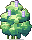
Мята перечная
Холодит язык и проясняет голову. Деревенские берут её от жара и тяжёлых снов.
Свойства: Свежесть II, Покой I
Где растёт: Огород, сырые места у воды
Цена: 3 мон.

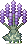
Лаванда
Пахнет летним вечером. Мешочек под подушкой прогоняет кошмары, а настой утихомирит даже гнома.
Свойства: Покой II, Сон I
Где растёт: Огород, солнечные поляны
Цена: 3 мон.
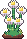
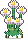
Ромашка аптечная
Маленькое солнце на тонком стебле. Первый чай, который варит любой травник для озябших детей.
Свойства: Тепло I, Исцеление I
Где растёт: Огород, луговые опушки
Цена: 3 мон.
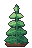
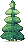
Крапива двудомная
Кусается, но лечит. Отвар возвращает силы после долгой зимы. Рвать бережно, в перчатках.
Свойства: Сила II, Жгучесть I
Где растёт: Лесная кромка
Цена: 3 мон.
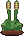
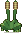
Подорожник большой
Растёт у каждой тропинки. Лист к ссадине — и боль уходит. Его знает каждый ребёнок.
Свойства: Исцеление I, Свежесть I
Где растёт: Тропинки и луга
Цена: 2 мон.

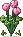
Клевер луговой
Сладкие розовые головки, которые обожают шмели. Чай из клевера мягко успокаивает.
Свойства: Покой I, Исцеление I
Где растёт: Луга и поля
Цена: 2 мон.

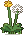
Одуванчик
Жёлтый, как цыплёнок, а потом — белый и пушистый. Горький корень бодрит после болезни.
Свойства: Сила I, Тепло I
Где растёт: Луга, обочины
Цена: 2 мон.

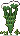
Тысячелистник
Резные листья и белые зонтики. Им останавливали кровь ещё древние воины.
Свойства: Исцеление II
Где растёт: Сухие луга
Цена: 4 мон.
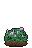
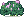
Чабрец
Стелется ковриком по пригоркам. Чай с чабрецом греет лучше печки.
Свойства: Тепло II
Где растёт: Пригорки, степь
Цена: 4 мон.
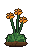
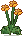
Календула
Ноготки — рыжие, как закат. Мазь из них затягивает любую ранку.
Свойства: Исцеление II, Тепло I
Где растёт: Луга у жилья
Цена: 4 мон.

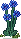
Василёк синий
Синие звёздочки среди колосьев. Примочки из васильков снимают усталость глаз.
Свойства: Свежесть I, Покой I
Где растёт: Поля
Цена: 3 мон.

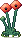
Мак полевой
Алый, как капля вина. Даже лепесток в чае клонит в сон.
Свойства: Сон II
Где растёт: Поля, земли Восходящего Солнца
Цена: 5 мон.
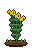
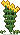
Зверобой
Траву от девяноста девяти болезней собирают в самый солнечный день лета.
Свойства: Тепло II, Сила I
Где растёт: Поля, светлые рощи
Цена: 5 мон.

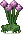
Душица
Пахнет пирогами и летом. Сиреневые метёлки любят пчёлы.
Свойства: Покой I, Тепло I
Где растёт: Опушки берёзовых рощ
Цена: 4 мон.
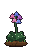
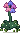
Медуница
Цветы на одном стебле и розовые, и синие. Из неё пьют сладкий нектар шмели и дети.
Свойства: Свежесть I, Исцеление I
Где растёт: Берёзовые рощи, эльфийский лес, розовый лес
Цена: 4 мон.
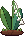
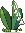
Ландыш майский
Белые колокольчики звенят без звука. В малой капле — покой сердцу, в большой — беда.
Свойства: Покой II
Где растёт: Тенистые рощи, розовый лес
Цена: 6 мон.

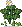
Земляника лесная
Пахнет так, что слышно за десять шагов. Листья — для чая, ягоды — для радости.
Свойства: Свежесть II, Тепло I
Где растёт: Берёзовые, осенние и розовые опушки
Цена: 4 мон.
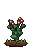
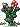
Брусника
Кислые красные бусинки под соснами. Лист брусники — лучший друг почек.
Свойства: Свежесть II, Сила I
Где растёт: Хвойная тайга
Цена: 5 мон.

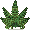
Папоротник мужской
Говорят, он цветёт одну ночь в году. Цветка никто не видел, а силу корень даёт исправно.
Свойства: Сила II
Где растёт: Тайга, паутинная чаща
Цена: 5 мон.
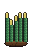
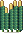
Плаун булавовидный
Зелёные цепочки по земле. Его пыльца вспыхивает искрами — фокусники это любят.
Свойства: Сила I, Жгучесть I
Где растёт: Тайга, каменистые гроты
Цена: 5 мон.

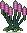
Вереск
Сиреневые пустоши под осенним небом. Вересковый мёд — лучшее снотворное.
Свойства: Покой II, Сон I
Где растёт: Тайга, сумрачные земли
Цена: 6 мон.

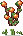
Шиповник
Колючий куст с рыжими ягодами. Отвар из них зимой стоит дороже золота.
Свойства: Сила II, Исцеление I
Где растёт: Осенний лес, рыцарские земли
Цена: 5 мон.
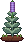
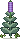
Шалфей
Бархатные серебристые листья. Полощут горло, прогоняют простуду.
Свойства: Исцеление II, Свежесть I
Где растёт: Осенний лес, долина магов
Цена: 5 мон.
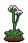
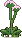
Валериана
Розовые зонтики и корень, от которого сходят с ума кошки. Лучший сон в лесу.
Свойства: Сон II, Покой I
Где растёт: Осенний лес, долина магов
Цена: 6 мон.
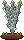
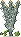
Полынь горькая
Серебристая и горькая-прегорькая. Отпугивает моль, комаров и злых духов.
Свойства: Жгучесть II
Где растёт: Осенние пустоши, степь орков
Цена: 4 мон.
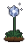
Лунноцвет
Раскрывается только под луной и светится, как маленький фонарик. Один лепесток — и ночь без снов-кошмаров.
Свойства: Сон III
Где растёт: Розовый лес, только ночью
Цена: 18 мон.
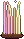
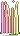
Единорожья грива
Шёлковые перламутровые пряди растут там, где пили единороги. Заживляет даже старые шрамы.
Свойства: Исцеление III
Где растёт: Розовый лес
Цена: 20 мон.

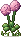
Клевер розовый
Крупный, как пион, и пахнет сахарной ватой. Единороги едят его на десерт.
Свойства: Покой II, Исцеление I
Где растёт: Розовый лес
Цена: 8 мон.
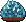
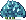
Светомох
Голубой мох светится в темноте пещер. Днём его почти не видно.
Свойства: Свежесть II, Сила II
Где растёт: Гроты, только ночью
Цена: 12 мон.
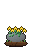
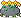
Очиток едкий
Жёлтые звёздочки прямо на голом камне. Пить нельзя, а мазь из него хороша.
Свойства: Жгучесть I, Исцеление I
Где растёт: Камни гротов, горы дворфов
Цена: 6 мон.

Кристальный корень
Корень, проросший сквозь кристалл, сам наполовину кристалл. Звенит, если по нему постучать.
Свойства: Сила III
Где растёт: Глубокие гроты
Цена: 22 мон.

Аир болотный
Длинные мечи-листья у воды. Корень пахнет мандарином и греет живот.
Свойства: Тепло II, Сила I
Где растёт: Болото
Цена: 7 мон.
Багульник
Его дурман висит над болотом белым облачком. Немного — сон, много — голова кругом.
Свойства: Сон II, Жгучесть I
Где растёт: Болото
Цена: 8 мон.

Росянка
Красные ресницы в капельках сладкой росы. Ловит комаров — и правильно делает.
Свойства: Жгучесть II, Исцеление I
Где растёт: Болото
Цена: 14 мон.
Морошка
Янтарная ягода северных болот. Одна ягода на стебель — потому так ценится.
Свойства: Свежесть II, Исцеление I
Где растёт: Болото
Цена: 9 мон.

Облепиха
Ветки облеплены оранжевыми ягодами. Масло облепихи лечит обветренную кожу моряков.
Свойства: Тепло II, Сила II
Где растёт: Побережье
Цена: 10 мон.
Кермек морской
Сухие сиреневые облачка над песком. Не вянет даже зимой в букете.
Свойства: Покой II, Свежесть I
Где растёт: Побережье
Цена: 8 мон.

Катран морской
Сизая морская капуста с белыми цветами. Соль ей нипочём.
Свойства: Свежесть I, Сила I
Где растёт: Побережье
Цена: 6 мон.
Белладонна
Чёрные блестящие ягоды. Вампирши капают её сок в глаза ради красоты. Травнице — только для зелий.
Свойства: Сон III, Жгучесть I
Где растёт: Сумрачные земли, паутинная чаща, ночью
Цена: 16 мон.
Мандрагора
Корень похож на маленького человечка и, говорят, пищит, когда его вынимают.
Свойства: Сила II, Сон II
Где растёт: Сумрачные земли, долина магов
Цена: 18 мон.

Эльфийский лист
Эльфийки заворачивают в него дорожный хлеб. Свежесть держится неделями.
Свойства: Исцеление II, Свежесть II
Где растёт: Лес эльфов
Цена: 12 мон.
Перилла
Резные пурпурные листья, пахнут мятой и корицей сразу. Любимая приправа кицунэ.
Свойства: Свежесть II, Тепло I
Где растёт: Земли Восходящего Солнца
Цена: 8 мон.
Женьшень
Корень жизни. Растёт десятки лет и прячется от того, кто ищет его с жадностью.
Свойства: Сила III, Тепло I
Где растёт: Земли Восходящего Солнца
Цена: 24 мон.

Огнецвет
Стручки горят изнутри, как угольки. Орки едят его сырым на спор.
Свойства: Жгучесть III, Тепло II
Где растёт: Степь орков, горы дворфов
Цена: 14 мон.

Котовник
Кошкодевочки делают вид, что он им безразличен. Но мурлычут, проходя мимо.
Свойства: Покой II, Сон I
Где растёт: Деревня кошкодевочек
Цена: 6 мон.
Звёздный колокольчик
Синие колокольчики со звёздочкой внутри. Маги слушают их звон в полнолуние.
Свойства: Покой I, Сон I, Свежесть I
Где растёт: Долина магов
Цена: 9 мон.

Паутинная трава
Тонкие травинки, оплетённые серебряной паутинкой. Паучихи вяжут из неё нитки.
Свойства: Покой I, Жгучесть I
Где растёт: Паутинная чаща
Цена: 6 мон.

Арника горная
Жёлтая ромашка гор. Дворфы и рыцари мажут ею ушибы после драк и турниров.
Свойства: Исцеление II, Сила I
Где растёт: Горы дворфов, рыцарские земли
Цена: 8 мон.
Огненная лилия
Лепестки тлеют, как угли, и светятся в темноте. Голой рукой не взять — обожжёт.
Свойства: Огонь III, Свет I
Где растёт: Степь орков и горы дворфов, ночью
Цена: 45 мон.
Ледяной лотос
Растёт на студёных озёрах тайги. Тает в тёплых руках, если медлить.
Свойства: Холод III, Покой I
Где растёт: Тайга, на рассвете
Цена: 40 мон.

Теневая орхидея
Раскрывается только в полной темноте. Свет факела — и она прячется.
Свойства: Тьма III, Чары I
Где растёт: Сумрачные земли и паутинная чаща, глубокой ночью
Цена: 42 мон.

Солнечник
Золотой цветок полей. Смотрит на солнце и в полдень сияет сам.
Свойства: Свет III, Тепло I
Где растёт: Поля, только в полдень
Цена: 38 мон.
Драконий корень
Корень в чешуйках, тёплый на ощупь. Сидит глубоко — без лопаты не достать.
Свойства: Огонь II, Сила II
Где растёт: Степь орков
Цена: 36 мон.
Бездноцвет
Чёрный цветок с глазом посередине. Глядит в ответ. Говорят, его видели в гротах раз в несколько лет.
Свойства: Тьма III, Чары II, Жгучесть I
Где растёт: Гроты и Сумрачные земли, полночь
Цена: 400 мон.

Перо феникса
Огненная трава, что сгорает и вырастает из пепла. Видят её раз в жизни.
Свойства: Огонь III, Исцеление III, Свет II
Где растёт: Горы дворфов, на рассвете
Цена: 500 мон.

Лист Великого древа
Падает с древа эльфов раз в сто лет. Тёплый и тихо звенит.
Свойства: Исцеление III, Чары III, Свежесть I
Где растёт: Лес эльфов
Цена: 450 мон.
Подводные травы (нужно зелье русалки) (16)


Морской салат
Тонкие зелёные листья, как мокрый шёлк. Русалки заворачивают в них рыбу.
Свойства: Свежесть II
Где растёт: Мелководье у берега
Цена: 3 мон.

Взморник
Длинные ленты качаются в такт течению. Подушка из взморника отгоняет бессонницу.
Свойства: Покой II
Где растёт: Песчаное дно
Цена: 4 мон.
Золотая ламинария
Бурые ленты с золотым отливом. Сушёная — лучшая подкормка для усталых мышц.
Свойства: Свежесть II, Сила I
Где растёт: Каменистое дно
Цена: 6 мон.

Морской виноград
Зелёные шарики на ползучем стебле. Лопаются на языке, как икринки, и пахнут йодом.
Свойства: Свежесть I, Исцеление I
Где растёт: Среди кораллов
Цена: 5 мон.

Штормовая трава
Жёсткая, с пузырьками воздуха. Выживает даже там, где волны ломают камни.
Свойства: Сила II, Жгучесть I
Где растёт: Дно у скал
Цена: 10 мон.

Цветок-анемон
Не цветок и не зверь. Щупальца жгут, зато сок — лучшее средство от ран.
Свойства: Жгучесть II, Исцеление I
Где растёт: Среди кораллов
Цена: 9 мон.


Жемчужный мох
Мягкий мох, усыпанный мелкими белыми шариками. Тихо мерцает у самого дна.
Свойства: Покой I, Исцеление I, Свет I
Где растёт: Дно, рядом с раковинами
Цена: 12 мон.

Коралловый цвет
Розовые веточки, тёплые даже в глубине. Русалки плетут из них венки на праздник.
Свойства: Тепло II, Чары I
Где растёт: Коралловые сады
Цена: 14 мон.

Ледяная водоросль
Голубые кружевные лопасти. Холодные, как зимняя прорубь, даже летом.
Свойства: Холод II, Свежесть I
Где растёт: Глубокое дно
Цена: 18 мон.
Звёздный коралл
Каждая ячейка — маленькая звёздочка. Измельчённый, он даёт силу, как дневной свет.
Свойства: Сила II, Свет I
Где растёт: Коралловые сады
Цена: 22 мон.

Световодоросль
Днём — бледная нить, ночью — изумрудный фонарик. Русалки зажигают ею свои домики.
Свойства: Свет II, Свежесть I
Где растёт: Дно, только ночью
Цена: 16 мон.

Волосы русалки
Тонкие зелёные пряди. Русалки уверяют, что это просто водоросль. Не верь.
Свойства: Исцеление II, Чары I
Где растёт: Глубокое дно
Цена: 30 мон.

Глубинная ламинария
Чёрные ленты с синими прожилками. Растёт там, куда не доходит солнце.
Свойства: Тьма II, Сила II
Где растёт: Самое глубокое дно
Цена: 28 мон.

Лилия сирен
Поёт, когда на неё смотрят. Тот, кто послушает, надолго забывает дорогу домой.
Свойства: Чары II, Покой II
Где растёт: Глубокое дно
Цена: 40 мон.

Приливная орхидея
Раскрывается раз в сутки, в час большого прилива. Даже русалки встречают её редко.
Свойства: Чары II, Свежесть II, Холод I
Где растёт: Глубокое дно
Цена: 55 мон.


Жемчужный цветок
В сердце цветка растёт настоящая жемчужина. Говорят, это слеза морской принцессы.
Свойства: Свет III, Чары II, Исцеление I
Где растёт: Самая глубина
Цена: 120 мон.
 Грибы
Грибы
Грибы растут в своих лесах и часто только в своё время суток.
Грибы (69)
Белый гриб
Где и когда: растёт в осенних, берёзовых и хвойных лесах
Свойства в котле: Исцеление 1, Сила 1
Цена: 12 мон.

Подберёзовик
Где и когда: только под берёзами
Свойства в котле: Свежесть 1, Исцеление 1
Цена: 7 мон.

Лисичка
Где и когда: показывается по утрам, с 5 до 12
Свойства в котле: Свежесть 1, Тепло 1
Цена: 8 мон.

Мухомор
Где и когда: ядовитый! есть нельзя, только для зелий
Свойства в котле: Жгучесть 1, Тьма 1, Чары 1
Цена: 4 мон.
Светящаяся шляпка
Где и когда: светится только ночью, с 20 до 5, в гротах и паутинной чаще
Свойства в котле: Свежесть 1, Свет 1
Цена: 15 мон.
Лунный гриб
Где и когда: редкий, только глубокой ночью (22-4), в лесу единорогов и долине магов
Свойства в котле: Сон 1, Свет 2, Чары 2
Цена: 40 мон.

Болотный опёнок
Где и когда: растёт на болоте
Свойства в котле: Сон 1, Тьма 1
Цена: 6 мон.

Паутинник
Где и когда: только в паутинной чаще
Свойства в котле: Покой 1, Тьма 1
Цена: 9 мон.

Кровавая сыроежка
Где и когда: появляется в Сумеречье с вечера до утра (18-6)
Свойства в котле: Сила 1, Тьма 2
Цена: 14 мон.

Эльфийская звёздочка
Где и когда: растёт только в лесу эльфов
Свойства в котле: Исцеление 2, Чары 1
Цена: 18 мон.
Сморчок
Где и когда: на лугах и полях, только ранним утром (5-10)
Свойства в котле: Сила 2
Цена: 10 мон.

Луговой шампиньон
Где и когда: на полях и лугах
Свойства в котле: Исцеление 1, Сила 1
Цена: 5 мон.

Вёшенка
Где и когда: растёт ярусами на старых берёзах и дубах
Свойства в котле: Исцеление 1, Свежесть 1
Цена: 7 мон.
Опёнок осенний
Где и когда: семейками на пнях в осеннем и берёзовом лесу
Свойства в котле: Сила 1, Тепло 1
Цена: 6 мон.
Подосиновик
Где и когда: оранжевая шляпка, под осинами и берёзами
Свойства в котле: Исцеление 1, Тепло 1
Цена: 11 мон.
Маслёнок
Где и когда: скользкая шляпка, в соснах после дождя
Свойства в котле: Свежесть 1, Покой 1
Цена: 6 мон.
Рыжик
Где и когда: рыжий, с кольцами на шляпке, в хвойном лесу
Свойства в котле: Тепло 2
Цена: 10 мон.
Груздь
Где и когда: прячется под листьями в берёзовой роще
Свойства в котле: Сила 1, Свежесть 1
Цена: 9 мон.

Сыроежка зелёная
Где и когда: в берёзах и на опушках
Свойства в котле: Свежесть 1
Цена: 4 мон.
Сыроежка жёлтая
Где и когда: в соснах и осенних лесах
Свойства в котле: Тепло 1
Цена: 4 мон.
Гриб-зонтик
Где и когда: высокий, со шляпкой-зонтом, на лугах и полях
Свойства в котле: Сила 1, Покой 1
Цена: 9 мон.
Дождевик
Где и когда: белый шарик на лугу; старый пылит облачком
Свойства в котле: Свежесть 1, Сон 1
Цена: 3 мон.

Гигантский головач
Где и когда: редкий великан полей, с голову размером
Свойства в котле: Сила 2, Исцеление 1
Цена: 18 мон.

Навозник белый
Где и когда: лохматый колокольчик; к вечеру растекается чернилами
Свойства в котле: Сон 1, Тьма 1
Цена: 5 мон.
Серно-жёлтый трутовик
Где и когда: яркие оранжевые полки на старых деревьях осенью
Свойства в котле: Огонь 1, Сила 1
Цена: 12 мон.
Трутовик
Где и когда: жёсткий, как копыто; в старину им разжигали огонь
Свойства в котле: Огонь 2
Цена: 5 мон.
Ежовик гребенчатый
Где и когда: белая «борода» на дубах; встречается очень редко
Свойства в котле: Исцеление 2, Чары 1
Цена: 32 мон.
Рогатик
Где и когда: жёлтые веточки-кораллы во мху тайги
Свойства в котле: Свет 1, Свежесть 1
Цена: 8 мон.

Чёрный трюфель
Где и когда: под землёй у дубов; виден только кончик
Свойства в котле: Чары 2, Сила 1
Цена: 60 мон.
Бледная поганка
Где и когда: смертельно ядовита! только для тёмных зелий
Свойства в котле: Тьма 3
Цена: 2 мон.
Пантерный мухомор
Где и когда: ядовитый, в коричневых пятнышках; Сумеречье и тайга
Свойства в котле: Тьма 2, Чары 1
Цена: 5 мон.
Королевский мухомор
Где и когда: золотисто-рыжий, редкий, в хвойной тайге
Свойства в котле: Жгучесть 1, Чары 2
Цена: 9 мон.
Луговой опёнок
Где и когда: растёт кругами — «ведьмины кольца» на лугах
Свойства в котле: Чары 1, Покой 1
Цена: 5 мон.

Лаковица аметистовая
Где и когда: фиолетовый малыш во мху; эльфийский лес и тайга
Свойства в котле: Чары 1, Покой 1
Цена: 8 мон.
Зимний опёнок
Где и когда: оранжевые семейки на ивах у болота
Свойства в котле: Тепло 1, Холод 1
Цена: 6 мон.

Болотный подберёзовик
Где и когда: светлая шляпка, на кочках у болотных берёз
Свойства в котле: Свежесть 1, Сон 1
Цена: 6 мон.

Спарассис курчавый
Где и когда: кудрявый шар у подножия сосен — грибная капуста
Свойства в котле: Исцеление 1, Покой 1
Цена: 24 мон.

Иудино ухо
Где и когда: мягкое «ушко» на ветках бузины
Свойства в котле: Холод 1, Исцеление 1
Цена: 5 мон.

Призрачная шляпка
Где и когда: прозрачная, светится ночью в Сумеречье
Свойства в котле: Тьма 1, Свет 1, Чары 1
Цена: 20 мон.
Мышиный зонтик
Где и когда: шляпка-крылышки, вылезает к ночи
Свойства в котле: Тьма 2, Сон 1
Цена: 14 мон.
Кровоножка
Где и когда: если надломить — сочится алым соком
Свойства в котле: Сила 1, Жгучесть 1
Цена: 9 мон.
Паучья вуаль
Где и когда: фиолетовая, под шляпкой — паутинное покрывало
Свойства в котле: Покой 1, Чары 1
Цена: 11 мон.
Шёлковый дождевик
Где и когда: белый шарик, обмотанный шёлком паучат
Свойства в котле: Сон 2
Цена: 8 мон.
Хрустальная шляпка
Где и когда: прозрачная, как лёд; растёт в гротах между кристаллами
Свойства в котле: Холод 1, Свет 1, Чары 1
Цена: 28 мон.

Гриб-фонарик
Где и когда: светится оранжевым ночью в гротах
Свойства в котле: Свет 2, Тепло 1
Цена: 16 мон.

Пещерный рогатик
Где и когда: бледно-голубые веточки на стенах гротов
Свойства в котле: Холод 1, Свет 1
Цена: 10 мон.
Радужный гриб
Где и когда: переливается всеми цветами; только в розовом лесу
Свойства в котле: Свет 2, Чары 2
Цена: 30 мон.

Леденцовый гриб
Где и когда: пахнет карамелью; розовый лес
Свойства в котле: Покой 1, Свежесть 1
Цена: 12 мон.
Облачный дождевик
Где и когда: мягкий, как облачко; розовый лес днём
Свойства в котле: Покой 2, Свет 1
Цена: 14 мон.
Сердечный гриб
Где и когда: шляпка-сердечко; дарят тем, кого любят
Свойства в котле: Исцеление 2, Чары 2
Цена: 45 мон.
Звёздный дождевик
Где и когда: лучи звезды раскрываются в долине магов
Свойства в котле: Свет 1, Чары 2
Цена: 15 мон.

Гриб маны
Где и когда: синий, высокий, светится ночью; маги варят из него ману
Свойства в котле: Чары 3
Цена: 26 мон.

Гриб мудреца
Где и когда: серо-зелёный, в эльфийском лесу; проясняет мысли
Свойства в котле: Покой 2, Чары 1
Цена: 14 мон.

Листовой трутовик
Где и когда: зелёные полки на эльфийских деревьях
Свойства в котле: Свежесть 2
Цена: 12 мон.

Борода гнома
Где и когда: рыжая «борода» на брёвнах у шахт дворфов
Свойства в котле: Сила 2
Цена: 13 мон.
Железная шляпка
Где и когда: твёрдая, как железо; растёт у рудных жил
Свойства в котле: Сила 1, Холод 1
Цена: 15 мон.
Угольный гриб
Где и когда: чёрный, с тлеющими трещинками; степь и гроты
Свойства в котле: Огонь 2, Жгучесть 1
Цена: 16 мон.

Степной сморчок
Где и когда: сухой степной сморчок, только утром
Свойства в котле: Сила 1, Тепло 1
Цена: 12 мон.
Шиитаке
Где и когда: на дубовых брёвнах в Сакураяме
Свойства в котле: Сила 1, Исцеление 1
Цена: 9 мон.

Эноки
Где и когда: тонкие белые ножки пучком
Свойства в котле: Свежесть 1, Холод 1
Цена: 7 мон.
Мацутакэ
Где и когда: редкий сосновый гриб, драгоценный подарок
Свойства в котле: Сила 1, Тепло 1, Чары 1
Цена: 55 мон.
Сакуровый гриб
Где и когда: розовый, под цветущей сакурой
Свойства в котле: Покой 1, Свет 1
Цена: 10 мон.

Береговой шампиньон
Где и когда: в песке у дюн на побережье
Свойства в котле: Свежесть 1, Сила 1
Цена: 6 мон.

Морское ушко
Где и когда: на выброшенных морем корягах
Свойства в котле: Холод 1, Свежесть 1
Цена: 8 мон.
Кошачья шляпка
Где и когда: шляпка с ушками! растёт только в Мурлыкино
Свойства в котле: Покой 2
Цена: 12 мон.
Рыцарский шлем
Где и когда: серая шляпка-шлем у стен Кронхольма
Свойства в котле: Сила 2
Цена: 10 мон.
Королевский венец
Где и когда: золотая корона; говорят, вырастает там, где проезжала королева
Свойства в котле: Сила 1, Свет 2, Чары 1
Цена: 50 мон.

Морозный гриб
Где и когда: в инее, только ночью и на рассвете (0-8) в тайге
Свойства в котле: Холод 3
Цена: 16 мон.

Солнечный гриб
Где и когда: золотой, показывается только в полдень (11-15) на полях
Свойства в котле: Тепло 2, Свет 1
Цена: 16 мон.
 Зелья и рецепты
Зелья и рецепты
Зелье получается, когда в котле набралось нужных свойств. Основа решает, что выйдет: чай, мазь, настойка, сироп или эликсир. Травы можно: растереть, нарезать, высушить, обжечь, замочить — это меняет их свойства. Рецепт в карточке — один из возможных.
Вода — чай (45)
Сонный чай
Помогает уснуть и прогоняет кошмары.
Нужно свойств: Сон 2
Основа: Вода
Рецепт: Вода, холодная + Мак полевой

Бодрящий чай
Возвращает силы после тяжёлой работы.
Нужно свойств: Свежесть 2, Сила 2
Основа: Вода
Рецепт: Вода, холодная + Светомох
Успокаивающий чай
Унимает тревогу и дрожь в руках.
Нужно свойств: Покой 3
Основа: Вода
Рецепт: Вода, тёплая + Лаванда (растереть)
Мятный чай
Снимает жар и тошноту после пира.
Нужно свойств: Свежесть 4
Основа: Вода
Рецепт: Вода, тёплая + Мята перечная (растереть, нарезать)

Согревающий чай
Лечит простуду и озноб.
Нужно свойств: Свежесть 1, Тепло 1
Основа: Вода
Рецепт: Вода, холодная + Мята перечная (высушить, нарезать)

Чай доброго утра
Глаза открываются сами, а день кажется длиннее.
Нужно свойств: Свежесть 2, Тепло 2
Основа: Вода, тёплая
Рецепт: Вода, тёплая + Мята перечная + Мята перечная (растереть, высушить)

Детский чай от колик
Младенцы засыпают, а мамы выдыхают.
Нужно свойств: Покой 2, Тепло 1, Исцеление 1
Основа: Вода, тёплая
Рецепт: Вода, тёплая + Клевер розовый (нарезать, высушить)
Чай ясной головы
Мысли раскладываются по полочкам.
Нужно свойств: Свежесть 2, Покой 2
Основа: Вода, тёплая
Рецепт: Вода, тёплая + Кермек морской (растереть, нарезать)
Чай странника
Дорога короче, ноги не ноют.
Нужно свойств: Тепло 2, Сила 2
Основа: Вода, тёплая
Рецепт: Вода, тёплая + Светомох (растереть, высушить)

Луговой сбор
Всего понемногу — от всего понемногу.
Нужно свойств: Свежесть 1, Покой 1, Исцеление 2
Основа: Вода, тёплая
Рецепт: Вода, тёплая + Мята перечная + Ромашка аптечная (замочить, растереть)
Чай сладких снов
Снится детство и запах пирогов.
Нужно свойств: Покой 2, Сон 3
Основа: Вода, тёплая
Рецепт: Вода, тёплая + Мята перечная + Валериана (растереть)

Чай от кашля
Грудь дышит свободно уже к вечеру.
Нужно свойств: Тепло 2, Исцеление 2
Основа: Вода, тёплая
Рецепт: Вода, тёплая + Календула (нарезать, высушить)
Чай болтушки
Развязывает язык самым молчаливым гостям.
Нужно свойств: Свежесть 1, Тепло 2, Жгучесть 1
Основа: Вода, тёплая
Рецепт: Вода, тёплая + Мята перечная (высушить, нарезать) + Плаун булавовидный


Чай памяти
Вспоминаются имена, даты и куда положила ключи.
Нужно свойств: Свежесть 3, Чары 1
Основа: Вода, тёплая
Рецепт: Вода, тёплая + Эльфийский лист (растереть)
Светлячковый чай
Кожа тихо светится до самого утра.
Нужно свойств: Свежесть 1, Свет 2
Основа: Вода, тёплая
Рецепт: Вода, тёплая + Единорожья грива (растереть, нарезать)
Обязательно: одна из: Светомох, Светящаяся шляпка, Огненная лилия, Солнечник, Единорожья грива
Чай кошачьей ласки
Кошкодевочки мурчат от одного запаха.
Нужно свойств: Покой 2, Сон 1, Чары 1
Основа: Вода, тёплая
Рецепт: Вода, тёплая + Котовник
Обязательно: Котовник

Чай от тоски
Тяжёлое на душе становится лёгким.
Нужно свойств: Покой 2, Свет 1
Основа: Вода, тёплая
Рецепт: Вода, тёплая + Огнецвет (растереть, замочить)
Чай певуньи
Голос чистый, как ручей.
Нужно свойств: Свежесть 2, Тепло 1, Исцеление 1
Основа: Вода, тёплая
Рецепт: Вода, тёплая + Ромашка аптечная (нарезать, растереть)
Чай лесной феи
Слышно, о чём шепчутся деревья.
Нужно свойств: Свежесть 2, Покой 1, Чары 1
Основа: Вода, тёплая
Рецепт: Вода, тёплая + Звёздный колокольчик (растереть)

Чай рыцаря
После турнира — как новенькая.
Нужно свойств: Исцеление 2, Сила 2
Основа: Вода, тёплая
Рецепт: Вода, тёплая + Ромашка аптечная + Шиповник
Крепкий отвар
Чёрный, как дёготь. Будит даже медведя.
Нужно свойств: Сила 3
Основа: Вода, горячая
Рецепт: Вода, горячая + Крапива двудомная

Огненный отвар
Пьёшь — и внутри разгорается печка.
Нужно свойств: Тепло 2, Огонь 2
Основа: Вода, горячая
Рецепт: Вода, горячая + Огнецвет
Банный отвар
Плеснуть на камни — и любая хворь выходит паром.
Нужно свойств: Тепло 3, Исцеление 1
Основа: Вода, горячая
Рецепт: Вода, горячая + Ромашка аптечная (растереть)

Отвар от простуды
Пот, одеяло, сон — к утру здорова.
Нужно свойств: Тепло 2, Исцеление 2
Основа: Вода, горячая
Рецепт: Вода, горячая + Лист Великого древа (нарезать, высушить)
Жаропот
Выгоняет лихорадку вместе с потом.
Нужно свойств: Тепло 3, Жгучесть 1
Основа: Вода, горячая
Рецепт: Вода, горячая + Мята перечная (растереть, высушить) + Крапива двудомная
Кузнечный отвар
Кузнецы пьют его, чтобы молот был лёгким.
Нужно свойств: Тепло 2, Сила 3
Основа: Вода, горячая
Рецепт: Вода, горячая + Женьшень (нарезать, высушить)

Горький отвар
Гадость редкая. Зато живот больше не болит.
Нужно свойств: Исцеление 1, Жгучесть 2
Основа: Вода, горячая
Рецепт: Вода, горячая + Росянка

Отвар храбрости
Колени не дрожат даже перед троллем.
Нужно свойств: Сила 2, Жгучесть 2
Основа: Вода, горячая
Рецепт: Вода, горячая + Крапива двудомная + Крапива двудомная
Отвар от ломоты
Спина гнётся, как в юности.
Нужно свойств: Исцеление 2, Сила 2
Основа: Вода, горячая
Рецепт: Вода, горячая + Ромашка аптечная + Шиповник
Охотничий отвар
Шаги тише, глаза зорче.
Нужно свойств: Сила 2, Тьма 1
Основа: Вода, горячая
Рецепт: Вода, горячая + Плаун булавовидный (замочить, обжечь)

Драконья кровь
Густой и алый. Говорят, после него можно дышать дымом.
Нужно свойств: Сила 3, Огонь 4
Основа: Вода, горячая
Рецепт: Вода, горячая + Ромашка аптечная (обжечь, растереть) + Драконий корень (растереть)
Обязательно: одна из: Драконий корень, Огненная лилия

Солнечный отвар
В кружке будто плещется кусочек полдня.
Нужно свойств: Тепло 3, Свет 3
Основа: Вода, горячая
Рецепт: Вода, горячая + Мята перечная (растереть, высушить) + Солнечник
Обязательно: Солнечник
Отвар феникса
Поднимает даже того, кто уже не дышит. Легенда травников.
Нужно свойств: Исцеление 5, Огонь 6, Свет 3
Основа: Вода, горячая
Рецепт: Вода, горячая + Перо феникса + Перо феникса
Обязательно: Перо феникса
Ледяной настой
Зубы ломит, а голова — ясная.
Нужно свойств: Свежесть 1, Холод 2
Основа: Вода, холодная
Рецепт: Вода, холодная + Ромашка аптечная (нарезать, замочить)

Холодный морс
Лучшее, что можно выпить в жару.
Нужно свойств: Свежесть 3, Холод 1
Основа: Вода, холодная
Рецепт: Вода, холодная + Мята перечная (растереть)

Настой от зноя
Солнечный удар отступает за минуту.
Нужно свойств: Покой 1, Холод 2
Основа: Вода, холодная
Рецепт: Вода, холодная + Мята перечная (высушить, замочить)
Настой от ожогов
Примочка — и кожа больше не горит.
Нужно свойств: Исцеление 2, Холод 2
Основа: Вода, холодная
Рецепт: Вода, холодная + Ромашка аптечная (замочить, растереть)
Тихий настой
Безмолвие внутри. Мысли текут медленно, как река.
Нужно свойств: Покой 3, Холод 1
Основа: Вода, холодная
Рецепт: Вода, холодная + Лаванда (растереть)

Утренняя роса
Умыться им — и лицо свежее, как после сна.
Нужно свойств: Свежесть 2, Холод 2
Основа: Вода, холодная
Рецепт: Вода, холодная + Земляника лесная (замочить)

Настой ночного зрения
В темноте видно, как в сумерках.
Нужно свойств: Свежесть 2, Тьма 2
Основа: Вода, холодная
Рецепт: Вода, холодная + Мята перечная + Мята перечная (обжечь, растереть)
Настой тумана
Вокруг тебя стелется туман — попробуй найди.
Нужно свойств: Холод 2, Тьма 2
Основа: Вода, холодная
Рецепт: Вода, холодная + Ландыш майский (растереть, обжечь)

Настой русалки
Под водой можно дышать — недолго, но можно.
Нужно свойств: Свежесть 3, Холод 3
Основа: Вода, холодная
Рецепт: Вода, холодная + Мята перечная + Ледяной лотос (растереть, нарезать)
Обязательно: одна из: Кермек морской, Катран морской, Ледяной лотос

Зимний сон
Спишь, как медведь в берлоге: глубоко и без снов.
Нужно свойств: Сон 3, Холод 3
Основа: Вода, холодная
Рецепт: Вода, холодная + Мак полевой (растереть) + Ледяной лотос
Обязательно: Ледяной лотос
Слеза луны
Серебряная капля. Маги платят за неё золотом.
Нужно свойств: Холод 3, Свет 3, Чары 2
Основа: Вода, холодная
Рецепт: Вода, холодная + Мята перечная (высушить, замочить) + Лунный гриб (растереть)
Обязательно: одна из: Лунноцвет, Лунный гриб

Сердце ледника
Время вокруг замедляется, как зимой подо льдом.
Нужно свойств: Покой 3, Холод 6, Чары 3
Основа: Вода, холодная
Рецепт: Вода, холодная + Ледяной лотос (растереть) + Лист Великого древа (растереть, нарезать) + Кермек морской (нарезать)
Обязательно: Ледяной лотос; Лист Великого древа
Воск — мазь (22)
Заживляющая мазь
Затягивает ссадины и порезы.
Нужно свойств: Исцеление 2
Основа: Воск
Рецепт: Воск, тёплая + Ромашка аптечная (замочить, растереть)

Мазь от ушибов
Снимает отёк и синяки.
Нужно свойств: Исцеление 1, Сила 2
Основа: Воск
Рецепт: Воск, тёплая + Шиповник
Холодящая мазь
Успокаивает ожоги.
Нужно свойств: Свежесть 2, Покой 2
Основа: Воск
Рецепт: Воск, тёплая + Кермек морской (растереть, нарезать)
Мазь от укусов
Комары облетают стороной, а укусы не чешутся.
Нужно свойств: Свежесть 2, Жгучесть 1
Основа: Воск
Рецепт: Воск, тёплая + Мята перечная + Плаун булавовидный
Согревающая мазь
Растереть спину — и никакой мороз не страшен.
Нужно свойств: Тепло 3, Жгучесть 1
Основа: Воск
Рецепт: Воск, тёплая + Мята перечная (растереть, высушить) + Крапива двудомная

Мазь для суставов
Колени больше не скрипят на погоду.
Нужно свойств: Тепло 2, Сила 2
Основа: Воск
Рецепт: Воск, тёплая + Светомох (растереть, высушить)
Мазь от мозолей
Ноги снова влезают в сапоги.
Нужно свойств: Исцеление 3
Основа: Воск
Рецепт: Воск, тёплая + Тысячелистник (растереть)
Мазь от обморожения
Пальцы оттаивают и розовеют.
Нужно свойств: Тепло 2, Исцеление 2
Основа: Воск
Рецепт: Воск, тёплая + Календула (нарезать, высушить)

Мазь от ожогов
Кузнецы и пекарши держат её у печи.
Нужно свойств: Исцеление 2, Холод 2
Основа: Воск
Рецепт: Воск, тёплая + Эльфийский лист (высушить, замочить)
Мазь сияния
Кожа сияет, как жемчуг. Вампирши завидуют.
Нужно свойств: Исцеление 1, Свет 2
Основа: Воск
Рецепт: Воск, тёплая + Единорожья грива (растереть, обжечь)

Мазь лёгкой походки
Натереть ступни — и шагаешь, будто летишь.
Нужно свойств: Свежесть 2, Сила 2
Основа: Воск
Рецепт: Воск, тёплая + Светомох
Мазь для лапок
Мягкие подушечки. Кошкодевочки берут ящиками.
Нужно свойств: Покой 2, Исцеление 2
Основа: Воск
Рецепт: Воск, тёплая + Ромашка аптечная (замочить, растереть) + Котовник
Обязательно: Котовник
Оружейная мазь
Клинок не ржавеет и режет, как новый.
Нужно свойств: Сила 3, Жгучесть 2
Основа: Воск
Рецепт: Воск, тёплая + Крапива двудомная + Крапива двудомная

Огнеупорная мазь
Можно взять уголёк голой рукой. Ненадолго.
Нужно свойств: Сила 2, Холод 3
Основа: Воск
Рецепт: Воск, тёплая + Крапива двудомная + Ледяной лотос
Обязательно: одна из: Ледяной лотос, Огненная лилия
Теневая мазь
Ночью тебя не видно даже кошке.
Нужно свойств: Покой 1, Тьма 3
Основа: Воск
Рецепт: Воск, тёплая + Бездноцвет (растереть, замочить)
Обязательно: одна из: Теневая орхидея, Белладонна, Бездноцвет

Мазь от проклятий
Снимает сглаз, порчу и дурной глаз соседки.
Нужно свойств: Свет 3, Чары 2
Основа: Воск
Рецепт: Воск, тёплая + Единорожья грива + Лунный гриб
Обязательно: одна из: Единорожья грива, Солнечник

Мазь драконьей чешуи
Кожа твёрдая, как чешуя. Стрелы отскакивают.
Нужно свойств: Сила 3, Огонь 3
Основа: Воск
Рецепт: Воск, тёплая + Мята перечная (высушить, обжечь) + Драконий корень (растереть)
Обязательно: Драконий корень
Мазь от шрамов
Старые шрамы бледнеют и исчезают.
Нужно свойств: Свежесть 1, Исцеление 4
Основа: Воск
Рецепт: Воск, тёплая + Единорожья грива (растереть, нарезать)
Мазь паучьего шага
Ладони липнут к стенам. Паучихи одобряют.
Нужно свойств: Сила 2, Тьма 2
Основа: Воск
Рецепт: Воск, тёплая + Крапива двудомная + Паутинная трава (растереть, обжечь)
Обязательно: одна из: Паутинная трава, Паутинник

Мазь от зуда
После крапивы и комаров — самое то.
Нужно свойств: Покой 2, Холод 1
Основа: Воск
Рецепт: Воск, тёплая + Душица (растереть, замочить)
Мазь от паутины
Паутина сама соскальзывает с волос и одежды.
Нужно свойств: Покой 1, Жгучесть 2
Основа: Воск
Рецепт: Воск, тёплая + Крапива двудомная + Паутинная трава
Обязательно: одна из: Паутинная трава, Паутинник
Мазь вечной молодости
Эльфийки молчат, что знают рецепт. Морщины уходят навсегда.
Нужно свойств: Исцеление 6, Свет 3, Чары 3
Основа: Воск
Рецепт: Воск, тёплая + Перо феникса (растереть, замочить) + Лист Великого древа
Обязательно: Лист Великого древа
Спирт — настойка (23)

Крапивная настойка
Укрепляет после долгой болезни.
Нужно свойств: Сила 4
Основа: Спирт
Рецепт: Спирт, тёплая + Кристальный корень (растереть)
Настойка от мигрени
Прогоняет головную боль.
Нужно свойств: Покой 2, Жгучесть 1
Основа: Спирт
Рецепт: Спирт, тёплая + Паутинная трава (растереть)

Перцовка
Орки пьют на спор. Травница — по капле от простуды.
Нужно свойств: Тепло 1, Жгучесть 3
Основа: Спирт
Рецепт: Спирт, тёплая + Огнецвет

Настойка от бессонницы
Десять капель — и спишь до петухов.
Нужно свойств: Сон 3
Основа: Спирт
Рецепт: Спирт, тёплая + Мак полевой (растереть)
Сердечные капли
Сердце бьётся ровно, как часы.
Нужно свойств: Покой 2, Исцеление 2
Основа: Спирт
Рецепт: Спирт, тёплая + Мята перечная + Очиток едкий (растереть, замочить)
Боевая настойка
Рыцарши пьют её перед турниром.
Нужно свойств: Сила 3, Жгучесть 2
Основа: Спирт
Рецепт: Спирт, тёплая + Крапива двудомная + Крапива двудомная

Настойка бодрости
Ночь без сна, а глаза ясные.
Нужно свойств: Свежесть 3, Сила 1
Основа: Спирт
Рецепт: Спирт, тёплая + Брусника (растереть)

Капли от кашля
Три капли в тёплую воду — и кашля нет.
Нужно свойств: Свежесть 2, Исцеление 2
Основа: Спирт
Рецепт: Спирт, тёплая + Шалфей (растереть, нарезать)
Настойка ясновидения
Во сне показывают, что будет завтра.
Нужно свойств: Свет 1, Чары 2
Основа: Спирт
Рецепт: Спирт, тёплая + Лунный гриб
Ведьмина настойка
Чёрная, с зелёной искрой. Лучше не спрашивать, зачем.
Нужно свойств: Тьма 2, Чары 2
Основа: Спирт
Рецепт: Спирт, тёплая + Бездноцвет

Огненная вода
Выдохнешь — и свечи загораются сами.
Нужно свойств: Жгучесть 2, Огонь 3
Основа: Спирт
Рецепт: Спирт, тёплая + Мята перечная (высушить, обжечь) + Огнецвет
Ночная настойка
Спишь днём, бодрствуешь ночью. Как вампирша.
Нужно свойств: Сон 2, Тьма 3
Основа: Спирт
Рецепт: Спирт, тёплая + Мята перечная (растереть, обжечь) + Белладонна
Настойка удачи
Монетки находятся, а грибы — белые.
Нужно свойств: Свежесть 1, Свет 2, Чары 1
Основа: Спирт
Рецепт: Спирт, тёплая + Лунный гриб (растереть, нарезать)

Эликсир берсерка
Ярость без страха и боли. Орочий вождь бы оценил.
Нужно свойств: Сила 5, Огонь 2
Основа: Спирт
Рецепт: Спирт, тёплая + Крапива двудомная + Драконий корень (растереть)
Обязательно: одна из: Драконий корень, Женьшень
Багровая настойка
Вкус железа и ночи. Вампирши покупают тайком.
Нужно свойств: Исцеление 1, Сила 2, Тьма 3
Основа: Спирт
Рецепт: Спирт, тёплая + Шиповник + Белладонна (растереть, обжечь)
Обязательно: Белладонна
Звёздная настойка
В бутылке кружатся крошечные звёзды.
Нужно свойств: Свет 3, Чары 3
Основа: Спирт
Рецепт: Спирт, тёплая + Лунноцвет + Лунный гриб
Обязательно: одна из: Лунноцвет, Кристальный корень
Настойка невидимости
Тебя не видно. Совсем. Даже в зеркале.
Нужно свойств: Тьма 4, Чары 3
Основа: Спирт
Рецепт: Спирт, тёплая + Кристальный корень + Теневая орхидея (растереть)
Обязательно: Теневая орхидея
Слёзы мандрагоры
Человечек плакал не зря: сила и сон в одной капле.
Нужно свойств: Сон 3, Сила 3, Тьма 1
Основа: Спирт
Рецепт: Спирт, тёплая + Крапива двудомная + Мандрагора (растереть)
Обязательно: Мандрагора

Северная настойка
Мороз нипочём. Дворфийки пьют её в шахтах.
Нужно свойств: Сила 2, Холод 3
Основа: Спирт
Рецепт: Спирт, тёплая + Облепиха (растереть, замочить)
Травяной бальзам
Девять трав, сорок капель. От всего на свете.
Нужно свойств: Свежесть 1, Тепло 2, Исцеление 2, Сила 1
Основа: Спирт
Рецепт: Спирт, тёплая + Мята перечная (растереть, высушить) + Арника горная (растереть, нарезать)

Хвойная настойка
Пахнет тайгой и смолой. Лёгкие дышат глубже.
Нужно свойств: Свежесть 2, Сила 2
Основа: Спирт
Рецепт: Спирт, тёплая + Светомох
Настойка ветра
Бежишь — и ветер подталкивает в спину.
Нужно свойств: Свежесть 4, Чары 1
Основа: Спирт
Рецепт: Спирт, тёплая + Эльфийский лист (растереть, нарезать)
Настойка бездны
Смотреть в неё долго нельзя. Бездна смотрит в ответ.
Нужно свойств: Тьма 6, Чары 5
Основа: Спирт
Рецепт: Спирт, тёплая + Вереск (обжечь, нарезать) + Бездноцвет (растереть, замочить) + Бездноцвет (нарезать)
Обязательно: Бездноцвет
Мёд — сироп (15)

Сироп для горла
Ложечка — и голос вернулся.
Нужно свойств: Тепло 1, Исцеление 2
Основа: Мёд
Рецепт: Мёд, тёплая + Тысячелистник (нарезать, высушить)

Детский сироп
Сладкий — дети просят ещё и не капризничают.
Нужно свойств: Свежесть 1, Покой 1, Исцеление 1
Основа: Мёд
Рецепт: Мёд, тёплая + Клевер луговой (растереть, нарезать)
Сироп сладкого сна
Колыбельная в ложке.
Нужно свойств: Покой 1, Сон 2
Основа: Мёд
Рецепт: Мёд, тёплая + Валериана

Ягодный сироп
Лето в бутылке. Зимой — на вес золота.
Нужно свойств: Свежесть 2, Сила 1
Основа: Мёд
Рецепт: Мёд, тёплая + Одуванчик (нарезать, растереть)

Пряный сироп
Корица, перец и мёд. Греет до пяток.
Нужно свойств: Тепло 2, Жгучесть 1
Основа: Мёд
Рецепт: Мёд, тёплая + Огнецвет
Сироп нежности
Щёки розовеют, слова становятся мягкими.
Нужно свойств: Тепло 2, Свет 1, Чары 1
Основа: Мёд
Рецепт: Мёд, тёплая + Мята перечная (растереть, высушить) + Лунноцвет

Сироп смеха
Смешно всё: и коровы, и тучи, и даже налоги.
Нужно свойств: Свежесть 2, Чары 1
Основа: Мёд
Рецепт: Мёд, тёплая + Росянка (нарезать, растереть)

Сироп силы
Мешок муки — как пёрышко.
Нужно свойств: Тепло 1, Сила 3
Основа: Мёд
Рецепт: Мёд, тёплая + Кристальный корень (нарезать, высушить)

Золотой сироп
Густой, как солнечный свет. Лечит тоску и раны.
Нужно свойств: Исцеление 2, Свет 3
Основа: Мёд
Рецепт: Мёд, тёплая + Ромашка аптечная (замочить, растереть) + Солнечник
Обязательно: Солнечник

Сироп отваги
Сладкая смелость: и к дракону подойдёшь.
Нужно свойств: Сила 2, Огонь 1
Основа: Мёд
Рецепт: Мёд, тёплая + Крапива двудомная (растереть, обжечь)
Сироп покоя
Буря внутри утихает.
Нужно свойств: Покой 3, Исцеление 1
Основа: Мёд
Рецепт: Мёд, тёплая + Клевер розовый (растереть)
Сироп цветочной феи
Пчёлы садятся на плечи и не жалят.
Нужно свойств: Свежесть 2, Свет 1, Чары 2
Основа: Мёд
Рецепт: Мёд, тёплая + Вереск (растереть, нарезать) + Лунноцвет (растереть, нарезать)
Обязательно: одна из: Лунноцвет, Эльфийская звёздочка, Единорожья грива

Сироп радости
Хочется петь и обнимать всех подряд.
Нужно свойств: Покой 1, Тепло 2, Свет 1
Основа: Мёд
Рецепт: Мёд, тёплая + Мята перечная + Календула (нарезать, высушить)

Сироп старой ведьмы
Тёмный и тягучий. Кошмары больше не приходят.
Нужно свойств: Тепло 2, Тьма 2
Основа: Мёд
Рецепт: Мёд, тёплая + Мята перечная (растереть, высушить) + Мята перечная (обжечь, растереть)

Амброзия
Пища богов. Одна ложка — и год без болезней.
Нужно свойств: Исцеление 5, Свет 5, Чары 4
Основа: Мёд
Рецепт: Мёд, тёплая + Эльфийская звёздочка (растереть, нарезать) + Перо феникса (обжечь, растереть) + Солнечник (нарезать) + Лист Великого древа (обжечь, растереть)
Обязательно: Солнечник; одна из: Лист Великого древа, Перо феникса
Лунная роса — эликсир (17)

Эликсир лунного света
Ночью вокруг тебя светло, как в полнолуние.
Нужно свойств: Свет 2, Чары 2
Основа: Лунная роса
Рецепт: Лунная роса, тёплая + Лунный гриб
Эликсир снов наяву
Во сне можно гулять, где захочешь.
Нужно свойств: Сон 3, Чары 2
Основа: Лунная роса
Рецепт: Лунная роса, тёплая + Лунноцвет
Эликсир полёта
Ноги едва касаются земли.
Нужно свойств: Свежесть 3, Чары 3
Основа: Лунная роса
Рецепт: Лунная роса, тёплая + Мята перечная + Кристальный корень (растереть, нарезать)
Обязательно: одна из: Единорожья грива, Лунноцвет, Кристальный корень
Эликсир звериного языка
Лиса рассказывает сплетни, а ёж — жалуется на соседей.
Нужно свойств: Покой 2, Чары 2
Основа: Лунная роса
Рецепт: Лунная роса, тёплая + Вереск
Эликсир кошачьего облика
Уши, хвост и непреодолимая тяга к коробкам.
Нужно свойств: Покой 2, Сон 1, Чары 3
Основа: Лунная роса
Рецепт: Лунная роса, тёплая + Вереск + Котовник
Обязательно: Котовник
Эликсир ночи
Тьма становится мягкой и послушной.
Нужно свойств: Тьма 3, Чары 2
Основа: Лунная роса
Рецепт: Лунная роса, тёплая + Теневая орхидея
Обязательно: одна из: Белладонна, Теневая орхидея, Кровавая сыроежка
Эликсир пламени
Огонь не жжёт, а слушается.
Нужно свойств: Огонь 3, Чары 2
Основа: Лунная роса
Рецепт: Лунная роса, тёплая + Вереск + Огнецвет (растереть, обжечь)
Обязательно: одна из: Огненная лилия, Огнецвет, Драконий корень

Эликсир льда
Касание — и вода покрывается льдом.
Нужно свойств: Холод 3, Чары 2
Основа: Лунная роса
Рецепт: Лунная роса, тёплая + Вереск + Ледяной лотос
Обязательно: одна из: Ледяной лотос, Морошка
Эликсир жизни
Возвращает силы самым старым и больным.
Нужно свойств: Исцеление 5, Свет 2, Чары 3
Основа: Лунная роса
Рецепт: Лунная роса, тёплая + Единорожья грива + Лист Великого древа
Обязательно: одна из: Женьшень, Единорожья грива
Эликсир истины
Кто выпьет — не сможет соврать до заката.
Нужно свойств: Покой 2, Свет 3, Чары 1
Основа: Лунная роса
Рецепт: Лунная роса, тёплая + Лаванда + Единорожья грива (обжечь, растереть)
Эликсир фортуны
Кости падают шестёрками, а кошки — на четыре лапы.
Нужно свойств: Свежесть 1, Свет 2, Чары 3
Основа: Лунная роса
Рецепт: Лунная роса, тёплая + Лунный гриб (растереть, нарезать)
Обязательно: Лунный гриб

Эликсир дракона
Глаза с вертикальным зрачком и пламя в груди.
Нужно свойств: Сила 4, Огонь 5, Чары 2
Основа: Лунная роса
Рецепт: Лунная роса, тёплая + Перо феникса (обжечь, нарезать) + Кристальный корень + Драконий корень (растереть, нарезать)
Обязательно: Драконий корень; Перо феникса
Эликсир единорога
Чистый, как первый снег. Единороги подходят сами.
Нужно свойств: Покой 2, Исцеление 4, Свет 4
Основа: Лунная роса
Рецепт: Лунная роса, тёплая + Ландыш майский (растереть, высушить) + Перо феникса (нарезать) + Единорожья грива (растереть, обжечь)
Обязательно: Единорожья грива

Эликсир морской девы
Русалки принимают тебя за свою.
Нужно свойств: Свежесть 3, Холод 2, Чары 2
Основа: Лунная роса
Рецепт: Лунная роса, тёплая + Кермек морской (нарезать, растереть) + Эльфийский лист (высушить, замочить)
Обязательно: одна из: Кермек морской, Катран морской

Эликсир русалочьего хвоста
Ноги сливаются в серебристый хвост — целый день можно плавать в море и собирать травы со дна.
Нужно свойств: Свежесть 3, Холод 2, Чары 3
Основа: Лунная роса
Рецепт: Лунная роса, тёплая + Кермек морской + Катран морской + Эльфийский лист + Кристальный корень
Обязательно: одна из: Кермек морской, Катран морской, Морской салат, Ледяная водоросль, Лилия сирен, Приливная орхидея

Эликсир времени
Мир на миг замирает. Часы на башне спорят сами с собой.
Нужно свойств: Свет 3, Тьма 3, Чары 5
Основа: Лунная роса
Рецепт: Лунная роса, тёплая + Бездноцвет + Лунный гриб (растереть)
Обязательно: Бездноцвет

Философский эликсир
Огонь и лёд, свет и тьма в одной капле. Говорят, его не варил никто.
Нужно свойств: Холод 3, Огонь 3, Свет 2, Тьма 3, Чары 3
Основа: Лунная роса
Рецепт: Лунная роса, тёплая + Лист Великого древа (нарезать, обжечь) + Бездноцвет (нарезать) + Перо феникса (растереть, обжечь) + Аир болотный (растереть, замочить)
Обязательно: Перо феникса; Лист Великого древа; Бездноцвет
Еда и блюда
Плоды, ягоды, выпечка, супы и напитки. Внизу — что из чего готовится.
Фрукты (16)
Яблоко
Хрустящее, сочное. Классика любого двора.
Где взять: яблоня
Цена: 3 мон.

Зелёное яблоко
Кисловатое, бодрит лучше любого чая.
Где взять: яблоня
Цена: 3 мон.

Золотое яблоко
Медовое, с золотистой кожицей. Находка для хозяйки.
Где взять: яблоня (редко)
Цена: 12 мон.
Розовое яблочко
С розового дерева единорогов. Пахнет сладкой жвачкой и чуточку магией.
Где взять: розовое древо
Цена: 15 мон.
Вишня
Две вишенки на одном черенке.
Где взять: вишня-сакура
Цена: 4 мон.

Слива сакуры
Мелкая, терпкая, с цветочным привкусом.
Где взять: сакура
Цена: 6 мон.

Груша
Сладкая и мягкая, сок течёт по подбородку.
Где взять: лавка
Цена: 4 мон.
Слива
Тёмная, с сизым налётом.
Где взять: лавка
Цена: 3 мон.

Персик
Бархатный и душистый.
Где взять: лавка
Цена: 5 мон.

Виноград
Гроздь сочных ягод.
Где взять: лавка
Цена: 6 мон.

Лимон
Кислый. Зато чай с ним — песня.
Где взять: лавка
Цена: 4 мон.

Апельсин
Солнце, которое можно съесть.
Где взять: лавка
Цена: 5 мон.
Ломоть арбуза
Красный, сочный, с косточками.
Где взять: лавка
Цена: 6 мон.

Гранат
Рубиновые зёрна. Вампирши говорят, что это просто фрукт.
Где взять: Сумеречье
Цена: 8 мон.

Кокос
С молоком внутри. Растёт на пальмах у пирса.
Где взять: море
Цена: 8 мон.
Инжир
Тягучий, как мёд, внутри полно семечек.
Где взять: лавка
Цена: 6 мон.
Ягоды (9)
Рябина
Горькая, пока не прихватит морозом. Птицы обожают.
Где взять: рябина
Цена: 2 мон.
Малина
Нежная, тает во рту.
Где взять: ягодник, лавка
Цена: 4 мон.

Черника
Синие губы и пальцы обеспечены.
Где взять: ягодник, лавка
Цена: 4 мон.
Ежевика
Колючая, зато сладкая как мёд.
Где взять: ягодник, лавка
Цена: 4 мон.
Чёрная смородина
Терпкая, ароматная, вся в витаминах.
Где взять: лавка
Цена: 3 мон.
Красная смородина
Кисленькая, как маленькие бусины.
Где взять: лавка
Цена: 3 мон.

Крыжовник
Прозрачный и полосатый, как маленькие арбузики.
Где взять: лавка
Цена: 3 мон.
Земляника
Пахнет летом на километр вокруг.
Где взять: луг, лавка
Цена: 5 мон.

Клюква
Кислая-прекислая. Лучше с мёдом.
Где взять: болото, лавка
Цена: 4 мон.
Овощи (13)
Хвойные побеги
Нежные салатовые кончики. Кисленькие, полны витаминов.
Где взять: ель
Цена: 2 мон.

Морковь
Хрустит громче, чем кролик.
Где взять: грядка, лавка
Цена: 2 мон.
Картофель
Скромный, но кормит народы.
Где взять: грядка, лавка
Цена: 2 мон.

Капуста
Круглая, как голова, и хрустящая.
Где взять: грядка, лавка
Цена: 3 мон.

Помидор
Красный и сочный. Брызгает при укусе.
Где взять: грядка, лавка
Цена: 3 мон.

Огурец
Свежий, холодный, на девяносто процентов вода.
Где взять: грядка, лавка
Цена: 2 мон.
Лук
Режешь — плачешь, варишь — радуешься.
Где взять: грядка, лавка
Цена: 2 мон.

Тыква
Круглая и громкая, как оркестровый барабан.
Где взять: грядка, лавка
Цена: 6 мон.

Кукуруза
Золотой початок в зелёных листьях.
Где взять: грядка, лавка
Цена: 3 мон.

Свёкла
Фиолетовые пальцы после неё — не к чему стыдиться.
Где взять: грядка, лавка
Цена: 2 мон.
Редис
Острый, маленький и хрустящий.
Где взять: грядка, лавка
Цена: 2 мон.
Сладкий перец
Сладкий, как фрукт, хрустящий, как огурец.
Где взять: лавка
Цена: 4 мон.
Стручок гороха
Щёлк — и горошинки в ладони.
Где взять: грядка, лавка
Цена: 2 мон.
Орехи (4)
Жёлудь
Сырым не очень вкусный, зато из него выйдет отличный кофе.
Где взять: дуб
Цена: 1 мон.
Лесной орех
Орешек с зелёной юбочкой. Белки подкупаются на него.
Где взять: ясень, лещина
Цена: 3 мон.

Грецкий орех
Морщинистый, как мозг. Кормит надолго.
Где взять: вяз и ясень
Цена: 4 мон.

Кедровый орех
Мелкие, жирные и ужасно вкусные.
Где взять: сосна
Цена: 5 мон.
Выпечка (18)
Хлеб
Ржаной, тёплый, с хрустящей корочкой.
Где взять: лавка, пекарня
Цена: 4 мон.
Чёрный хлеб
Плотный, тёмный, с тмином. Не черствеет неделями.
Где взять: Сумеречье
Цена: 4 мон.

Белый батон
Золотой, длинный, с надрезами.
Где взять: пекарня
Цена: 5 мон.

Булочка с корицей
Улитка с корицей — запах слышен через три дома.
Где взять: Мурлыкино, пекарня
Цена: 6 мон.

Пирожок с рыбой
Главная гордость Шоколадки. Кошки в обмороке.
Где взять: Мурлыкино
Цена: 8 мон.
Яблочный пирог
С корицей и румяной решёткой.
Где взять: пекарня
Цена: 9 мон.

Черничный пирог
Фиолетовая начинка течёт из-под корочки.
Где взять: Долина Звёзд
Цена: 10 мон.

Тыквенный пирог
Пряный, оранжевый, с кружком сливок.
Где взять: Сумеречье
Цена: 12 мон.

Печенье
С шоколадными крошками.
Где взять: пекарня
Цена: 3 мон.
Сахарное печенье
Белое, посыпано звёздочками сахара.
Где взять: Долина Звёзд
Цена: 6 мон.
Пряник
Человечек с глазурью. Не смотри ему в глаза.
Где взять: пекарня
Цена: 5 мон.
Круассан
Слоёный, масляный, хрустит на весь дом.
Где взять: пекарня
Цена: 6 мон.

Лепёшка
Плоская, с пузырьками, прямо с огня.
Где взять: орки, лавка
Цена: 5 мон.
Маффин
С высокой шапочкой и изюмом.
Где взять: кондитерская
Цена: 6 мон.
Блинчики
Стопка с маслом сверху.
Где взять: кухня
Цена: 8 мон.

Лесной хлебец
Хрусткий, с семенами и сушёными травами.
Где взять: Элиарис
Цена: 9 мон.
Хлеб с сыром
Простая рыцарская закуска.
Где взять: Кронхольм
Цена: 8 мон.
Сырная лепёшка
Расплавленный сыр на жаркой лепёшке.
Где взять: Подгорье
Цена: 8 мон.
Сладости (11)

Кленовый сироп
Густой, янтарный. На блины — самое то.
Где взять: клён
Цена: 8 мон.
Торт с клубникой
Взбитые сливки и клубника. Клёна старалась.
Где взять: кондитерская
Цена: 14 мон.
Жемчужный пудинг
Нежный, переливается как перламутр.
Где взять: Жемчужная Бухта
Цена: 10 мон.
Моти
Мягкий рисовый колобок, нежнее облака.
Где взять: Сакураяма
Цена: 7 мон.

Данго
Три шарика на палочке — розовый, белый, зелёный.
Где взять: Сакураяма
Цена: 6 мон.

Медовые соты
Сот с густым мёдом. Липкий, пальцы не отмоешь.
Где взять: Элиарис
Цена: 10 мон.

Жук в карамели
Гоблинский деликатес: хрустит и тянется.
Где взять: Хламбург
Цена: 4 мон.
Варенье
Банка со льняной крышечкой.
Где взять: кухня
Цена: 8 мон.
Шоколад
Тёмный, горький и тающий.
Где взять: лавка
Цена: 9 мон.
Леденец
Спираль на палочке.
Где взять: лавка
Цена: 3 мон.

Ириска
Липнет к зубам.
Где взять: лавка
Цена: 2 мон.
Молочное и яйца (5)

Сыр
С дырочками и острым запахом.
Где взять: лавка
Цена: 7 мон.
Масло
Кусочек солнечного масла.
Где взять: лавка
Цена: 4 мон.

Варёное яйцо
Сваренное вкрутую, с щепоткой соли.
Где взять: кухня
Цена: 2 мон.

Омлет
Пышный, золотистый, с зеленью.
Где взять: кухня
Цена: 6 мон.
Йогурт
Густой, прохладный, с ягодкой.
Где взять: лавка
Цена: 4 мон.
Мясо (7)
Жареное мясо
Сочный кусок, шипящий жир.
Где взять: орки, рыцари
Цена: 11 мон.
Колбаска
Лопается, когда жаришь.
Где взять: лавка
Цена: 6 мон.
Окорок
Копчёный, с розовой каёмкой.
Где взять: лавка
Цена: 14 мон.

Шашлык
Мясо, лук и перец на палке.
Где взять: орки
Цена: 9 мон.

Вяленое мясо
Жёсткое, солёное, в дорогу — самое то.
Где взять: лавка
Цена: 6 мон.
Куриная ножка
Золотая корочка, косточка торчит.
Где взять: кухня
Цена: 7 мон.
Тушёное мясо с картошкой
Густое, наваристое, на целый день сил.
Где взять: кухня, трактир
Цена: 12 мон.
Рыба и море (6)

Сушёная рыбка
Висела на солнышке. Кошки кружат вокруг стойки.
Где взять: Мурлыкино
Цена: 8 мон.
Жареная рыба
С хрустящей корочкой и долькой лимона.
Где взять: костёр
Цена: 9 мон.
Роллы
Рис, водоросли и ломтик рыбы.
Где взять: Сакураяма
Цена: 11 мон.
Рыба на палочке
Жарится на углях, пахнет дымком.
Где взять: костёр
Цена: 7 мон.
Морская капуста
Хрусткая, солёная, с кунжутом.
Где взять: Жемчужная Бухта
Цена: 5 мон.
Онигири
Рисовый треугольник в водорослях.
Где взять: Сакураяма
Цена: 6 мон.
Супы (7)
Уха
Прозрачный бульон с лавровым листом.
Где взять: кухня
Цена: 10 мон.

Грибной суп
Густой, сливочный, с лесным ароматом.
Где взять: кухня
Цена: 9 мон.
Овощной суп
Морковка, картошка и зелень.
Где взять: кухня
Цена: 7 мон.

Тыквенный суп
Бархатный, оранжевый, с сухариками.
Где взять: кухня
Цена: 9 мон.

Луковый суп
С гренкой и тягучим сыром.
Где взять: кухня
Цена: 8 мон.
Грибная похлёбка
Варят гоблины из того, что нашли. Есть можно.
Где взять: Хламбург
Цена: 6 мон.
Мисо-суп
Тёплый, солоноватый, с кубиками тофу.
Где взять: Сакураяма
Цена: 8 мон.
Грибное (2)
Жареные грибы
Румяные, с луком. Дух стоит на весь двор.
Где взять: кухня
Цена: 8 мон.

Грибы на углях
Нанизаны на прутик и обжарены над огнём.
Где взять: Подгорье
Цена: 7 мон.
Напитки (17)
Берёзовый сок
Прозрачный и чуть сладкий. Пей весной.
Где взять: берёза
Цена: 3 мон.
Молоко
Свежее и тёплое. Кошки пьют его вместо воды.
Где взять: Мурлыкино
Цена: 6 мон.
Яблочный сидр
Игристый, с лёгкой кислинкой.
Где взять: Кронхольм
Цена: 7 мон.

Яблочный сок
Мутноватый, прямо с пресса.
Где взять: кухня
Цена: 5 мон.
Ягодный компот
Тёмно-красный, с ягодками на дне.
Где взять: кухня
Цена: 5 мон.

Лимонад
Кислый, сладкий и ледяной.
Где взять: лавка
Цена: 5 мон.
Какао
Густое, с белой шапкой сливок.
Где взять: лавка
Цена: 7 мон.

Кумыс
Кисловатый, шипучий, орки его обожают.
Где взять: Степь Красной Лапы
Цена: 7 мон.

Эль
Пенистый, золотой, по бабушкиному рецепту.
Где взять: Подгорье
Цена: 6 мон.

Медовуха
Тёплая, сладкая, с пряным привкусом.
Где взять: трактир
Цена: 9 мон.
Гранатовый сок
Тёмный, как кровь. Не бойся, это сок.
Где взять: Сумеречье
Цена: 8 мон.
Звёздный чай
Мерцает, как ночное небо. Чашка с блюдцем.
Где взять: Долина Звёзд
Цена: 9 мон.

Зелёный чай
Пахнет свежескошенной травой и ритуалом.
Где взять: Сакураяма
Цена: 6 мон.
Цветочный нектар
Сладкий нектар в тонком бокале.
Где взять: Элиарис
Цена: 8 мон.
Медовая роса
Роса с паутинок, смешанная с мёдом.
Где взять: Паутинная чаща
Цена: 7 мон.
Шипучка из банки
Шипит и стреляет в нос. Банка настоящая.
Где взять: Хламбург
Цена: 5 мон.

Коралловый морс
Розовый, с кусочками кораллового фрукта.
Где взять: Жемчужная Бухта
Цена: 7 мон.
Кухонные рецепты (35)
Яблочный пирог
Яблоко + Горшочек мёда
Яблочный пирог
Зелёное яблоко + Горшочек мёда
Яблочный сок
Яблоко + Холодная вода
Черничный пирог
Черника + Горшочек мёда
Варенье
Малина + Горшочек мёда
Варенье
Ежевика + Горшочек мёда
Варенье
Земляника + Горшочек мёда
Ягодный компот
Клюква + Горшочек мёда + Холодная вода
Ягодный компот
Красная смородина + Горшочек мёда + Холодная вода
Тыквенный суп
Тыква + Холодная вода
Овощной суп
Морковь + Картофель + Холодная вода
Овощной суп
Капуста + Картофель + Холодная вода
Луковый суп
Лук + Хлеб + Сыр
Грибной суп
Белый гриб + Холодная вода
Грибной суп
Лисичка + Холодная вода
Грибной суп
Подберёзовик + Холодная вода
Жареные грибы
Белый гриб + Лук
Жареные грибы
Лисичка + Масло
Жареные грибы
Сморчок + Масло
Жареные грибы
Луговой шампиньон + Масло
Жареные грибы
Болотный опёнок + Лук
Омлет
Варёное яйцо + Масло
Лимонад
Лимон + Горшочек мёда + Холодная вода
Лимонад
Апельсин + Горшочек мёда + Холодная вода
Хлеб с сыром
Хлеб + Сыр
Тушёное мясо с картошкой
Картофель + Жареное мясо + Холодная вода
Тушёное мясо с картошкой
Колбаска + Хлеб
Булочка с корицей
Горшочек мёда + Хлеб
Йогурт
Молоко + Горшочек мёда
Ириска
Жёлудь + Горшочек мёда
Блинчики
Кленовый сироп + Лепёшка
Блинчики
Кукуруза + Масло
Жук в карамели
Божья коровка + Горшочек мёда
Жук в карамели
Кузнечик + Горшочек мёда
Жук в карамели
Жук-навозник + Горшочек мёда
Звери
Возьми в руку угощение и подойди — зверь пойдёт за тобой в загон.
Дикие звери (53)
Утка
Важная крякуша. Любит пруды и булочки.
Пол: ♀ утка / ♂ селезень (у каждой особи свой, видно в подсказке)
Где живёт: Болота, луга, побережье
Любит: bread, veg
В загоне даёт: Утиное яйцо ×1 в день
Малыши: 45%
Голос: крякает «кря-кря»; довольная — тихо бормочет
Кролик
Пушистый непоседа. Ушки слышат шаги за сто шагов.
Пол: ♀ крольчиха / ♂ кролик (у каждой особи свой, видно в подсказке)
Где живёт: Луга, поля, эльфийский лес
Любит: veg, berry
В загоне даёт: Кроличий пух ×2 в день
Малыши: 50%
Голос: стучит лапкой по земле «тук-тук», тихо фыркает; когда гладят — скрежещет зубками

Ёжик
Колючий клубочек. Фыркает, если подойти, и сворачивается.
Пол: ♀ самка / ♂ самец (у каждой особи свой, видно в подсказке)
Где живёт: Луга, леса, паучий край
Любит: fruit, berry, mushroom
В загоне даёт: Иголки ежа ×2 в день
Малыши: 40%
Голос: пыхтит и сопит «пф-пф-пф», иногда пискнет

Белка
Рыжая прыгунья. Прячет орехи и забывает где.
Пол: ♀ белка-самка / ♂ белка-самец (у каждой особи свой, видно в подсказке)
Где живёт: Берёзовые и сосновые леса
Любит: nut, berry
В загоне даёт: Беличий пух ×1 в день
Малыши: 40%
Голос: цокает «цок-цок-цок» и стрекочет трелью

Лиса
Рыжая хитрюга. Днём спит, ночью охотится на мышей.
Пол: ♀ лисица / ♂ лис (у каждой особи свой, видно в подсказке)
Где живёт: Берёзовые и сосновые леса, Сакураяма
Любит: meat, fish
В загоне даёт: Лисья шерсть ×1 в день
Малыши: 30%
Голос: звонко кричит «ва-а-ау» и тявкает; довольная — часто «гекает»

Олень
Стройный и пугливый. Рога сбрасывает каждую весну.
Пол: ♀ лань / ♂ олень (у каждой особи свой, видно в подсказке)
Где живёт: Леса и поляны
Любит: veg, fruit
В загоне даёт: Оленья шерсть ×1 в день
Малыши: 25%
Голос: хрипло лает «бах!», когда насторожится; тихо блеет
Кабан
Сильный и упрямый. Носом находит трюфели под землёй.
Пол: ♀ свиноматка / ♂ кабан (у каждой особи свой, видно в подсказке)
Где живёт: Сосновые и осенние леса, орочьи земли
Любит: veg, mushroom, nut
В загоне даёт: Трюфель ×1 в день
Малыши: 35%
Голос: низко хрюкает и громко фыркает пятачком

Сплющенный кабан
Кабан, на которого однажды сел великан. С тех пор плоский и очень спокойный.
Пол: ♀ самка / ♂ самец (у каждой особи свой, видно в подсказке)
Где живёт: Поля, гроты, болота
Любит: veg, bread
В загоне даёт: Кабанья щетина ×2 в день
Малыши: 40%
Голос: сплющенно хрюкает и смешно пружинит «буэнь»

Волк
Серый странник тайги. Воет на луну и бережёт свою стаю.
Пол: ♀ волчица / ♂ волк (у каждой особи свой, видно в подсказке)
Где живёт: Тайга, Сумеречье
Любит: meat, fish
В загоне даёт: Оленья шерсть ×2 в день
Малыши: 20%
Голос: протяжно воет «у-у-у-о-у»; когда гладят — поскуливает
Песец
Белый, как первый снег. Ныряет в сугроб за мышкой.
Пол: ♀ самка / ♂ самец (у каждой особи свой, видно в подсказке)
Где живёт: Тайга
Любит: meat, fish
В загоне даёт: Лисья шерсть ×2 в день
Малыши: 30%
Голос: лает высоко и коротко «тяв-тяв», по-песцовому

Енот
Полоскун в маске. Моет каждую еду, даже если она чистая.
Пол: ♀ самка / ♂ самец (у каждой особи свой, видно в подсказке)
Где живёт: Берёзы, деревня кошек, осенний лес
Любит: fruit, fish, bread
В загоне даёт: Беличий пух ×2 в день
Малыши: 40%
Голос: чирикает и курлычет трелью; довольный — мурлычет
Барсук
Хозяйственный копатель. Его нора — с кладовками и спальней.
Пол: ♀ самка / ♂ самец (у каждой особи свой, видно в подсказке)
Где живёт: Осенний лес, берёзы, луга
Любит: mushroom, berry, veg
В загоне даёт: Кабанья щетина ×2 в день
Малыши: 35%
Голос: ворчит и сопит носом; довольный — урчит
Рысь
Кисточки на ушах — как антенны. Слышит, как падает хвоинка.
Пол: ♀ самка / ♂ самец (у каждой особи свой, видно в подсказке)
Где живёт: Тайга, горы дворфов
Любит: meat, fish
В загоне даёт: Лисья шерсть ×2 в день
Малыши: 15%
Голос: протяжно и хрипло мяучит «мя-а-ау»; гладят — мурлычет

Лесной кот
Дикий родич домашних котиков. Полосатый хвост, гордый нрав.
Пол: ♀ самка / ♂ самец (у каждой особи свой, видно в подсказке)
Где живёт: Осенний и берёзовый лес
Любит: meat, fish
В загоне даёт: Кошачья шерсть ×2 в день
Малыши: 30%
Голос: мяукает «мяу»; довольный — мурлычет

Бурый медведь
Большой, сильный и сладкоежка. Если приручить — понесёт на спине.
Пол: ♀ медведица / ♂ медведь (у каждой особи свой, видно в подсказке)
Где живёт: Тайга, осенний лес
Любит: sweet, berry, fish
В загоне даёт: Соты ×1 в день
Малыши: 10%
Голос: рычит «р-р-ро-о-ар»; довольный — пыхтит «ух-ух»
Лось
Великан болот с рогами-лопатами. Спокойный, как старый пень.
Пол: ♀ лосиха / ♂ лось (у каждой особи свой, видно в подсказке)
Где живёт: Болота, тайга
Любит: veg, fruit
В загоне даёт: Оленья шерсть ×3 в день
Малыши: 15%
Голос: стонет низким «о-ах» и коротко ухает

Косуля
Маленькая лесная лань с белым зеркальцем на хвосте.
Пол: ♀ самка / ♂ самец (у каждой особи свой, видно в подсказке)
Где живёт: Берёзовые рощи, луга, эльфийский лес
Любит: veg, fruit, berry
В загоне даёт: Оленья шерсть ×1 в день
Малыши: 30%
Голос: резко лает «бяу!», как маленькая собачка
Куница
Ловкая древолазка с золотой манишкой.
Пол: ♀ самка / ♂ самец (у каждой особи свой, видно в подсказке)
Где живёт: Тайга
Любит: meat, berry, nut
В загоне даёт: Беличий пух ×2 в день
Малыши: 30%
Голос: стрекочет «кхе-кхе-кхе»
Горностай
Белая змейка с чёрным кончиком хвоста. Зимой белый, летом — рыжий.
Пол: ♀ самка / ♂ самец (у каждой особи свой, видно в подсказке)
Где живёт: Берёзы, тайга
Любит: meat, nut
В загоне даёт: Кроличий пух ×2 в день
Малыши: 30%
Голос: тихо стрекочет и пищит
Бурундук
Полосатый запасливый малыш. В щёки помещается горсть орехов.
Пол: ♀ самка / ♂ самец (у каждой особи свой, видно в подсказке)
Где живёт: Тайга, берёзы
Любит: nut, berry
В загоне даёт: Беличий пух ×1 в день
Малыши: 50%
Голос: часто и мерно пищит «чип-чип-чип»

Летяга
Глазастая планеристка. Прыгает с дерева и летит, как платочек.
Пол: ♀ самка / ♂ самец (у каждой особи свой, видно в подсказке)
Где живёт: Берёзы, эльфийский лес
Любит: nut, berry
В загоне даёт: Беличий пух ×1 в день
Малыши: 40%
Голос: пищит так тонко, что еле слышно
Лошадь
Верный друг путника. Приручи угощениями и седлай — помчит быстрее ветра.
Пол: ♀ кобыла / ♂ жеребец (у каждой особи свой, видно в подсказке)
Где живёт: Поля, Кронхольм
Любит: veg, fruit, sweet
В загоне даёт: Волос из гривы единорога ×1 в день
Малыши: 30%
Голос: громко ржёт «и-го-го» и фыркает; гладят — тихо «ху-ху-ху»

Пони
Маленькая, пятнистая и упрямая. Зато приручается быстрее всех.
Пол: ♀ пони-кобылка / ♂ пони-жеребец (у каждой особи свой, видно в подсказке)
Где живёт: Луга, Мурлыкино
Любит: fruit, sweet, veg
В загоне даёт: Волос из гривы единорога ×1 в день
Малыши: 40%
Голос: звонко ржёт тонким голоском
Ослик
Терпеливый и упрямый. Везёт много, идёт медленно, ворчит громко.
Пол: ♀ самка / ♂ самец (у каждой особи свой, видно в подсказке)
Где живёт: Поля, степь орков
Любит: veg, fruit
В загоне даёт: Оленья шерсть ×1 в день
Малыши: 35%
Голос: кричит «иа-иа!»

Зубр
Лесной бык-богатырь. Добрый, пока его не дразнят.
Пол: ♀ самка / ♂ самец (у каждой особи свой, видно в подсказке)
Где живёт: Поля, степь
Любит: veg, bread
В загоне даёт: Оленья шерсть ×3 в день
Малыши: 15%
Голос: глухо ревёт и тяжело хрюкает

Заяц-русак
Быстрее ветра в поле. Уши слышат даже облака.
Пол: ♀ самка / ♂ самец (у каждой особи свой, видно в подсказке)
Где живёт: Поля, луга
Любит: veg, berry
В загоне даёт: Кроличий пух ×2 в день
Малыши: 50%
Голос: стучит лапами, а испугавшись — пищит

Крот
Подземный копатель в бархатной шубке. Почти не видит, зато всё чует.
Пол: ♀ самка / ♂ самец (у каждой особи свой, видно в подсказке)
Где живёт: Луга, поля
Любит: veg, mushroom
В загоне даёт: Кроличий пух ×1 в день
Малыши: 40%
Голос: тоненько пищит и шуршит коготками
Полёвка
Мышка с лугов. Шуршит в траве и таскает зёрнышки.
Пол: ♀ самка / ♂ самец (у каждой особи свой, видно в подсказке)
Где живёт: Поля, луга
Любит: bread, nut, veg
В загоне даёт: Кроличий пух ×1 в день
Малыши: 60%
Голос: часто пищит «пи-пи-пи»
Хомяк
Круглый пушистик. Щёки — его кладовая.
Пол: ♀ самка / ♂ самец (у каждой особи свой, видно в подсказке)
Где живёт: Поля, Мурлыкино
Любит: nut, bread, berry
В загоне даёт: Кроличий пух ×1 в день
Малыши: 60%
Голос: пищит и щёлкает зубками

Вислоухий кролик
Ушки-лопушки до земли. Самый ласковый кролик на свете.
Пол: ♀ самка / ♂ самец (у каждой особи свой, видно в подсказке)
Где живёт: Мурлыкино, луга
Любит: veg, berry
В загоне даёт: Кроличий пух ×3 в день
Малыши: 50%
Голос: тихонько фыркает и стучит лапкой
Бродячий пёс
Добрый пёс без хозяина. Покорми — и будет ждать тебя у калитки.
Пол: ♀ самка / ♂ самец (у каждой особи свой, видно в подсказке)
Где живёт: Кронхольм, Мурлыкино
Любит: meat, bread
В загоне даёт: Лисья шерсть ×1 в день
Малыши: 40%
Голос: лает «гав-гав!»; когда гладят — поскуливает и дышит

Улитка
Домик на спине, рожки на голове. Никуда не спешит.
Пол: ♀ самка / ♂ самец (у каждой особи свой, видно в подсказке)
Где живёт: Луга, болота, эльфийский лес
Любит: veg, berry
В загоне даёт: Ракушка ×1 в день
Малыши: 60%
Голос: тихо чмокает и пускает пузырьки

Альпака
Пушистое облако на длинной шее. Даёт самую мягкую шерсть.
Пол: ♀ самка / ♂ самец (у каждой особи свой, видно в подсказке)
Где живёт: Горы дворфов
Любит: veg, fruit
В загоне даёт: Овечья шерсть ×3 в день
Малыши: 40%
Голос: мурлычет-напевает «мм-м»; встревожится — визжит «ви-ви»

Горный козёл
Скачет по скалам, как по лестнице. Рога — полумесяцем.
Пол: ♀ самка / ♂ самец (у каждой особи свой, видно в подсказке)
Где живёт: Горы дворфов
Любит: veg, bread
В загоне даёт: Оленья шерсть ×2 в день
Малыши: 30%
Голос: низко и отрывисто блеет

Баран
Кудрявый упрямец с рогами-завитками. Бодается только в шутку.
Пол: ♀ самка / ♂ самец (у каждой особи свой, видно в подсказке)
Где живёт: Горы, Кронхольм
Любит: veg, bread
В загоне даёт: Овечья шерсть ×2 в день
Малыши: 40%
Голос: басовито блеет «бэ-э»
Як
Мохнатый бык гор. Не мёрзнет даже в метель и катает дворфов.
Пол: ♀ самка / ♂ самец (у каждой особи свой, видно в подсказке)
Где живёт: Горы дворфов
Любит: veg, bread
В загоне даёт: Кувшин молока ×1 в день
Малыши: 30%
Голос: хрюкает, как огромная свинья (его зовут «хрюкающий бык»)
Сурок
Встаёт столбиком и свистит, если видит гостей. Спит всю зиму.
Пол: ♀ самка / ♂ самец (у каждой особи свой, видно в подсказке)
Где живёт: Горы, поля
Любит: veg, nut
В загоне даёт: Беличий пух ×2 в день
Малыши: 40%
Голос: пронзительно свистит «фьить!»

Бобр
Строитель плотин. Грызёт брёвна быстрее топора.
Пол: ♀ самка / ♂ самец (у каждой особи свой, видно в подсказке)
Где живёт: Болота, берёзы
Любит: veg, nut
В загоне даёт: Кабанья щетина ×2 в день
Малыши: 35%
Голос: шлёпает хвостом по воде и тихо хнычет

Выдра
Весёлая пловчиха. Спит на спине и держит камушек в лапке.
Пол: ♀ самка / ♂ самец (у каждой особи свой, видно в подсказке)
Где живёт: Болота, побережье
Любит: fish, meat
В загоне даёт: Лисья шерсть ×1 в день
Малыши: 40%
Голос: щебечет и посвистывает
Капибара
Самый спокойный зверь на свете. С ней дружат все — даже утки сидят на её спине.
Пол: ♀ самка / ♂ самец (у каждой особи свой, видно в подсказке)
Где живёт: Болота, Мурлыкино
Любит: veg, fruit
В загоне даёт: Кабанья щетина ×1 в день
Малыши: 35%
Голос: щёлкает и тихо мурлычет-гудит

Болотная черепаха
Живёт сто лет и никуда не опаздывает.
Пол: ♀ самка / ♂ самец (у каждой особи свой, видно в подсказке)
Где живёт: Болота, побережье
Любит: veg, berry, fish
В загоне даёт: Ракушка ×1 в день
Малыши: 30%
Голос: сердито шипит «хсс»
Степная черепаха
Панцирь-купол в узорах. Обожает одуванчики.
Пол: ♀ самка / ♂ самец (у каждой особи свой, видно в подсказке)
Где живёт: Степь орков
Любит: veg, fruit
В загоне даёт: Ракушка ×1 в день
Малыши: 30%
Голос: шипит и тихо кряхтит

Лягушка
Квакает хором по вечерам. Ловит комаров на лету.
Пол: ♀ самка / ♂ самец (у каждой особи свой, видно в подсказке)
Где живёт: Болота, луга, эльфийский лес
Любит: meat, berry
В загоне даёт: Рыбья чешуя ×1 в день
Малыши: 60%
Голос: квакает «ква-ква»

Жаба
Бородавчатая и важная. Говорят, ведьмы с ними советуются.
Пол: ♀ самка / ♂ самец (у каждой особи свой, видно в подсказке)
Где живёт: Сумеречье, болота
Любит: meat, mushroom
В загоне даёт: Рыбья чешуя ×1 в день
Малыши: 50%
Голос: долго звенит трелью «урр-р-р»
Тритон
Маленький дракончик болот с огненным брюшком.
Пол: ♀ самка / ♂ самец (у каждой особи свой, видно в подсказке)
Где живёт: Болота
Любит: meat
В загоне даёт: Рыбья чешуя ×1 в день
Малыши: 50%
Голос: почти беззвучно попискивает
Уж
Безобидный змей с жёлтыми «ушками». Любит греться на брёвнах.
Пол: ♀ самка / ♂ самец (у каждой особи свой, видно в подсказке)
Где живёт: Болота, луга
Любит: fish, meat
В загоне даёт: Рыбья чешуя ×2 в день
Малыши: 30%
Голос: коротко шипит «пш-пш»

Гадюка
Зигзаг на спине. Не трогай — и она тебя не тронет.
Пол: ♀ самка / ♂ самец (у каждой особи свой, видно в подсказке)
Где живёт: Гроты, осенний лес
Любит: meat
В загоне даёт: Рыбья чешуя ×2 в день
Малыши: 20%
Голос: громко и долго шипит

Прыткая ящерица
Греется на камнях и исчезает в мгновение ока.
Пол: ♀ самка / ♂ самец (у каждой особи свой, видно в подсказке)
Где живёт: Степь, гроты, луга
Любит: meat, berry
В загоне даёт: Рыбья чешуя ×1 в день
Малыши: 40%
Голос: шуршит коготками и чуть шипит

Краб
Ходит боком и щёлкает клешнями. Внутри — добряк.
Пол: ♀ самка / ♂ самец (у каждой особи свой, видно в подсказке)
Где живёт: Побережье
Любит: fish, meat
В загоне даёт: Ракушка ×1 в день
Малыши: 50%
Голос: щёлкает клешнями «клац-клац» и пускает пузыри
Тюлень
Пухлый лежебока с огромными глазами. Обожает рыбу.
Пол: ♀ самка / ♂ самец (у каждой особи свой, видно в подсказке)
Где живёт: Побережье
Любит: fish
В загоне даёт: Рыбья чешуя ×2 в день
Малыши: 30%
Голос: гавкает «арф-арф» и протяжно стонет
Дикобраз
Иглы до пят. Гремит ими, как погремушкой, если сердится.
Пол: ♀ самка / ♂ самец (у каждой особи свой, видно в подсказке)
Где живёт: Степь орков
Любит: veg, fruit
В загоне даёт: Иголки ежа ×3 в день
Малыши: 30%
Голос: стучит зубами и трещит иглами; довольный — тихо напевает
Красная панда
Огненная лисичка-медвежонок. Спит, свесив хвост с ветки.
Пол: ♀ самка / ♂ самец (у каждой особи свой, видно в подсказке)
Где живёт: Сакураяма
Любит: berry, fruit, sweet
В загоне даёт: Лисья шерсть ×2 в день
Малыши: 30%
Голос: фыркает «хаф» и щебечет, как птичка
Тануки
Енотовидный хитрец. Говорят, умеет превращаться в чайник.
Пол: ♀ самка / ♂ самец (у каждой особи свой, видно в подсказке)
Где живёт: Сакураяма
Любит: fruit, fish, bread
В загоне даёт: Лисья шерсть ×2 в день
Малыши: 40%
Голос: поскуливает и тихо ворчит
Домашние (6)

Курочка
Хлопотливая курочка. Каждое утро — тёплое яичко.
Пол: ♀ курица / ♂ петух (у каждой особи свой, видно в подсказке)
Где живёт: Луга, деревни кошек, Сакураяма
Любит: bread, veg, nut
В загоне даёт: Яйцо ×1 в день
Малыши: 60%
Голос: квохчет «ко-ко-ко-кудах!»; на руках — тихо урчит
Гусь
Белый гусь. Шипит на чужих, охраняет загон.
Пол: ♀ гусыня / ♂ гусь (у каждой особи свой, видно в подсказке)
Где живёт: Поля, болота
Любит: bread, veg
В загоне даёт: Гусиное яйцо ×1 в день
Малыши: 45%
Голос: громко гогочет «га-га-га»
Корова
Добрая бурёнка. Молоко, сливки, а значит — пироги.
Пол: ♀ только самки (у каждой особи свой, видно в подсказке)
Где живёт: Поля и рыцарские земли
Любит: veg, bread
В загоне даёт: Кувшин молока ×1 в день
Малыши: 30%
Голос: протяжно мычит «му-у-у»; когда гладят — тихо «мм-м»

Овечка
Облачко на ножках. Шерсть отрастает за пару дней.
Пол: ♀ овца / ♂ баран (у каждой особи свой, видно в подсказке)
Где живёт: Луга, рыцарские земли
Любит: veg, bread
В загоне даёт: Овечья шерсть ×2 в день
Малыши: 45%
Голос: блеет дрожащим «бе-е-е»
Козочка
Бородатая озорница. Залезет куда угодно и всё попробует.
Пол: ♀ коза / ♂ козёл (у каждой особи свой, видно в подсказке)
Где живёт: Поля, эльфийские холмы
Любит: veg, fruit, bread
В загоне даёт: Козье молоко ×1 в день
Малыши: 45%
Голос: высоко и дерзко блеет «ме-е-е»

Свинка
Розовая и умная. Тоже ищет трюфели, но делится.
Пол: ♀ свинья / ♂ хряк (у каждой особи свой, видно в подсказке)
Где живёт: Поля
Любит: veg, bread, fruit, soup
В загоне даёт: Трюфель ×1 в день
Малыши: 50%
Голос: хрюкает «хрю-хрю», иногда визжит
Волшебные (15)

Сапфировый заяц
Заяц из лунного света. Шёрстка звенит, как колокольчик.
Пол: ♀ самка / ♂ самец (у каждой особи свой, видно в подсказке)
Где живёт: Поляны единорогов, долина магов
Любит: sweet, berry
В загоне даёт: Сапфировый пух ×1 в день
Малыши: 15%
Голос: стучит лапкой, и в воздухе звенят хрустальные колокольчики

Золотой олень
Олень с золотой шерстью. Его видят только честные люди.
Пол: ♀ самка / ♂ самец (у каждой особи свой, видно в подсказке)
Где живёт: Эльфийский и берёзовый лес
Любит: fruit, sweet
В загоне даёт: Золотая шерсть ×1 в день
Малыши: 10%
Голос: трубит, и ему отвечает тихий золотой колокол
Угольная лиса
Лиса с хвостом-угольком. Тёплая, как печка.
Пол: ♀ самка / ♂ самец (у каждой особи свой, видно в подсказке)
Где живёт: Гроты, осенний лес
Любит: meat, fish
В загоне даёт: Угольная шерсть ×1 в день
Малыши: 15%
Голос: тявкает, а шерсть потрескивает искрами, как костёр
Единорог
Сама доброта. Даёт радужное молоко, если её любить.
Пол: ♀ самка / ♂ самец (у каждой особи свой, видно в подсказке)
Где живёт: Поляны единорогов
Любит: sweet, fruit
В загоне даёт: Радужное молоко ×1 в день
Малыши: 10%
Голос: звонко ржёт, а вокруг рассыпается звон колокольчиков
Пегас
Крылатый конь из облаков. Позволит сесть только самой терпеливой.
Пол: ♀ самка / ♂ самец (у каждой особи свой, видно в подсказке)
Где живёт: Розовый лес, долина магов
Любит: sweet, fruit
В загоне даёт: Волос из гривы единорога ×2 в день
Малыши: 8%
Голос: ржёт и хлопает крыльями
Кирин
Священный зверь с чешуёй, как нефрит. Ходит так легко, что не мнёт траву.
Пол: ♀ самка / ♂ самец (у каждой особи свой, видно в подсказке)
Где живёт: Сакураяма
Любит: sweet, fruit
В загоне даёт: Звёздная пыль ×1 в день
Малыши: 6%
Голос: ржёт глубоко, и звенят храмовые колокольчики
Кошмар
Конь из сумерек с гривой-пламенем. Страшный только с виду.
Пол: ♀ самка / ♂ самец (у каждой особи свой, видно в подсказке)
Где живёт: Сумеречье, по ночам
Любит: sweet, meat
В загоне даёт: Пыль бездны ×1 в день
Малыши: 5%
Голос: ржёт низко и гулко, будто из-под земли

Лунный волк
Шерсть светится, как луна в воде. Возит только тех, кто не боится темноты.
Пол: ♀ самка / ♂ самец (у каждой особи свой, видно в подсказке)
Где живёт: Долина магов, тайга ночью
Любит: meat, sweet
В загоне даёт: Звёздная пыль ×1 в день
Малыши: 6%
Голос: воет на луну, и вой звенит серебром

Лесной дух-олень
Мох на спине, светлячки в рогах. Где он прошёл — расцветают цветы.
Пол: ♀ самка / ♂ самец (у каждой особи свой, видно в подсказке)
Где живёт: Эльфийский лес
Любит: fruit, berry
В загоне даёт: Пыльца фей ×1 в день
Малыши: 6%
Голос: трубит, а вокруг шелестит листва и гудят деревянные колокола
Рогатый заяц
Заяц с оленьими рожками. Охотники спорят, бывает ли он. Бывает!
Пол: ♀ самка / ♂ самец (у каждой особи свой, видно в подсказке)
Где живёт: Поля, луга
Любит: veg, sweet
В загоне даёт: Золотая шерсть ×1 в день
Малыши: 10%
Голос: стучит лапкой, пищит и звенит рожками

Грифон
Голова орла, тело льва. Гордый, но верный навсегда.
Пол: ♀ самка / ♂ самец (у каждой особи свой, видно в подсказке)
Где живёт: Горы дворфов, Кронхольм
Любит: meat, fish
В загоне даёт: Золотая шерсть ×1 в день
Малыши: 5%
Голос: клекочет, как орёл, с рыком льва; довольный — урчит
Дракончик
Размером с кота, а чихает огнём. Обожает блестяшки.
Пол: ♀ самка / ♂ самец (у каждой особи свой, видно в подсказке)
Где живёт: Горы дворфов, гроты
Любит: meat, sweet
В загоне даёт: Тлеющая пыль ×1 в день
Малыши: 5%
Голос: рычит тоненько и пыхает огнём; довольный — урчит и дымит
Огненная саламандра
Тёплая, как печная заслонка. Пятна на спине светятся в темноте.
Пол: ♀ самка / ♂ самец (у каждой особи свой, видно в подсказке)
Где живёт: Гроты, Сумеречье
Любит: meat
В загоне даёт: Тлеющая пыль ×1 в день
Малыши: 10%
Голос: шипит и потрескивает пламенем
Хрустальная черепаха
На панцире растут кристаллы. Медленная, но катает с достоинством.
Пол: ♀ самка / ♂ самец (у каждой особи свой, видно в подсказке)
Где живёт: Гроты
Любит: veg, mushroom
В загоне даёт: Осколок кристалла ×1 в день
Малыши: 8%
Голос: вздыхает, и звенят хрустальные пластинки панциря
Белый тигр
Страж запада из старых сказок Сакураямы. Мурчит, как гром вдалеке.
Пол: ♀ самка / ♂ самец (у каждой особи свой, видно в подсказке)
Где живёт: Сакураяма
Любит: meat, fish
В загоне даёт: Золотая шерсть ×1 в день
Малыши: 4%
Голос: рычит «р-р-а-а-ар» и фыркает «пф-пф»; гладят — мурлычет
 Кошки и котята
Кошки и котята
Все коты — родня кота травницы: та же порода, разные шубки. Каждый день в деревне кошкодевочек и в городах гуляют другие коты, иногда с котятами. Редкие окрасы выпадают редко.
Обычные окрасы (13)
Чёрный кот
Угольно-чёрный, глаза жёлто-зелёные — как кот травницы.
Деревня кошкодевочек, города, изредка лес. Встречается часто.
Погладь 3 раз — пойдёт жить к тебе и будет ходить следом.
При поглаживании иногда остаётся кошачья шерсть.
Рыжий кот
Солнечно-рыжий, любит греться на крылечках.
Деревня кошкодевочек, города, изредка лес. Встречается часто.
Погладь 3 раз — пойдёт жить к тебе и будет ходить следом.
При поглаживании иногда остаётся кошачья шерсть.

Белая кошка
Белоснежная. Котята у неё голубоглазые.
Деревня кошкодевочек, города, изредка лес. Встречается часто.
Погладь 3 раз — пойдёт жить к тебе и будет ходить следом.
При поглаживании иногда остаётся кошачья шерсть.

Серый кот
Простой серый кот с янтарными глазами. Ловит мышей лучше всех.
Деревня кошкодевочек, города, изредка лес. Встречается часто.
Погладь 3 раз — пойдёт жить к тебе и будет ходить следом.
При поглаживании иногда остаётся кошачья шерсть.

Рыжий полосатый
Рыжий в тёмных полосках, на лбу буква «М».
Деревня кошкодевочек, города, изредка лес. Встречается часто.
Погладь 3 раз — пойдёт жить к тебе и будет ходить следом.
При поглаживании иногда остаётся кошачья шерсть.
Серый полосатый
Серый табби: полоски на боках, кольца на хвосте и лапах.
Деревня кошкодевочек, города, изредка лес. Встречается часто.
Погладь 3 раз — пойдёт жить к тебе и будет ходить следом.
При поглаживании иногда остаётся кошачья шерсть.

Бурый полосатый
Окрас лесного кота: бурые полосы, чтобы прятаться в траве.
Деревня кошкодевочек, города, изредка лес. Встречается часто.
Погладь 3 раз — пойдёт жить к тебе и будет ходить следом.
При поглаживании иногда остаётся кошачья шерсть.
Кремовый кот
Мягкий, как сливки. Глаза медные.
Деревня кошкодевочек, города, изредка лес. Встречается часто.
Погладь 3 раз — пойдёт жить к тебе и будет ходить следом.
При поглаживании иногда остаётся кошачья шерсть.
Кремовый полосатый
Светлый, с едва заметными полосками.
Деревня кошкодевочек, города, изредка лес. Встречается часто.
Погладь 3 раз — пойдёт жить к тебе и будет ходить следом.
При поглаживании иногда остаётся кошачья шерсть.
Шоколадный кот
Тёплый коричневый, как плитка шоколада.
Деревня кошкодевочек, города, изредка лес. Встречается часто.
Погладь 3 раз — пойдёт жить к тебе и будет ходить следом.
При поглаживании иногда остаётся кошачья шерсть.

Кот во фраке
Чёрный с белой манишкой, носочками и мордочкой — всегда нарядный.
Деревня кошкодевочек, города, изредка лес. Встречается часто.
Погладь 3 раз — пойдёт жить к тебе и будет ходить следом.
При поглаживании иногда остаётся кошачья шерсть.
Серо-белый кот
Серая спинка, белые лапки и грудка.
Деревня кошкодевочек, города, изредка лес. Встречается часто.
Погладь 3 раз — пойдёт жить к тебе и будет ходить следом.
При поглаживании иногда остаётся кошачья шерсть.
Рыже-белый кот
Рыжая спинка, белые лапки и грудка.
Деревня кошкодевочек, города, изредка лес. Встречается часто.
Погладь 3 раз — пойдёт жить к тебе и будет ходить следом.
При поглаживании иногда остаётся кошачья шерсть.
Необычные (5)

Трёхцветная кошка
Белая с рыжими и чёрными пятнами. Говорят, приносит удачу дому.
Деревня кошкодевочек, города, изредка лес. Встречается нечасто.
Погладь 5 раз — пойдёт жить к тебе и будет ходить следом.
При поглаживании иногда остаётся кошачья шерсть.
Дымчатый кот
Сверху тёмный, к брюшку светлеет — будто окутан дымом.
Деревня кошкодевочек, города, изредка лес. Встречается нечасто.
Погладь 5 раз — пойдёт жить к тебе и будет ходить следом.
При поглаживании иногда остаётся кошачья шерсть.
Голубой кот
Серо-голубая шубка и зелёные глаза. Тихий и вежливый.
Деревня кошкодевочек, города, изредка лес. Встречается нечасто.
Погладь 5 раз — пойдёт жить к тебе и будет ходить следом.
При поглаживании иногда остаётся кошачья шерсть.
Сиамская кошка
Светлая, с тёмными ушками, мордочкой, лапками и хвостом. Глаза голубые.
Деревня кошкодевочек, города, изредка лес. Встречается нечасто.
Погладь 5 раз — пойдёт жить к тебе и будет ходить следом.
При поглаживании иногда остаётся кошачья шерсть.

Черепаховая кошка
Тёмная, с рыжими разводами, как панцирь черепахи.
Деревня кошкодевочек, города, изредка лес. Встречается нечасто.
Погладь 5 раз — пойдёт жить к тебе и будет ходить следом.
При поглаживании иногда остаётся кошачья шерсть.
Редкие (3)

Золотой кот
Шерсть с золотыми искорками блестит на солнце.
Деревня кошкодевочек, города, изредка лес. Редкий окрас: примерно 1 кот из 20 в деревне кошкодевочек, в городах и лесу ещё реже.
Погладь 7 раз — пойдёт жить к тебе и будет ходить следом.
При поглаживании иногда остаётся кошачья шерсть.
Лавандовый кот
Сиреневый, в нежных полосках, с белыми носочками. Пахнет лавандой.
Деревня кошкодевочек, города, изредка лес. Редкий окрас: примерно 1 кот из 20 в деревне кошкодевочек, в городах и лесу ещё реже.
Погладь 7 раз — пойдёт жить к тебе и будет ходить следом.
При поглаживании иногда остаётся кошачья шерсть.

Сакуровая кошка
Розовая, как цветы вишни, в пятнышках-лепестках.
Деревня кошкодевочек, города, изредка лес. Редкий окрас: примерно 1 кот из 20 в деревне кошкодевочек, в городах и лесу ещё реже.
Погладь 7 раз — пойдёт жить к тебе и будет ходить следом.
При поглаживании иногда остаётся кошачья шерсть.
Сказочные (3)
Лунно-серебристый кот
Серебристо-голубой, с лунным пятнышком на лбу. Гуляет при луне.
Деревня кошкодевочек, города, изредка лес. Сказочный окрас: в 4 раза реже редких — большая удача!
Погладь 9 раз — пойдёт жить к тебе и будет ходить следом.
При поглаживании иногда остаётся кошачья шерсть.

Звёздный кот
Тёмно-синий, а в шерсти мерцают звёздочки — как ночное небо.
Деревня кошкодевочек, города, изредка лес. Сказочный окрас: в 4 раза реже редких — большая удача!
Погладь 9 раз — пойдёт жить к тебе и будет ходить следом.
При поглаживании иногда остаётся кошачья шерсть.

Кошка северного сияния
Переливается от мятного к розовому и сиреневому.
Деревня кошкодевочек, города, изредка лес. Сказочный окрас: в 4 раза реже редких — большая удача!
Погладь 9 раз — пойдёт жить к тебе и будет ходить следом.
При поглаживании иногда остаётся кошачья шерсть.
Котята (24)
Котёнок — чёрный кот
Маленький, голова крупнее, лапки короче. Бегает за мамой-кошкой; часто в маму окрасом, иногда в папу.
Погладь 3 раз — пойдёт с тобой.
Котёнок — рыжий кот
Маленький, голова крупнее, лапки короче. Бегает за мамой-кошкой; часто в маму окрасом, иногда в папу.
Погладь 3 раз — пойдёт с тобой.
Котёнок — белая кошка
Маленький, голова крупнее, лапки короче. Бегает за мамой-кошкой; часто в маму окрасом, иногда в папу.
Погладь 3 раз — пойдёт с тобой.
Котёнок — серый кот
Маленький, голова крупнее, лапки короче. Бегает за мамой-кошкой; часто в маму окрасом, иногда в папу.
Погладь 3 раз — пойдёт с тобой.
Котёнок — трёхцветная кошка
Маленький, голова крупнее, лапки короче. Бегает за мамой-кошкой; часто в маму окрасом, иногда в папу.
Погладь 5 раз — пойдёт с тобой.
Котёнок — рыжий полосатый
Маленький, голова крупнее, лапки короче. Бегает за мамой-кошкой; часто в маму окрасом, иногда в папу.
Погладь 3 раз — пойдёт с тобой.
Котёнок — серый полосатый
Маленький, голова крупнее, лапки короче. Бегает за мамой-кошкой; часто в маму окрасом, иногда в папу.
Погладь 3 раз — пойдёт с тобой.
Котёнок — бурый полосатый
Маленький, голова крупнее, лапки короче. Бегает за мамой-кошкой; часто в маму окрасом, иногда в папу.
Погладь 3 раз — пойдёт с тобой.
Котёнок — кремовый кот
Маленький, голова крупнее, лапки короче. Бегает за мамой-кошкой; часто в маму окрасом, иногда в папу.
Погладь 3 раз — пойдёт с тобой.
Котёнок — кремовый полосатый
Маленький, голова крупнее, лапки короче. Бегает за мамой-кошкой; часто в маму окрасом, иногда в папу.
Погладь 3 раз — пойдёт с тобой.
Котёнок — шоколадный кот
Маленький, голова крупнее, лапки короче. Бегает за мамой-кошкой; часто в маму окрасом, иногда в папу.
Погладь 3 раз — пойдёт с тобой.
Котёнок — дымчатый кот
Маленький, голова крупнее, лапки короче. Бегает за мамой-кошкой; часто в маму окрасом, иногда в папу.
Погладь 5 раз — пойдёт с тобой.
Котёнок — голубой кот
Маленький, голова крупнее, лапки короче. Бегает за мамой-кошкой; часто в маму окрасом, иногда в папу.
Погладь 5 раз — пойдёт с тобой.
Котёнок — кот во фраке
Маленький, голова крупнее, лапки короче. Бегает за мамой-кошкой; часто в маму окрасом, иногда в папу.
Погладь 3 раз — пойдёт с тобой.
Котёнок — серо-белый кот
Маленький, голова крупнее, лапки короче. Бегает за мамой-кошкой; часто в маму окрасом, иногда в папу.
Погладь 3 раз — пойдёт с тобой.
Котёнок — рыже-белый кот
Маленький, голова крупнее, лапки короче. Бегает за мамой-кошкой; часто в маму окрасом, иногда в папу.
Погладь 3 раз — пойдёт с тобой.
Котёнок — сиамская кошка
Маленький, голова крупнее, лапки короче. Бегает за мамой-кошкой; часто в маму окрасом, иногда в папу.
Погладь 5 раз — пойдёт с тобой.
Котёнок — черепаховая кошка
Маленький, голова крупнее, лапки короче. Бегает за мамой-кошкой; часто в маму окрасом, иногда в папу.
Погладь 5 раз — пойдёт с тобой.
Котёнок — золотой кот
Маленький, голова крупнее, лапки короче. Бегает за мамой-кошкой; часто в маму окрасом, иногда в папу.
Погладь 7 раз — пойдёт с тобой.
Котёнок — лавандовый кот
Маленький, голова крупнее, лапки короче. Бегает за мамой-кошкой; часто в маму окрасом, иногда в папу.
Погладь 7 раз — пойдёт с тобой.
Котёнок — сакуровая кошка
Маленький, голова крупнее, лапки короче. Бегает за мамой-кошкой; часто в маму окрасом, иногда в папу.
Погладь 7 раз — пойдёт с тобой.
Котёнок — лунно-серебристый кот
Маленький, голова крупнее, лапки короче. Бегает за мамой-кошкой; часто в маму окрасом, иногда в папу.
Погладь 9 раз — пойдёт с тобой.
Котёнок — звёздный кот
Маленький, голова крупнее, лапки короче. Бегает за мамой-кошкой; часто в маму окрасом, иногда в папу.
Погладь 9 раз — пойдёт с тобой.
Котёнок — кошка северного сияния
Маленький, голова крупнее, лапки короче. Бегает за мамой-кошкой; часто в маму окрасом, иногда в папу.
Погладь 9 раз — пойдёт с тобой.
 Птицы
Птицы
Подойди тихонько с сачком (E) — можно поймать и отпустить, а перо остаётся. У каждой птицы свой голос.
Певчие и другие птицы (42)

Воробей
Шумный сосед у каждого крыльца. Ворует крошки со стола и купается в пыли.
Где: двор травницы, деревня кошкодевочек, луга
Когда: днём, на земле
Перо в котле: Сила 1
Перо стоит 2 мон.

Большая синица
Жёлтая грудка с чёрным галстуком. Зимой стучит в окно — просит сала.
Где: берёзовая роща, двор травницы, луга
Когда: днём, на деревьях
Перо в котле: Свежесть 1, Сила 1
Перо стоит 3 мон.

Лазоревка
Маленькая синяя шапочка. Висит вниз головой на тонких ветках берёз.
Где: берёзовая роща, лес эльфов, луга
Когда: днём, на деревьях
Перо в котле: Холод 1, Свежесть 1
Перо стоит 3 мон.

Зарянка
Оранжевая грудка, круглые глаза. Ходит следом за тем, кто копает огород.
Где: двор травницы, осенний лес, берёзовая роща
Когда: днём, на земле
Перо в котле: Тепло 1, Исцеление 1
Перо стоит 3 мон.

Зяблик
Звонкая весенняя песня с росчерком в конце. Держится опушек.
Где: берёзовая роща, тайга, луга
Когда: днём, на деревьях
Перо в котле: Свежесть 1, Тепло 1
Перо стоит 3 мон.

Щегол
Красное личико и золотые полоски на крыльях. Обожает семена чертополоха.
Где: поля, луга, двор травницы
Когда: днём, на деревьях
Перо в котле: Свет 1, Чары 1
Перо стоит 6 мон.
Снегирь
Красногрудый, неторопливый. Прилетает в тайгу, когда холодает.
Где: тайга, берёзовая роща, долина магов
Когда: днём, на деревьях
Перо в котле: Холод 1, Тепло 1
Перо стоит 5 мон.

Крапивник
Крошечный хвостик торчком, а голос — громче иной вороны.
Где: тайга, осенний лес, паутинный лес
Когда: днём, на земле
Перо в котле: Сила 2
Перо стоит 4 мон.

Соловей
Серенький и незаметный, но в сумерках поёт так, что все замолкают.
Где: лес эльфов, берёзовая роща, луга
Когда: в сумерках, на деревьях
Перо в котле: Покой 1, Сон 1
Перо стоит 8 мон.
Жаворонок
Поёт, поднимаясь прямо в небо над полями, пока не станет точкой.
Где: поля, луга, рыцарские земли
Когда: днём, на земле
Перо в котле: Свет 1, Свежесть 1
Перо стоит 4 мон.

Ласточка
Носится низко перед дождём. Лепит гнёзда из глины под крышами.
Где: поля, луга, двор травницы
Когда: днём, на земле
Перо в котле: Свежесть 1, Свет 1
Перо стоит 4 мон.

Скворец
Пёстрый пересмешник: передразнит и кошку, и скрип калитки.
Где: двор травницы, луга, деревня кошкодевочек
Когда: днём, на земле
Перо в котле: Чары 1, Тьма 1
Перо стоит 3 мон.

Певчий дрозд
Разбивает улиток о камень. Каждую фразу песни повторяет дважды.
Где: осенний лес, берёзовая роща, тайга
Когда: днём, на земле
Перо в котле: Исцеление 1, Покой 1
Перо стоит 4 мон.

Чёрный дрозд
Чёрный, с жёлтым клювом. Шуршит в опавших листьях в поисках червей.
Где: двор травницы, готические земли, берёзовая роща
Когда: днём, на земле
Перо в котле: Тьма 1, Покой 1
Перо стоит 4 мон.
Трясогузка
Бегает у воды и всё время качает длинным хвостиком.
Где: болото, побережье, луга
Когда: днём, на земле
Перо в котле: Свежесть 2
Перо стоит 3 мон.

Иволга
Ярко-жёлтая, флейтовый свист. Прячется высоко в кронах осеннего леса.
Где: осенний лес, берёзовая роща, лес эльфов
Когда: днём, на деревьях
Перо в котле: Свет 2, Тепло 1
Перо стоит 10 мон.

Свиристель
Хохолок и красные капельки на крыльях. Налетает стаей на рябину.
Где: тайга, осенний лес, долина магов
Когда: днём, на деревьях
Перо в котле: Холод 1, Чары 1
Перо стоит 7 мон.

Зимородок
Синяя молния над болотом. Ныряет за рыбкой прямо с ветки.
Где: болото, побережье, земли Восходящего Солнца
Когда: днём, у воды
Перо в котле: Холод 1, Свет 1, Свежесть 1
Перо стоит 12 мон.

Удод
Веер-хохолок и полосатые крылья. Глухо кричит «уп-уп-уп».
Где: поля, степь орков, луга
Когда: днём, на земле
Перо в котле: Огонь 1, Сила 1
Перо стоит 9 мон.
Сойка
Лесной сторож: первой кричит, когда кто-то идёт. Прячет жёлуди.
Где: осенний лес, тайга, берёзовая роща
Когда: днём, на деревьях
Перо в котле: Чары 1, Холод 1
Перо стоит 6 мон.

Сорока
Любит всё блестящее. Береги кольца и монетки!
Где: двор травницы, луга, деревня кошкодевочек
Когда: днём, на земле
Перо в котле: Чары 1, Тьма 1
Перо стоит 4 мон.
Серая ворона
Умная и наглая. Запоминает лица — и добрые, и злые.
Где: готические земли, степь орков, двор травницы
Когда: днём, на земле
Перо в котле: Тьма 1, Сила 1
Перо стоит 2 мон.

Ворон
Огромный чёрный ворон готических земель. Говорят, понимает речь.
Где: готические земли, паутинный лес, тайга
Когда: днём, на земле
Перо в котле: Тьма 2, Чары 1
Перо стоит 8 мон.

Кукушка
Её слышно, но почти не видно. Считает чужие годы.
Где: берёзовая роща, тайга, осенний лес
Когда: днём, на деревьях
Перо в котле: Сон 1, Чары 1
Перо стоит 7 мон.

Пёстрый дятел
Барабанит по стволам так, что слышно на весь лес.
Где: тайга, берёзовая роща, осенний лес
Когда: днём, на деревьях
Перо в котле: Сила 2
Перо стоит 5 мон.
Горлица
Мягко воркует на крышах деревни кошкодевочек.
Где: деревня кошкодевочек, земли Восходящего Солнца, двор травницы
Когда: днём, на земле
Перо в котле: Покой 2
Перо стоит 3 мон.

Фазан
Медный красавец с длинным хвостом. Взлетает шумно, из-под самых ног.
Где: осенний лес, поля, луга
Когда: днём, на земле
Перо в котле: Огонь 1, Тепло 1, Сила 1
Перо стоит 9 мон.
Перепел
Прячется в хлебах. Кричит «пить-пилить» тёплыми вечерами.
Где: поля, луга
Когда: днём, на земле
Перо в котле: Сила 1, Тепло 1
Перо стоит 4 мон.
Серая куропатка
Ходит стайкой по полям, а при опасности замирает в траве.
Где: поля, луга, осенний лес
Когда: днём, на земле
Перо в котле: Тепло 1, Сила 1
Перо стоит 5 мон.

Серая цапля
Стоит на одной ноге в болоте часами, а потом — раз, и рыбка в клюве.
Где: болото, побережье, земли Восходящего Солнца
Когда: днём, у воды
Перо в котле: Холод 1, Покой 1, Свежесть 1
Перо стоит 8 мон.

Японский журавль
Белый журавль с красной шапочкой. В земле Восходящего Солнца — к счастью.
Где: земли Восходящего Солнца, болото
Когда: днём, у воды
Перо в котле: Чары 1, Покой 1, Свет 1
Перо стоит 18 мон.

Лебедь-шипун
Гордый и белый. Шипит на тех, кто подходит к его пруду.
Где: болото, рыцарские земли, лес эльфов
Когда: днём, у воды
Перо в котле: Свет 1, Покой 1, Исцеление 1
Перо стоит 14 мон.

Серый гусь
Ходит важно, гогочет громко. Улетает и возвращается клином.
Где: болото, луга, поля
Когда: днём, на земле
Перо в котле: Сила 1, Тепло 1
Перо стоит 5 мон.

Чайка
Хозяйка побережья. Утащит рыбу прямо из ведра рыбака.
Где: побережье, море, болото
Когда: днём, на земле
Перо в котле: Свежесть 1, Холод 1
Перо стоит 3 мон.

Кулик-перевозчик
Бегает по кромке прибоя и кланяется волнам.
Где: побережье, болото
Когда: днём, на земле
Перо в котле: Свежесть 1
Перо стоит 3 мон.

Золотистая щурка
Самая яркая птица полей. Ловит пчёл на лету.
Где: поля, степь орков, побережье
Когда: днём, на деревьях
Перо в котле: Огонь 1, Свет 1, Жгучесть 1
Перо стоит 11 мон.

Клёст-еловик
Клюв крест-накрест — им ловко вынимать семена из шишек.
Где: тайга, горы дворфов
Когда: днём, на деревьях
Перо в котле: Огонь 1, Холод 1
Перо стоит 6 мон.
Поползень
Бегает по стволу вниз головой. Замазывает дупло глиной.
Где: осенний лес, берёзовая роща, лес эльфов
Когда: днём, на деревьях
Перо в котле: Сила 1, Свежесть 1
Перо стоит 4 мон.

Белоглазка мэдзиро
Зелёная крошка с белым колечком у глаз. Пьёт нектар сакуры.
Где: земли Восходящего Солнца, лес единорогов
Когда: днём, на деревьях
Перо в котле: Свежесть 1, Чары 1
Перо стоит 6 мон.

Розовый чечевичник
Розовый, как лес единорогов, где он живёт.
Где: лес единорогов, лес эльфов, долина магов
Когда: днём, на деревьях
Перо в котле: Чары 1, Исцеление 1
Перо стоит 9 мон.

Утка-мандаринка
Самая нарядная утка на свете. Сидит на ветках над прудом.
Где: земли Восходящего Солнца, болото, лес эльфов
Когда: днём, у воды
Перо в котле: Чары 1, Тепло 1, Свет 1
Перо стоит 12 мон.
Козодой
Ночью мурлычет, как моторчик. Днём не отличить от сучка.
Где: тайга, луга, поля
Когда: ночью, на земле
Перо в котле: Сон 2, Тьма 1
Перо стоит 9 мон.
Совы и ночные (5)

Серая неясыть
Та самая «у-ху-ху» в ночном лесу. Летит совсем бесшумно.
Где: берёзовая роща, тайга, осенний лес
Когда: ночью, на деревьях
Перо в котле: Сон 1, Тьма 1, Покой 1
Перо стоит 6 мон.
Филин
Огромный филин с ушками-перьями и оранжевыми глазами.
Где: готические земли, тайга, горы дворфов
Когда: ночью, на деревьях
Перо в котле: Тьма 2, Сила 1
Перо стоит 12 мон.
Сипуха
Белое сердечко вместо лица. Живёт на чердаках и в старых башнях.
Где: поля, готические земли, луга
Когда: ночью, на деревьях
Перо в котле: Сон 1, Свет 1, Покой 1
Перо стоит 8 мон.

Сплюшка
Крошечная совка размером с ладонь. Пищит «сплю-сплю».
Где: осенний лес, земли Восходящего Солнца, степь орков
Когда: ночью, на деревьях
Перо в котле: Сон 2
Перо стоит 7 мон.

Белая сова
Белая, как снег на перевале магов. Охотится и днём, и ночью.
Где: долина магов, тайга, гроты
Когда: ночью, на земле
Перо в котле: Холод 2, Свет 1
Перо стоит 16 мон.
Волшебные птицы (4)
Жар-птица
Сказочная Жар-птица. Перо её светится само и греет ладони.
Где: горы дворфов, степь орков, осенний лес
Когда: днём, на деревьях
Перо в котле: Огонь 2, Свет 2, Исцеление 1
Перо стоит 60 мон.
Лунный вьюрок
Появляется только в лунные ночи. Перо пахнет звёздной пылью.
Где: долина магов, лес единорогов, гроты
Когда: ночью, на деревьях
Перо в котле: Чары 2, Свет 1, Холод 1
Перо стоит 30 мон.

Фейный крапивник
Подружка эльфов. Говорят, исполняет одно крошечное желание.
Где: лес эльфов, лес единорогов
Когда: днём, на земле
Перо в котле: Чары 2, Свежесть 1
Перо стоит 26 мон.

Теневой ворон
Тень, которая каркает. В сумерках его видно только краем глаза.
Где: готические земли, паутинный лес, гроты
Когда: в сумерках, на земле
Перо в котле: Тьма 3, Чары 1
Перо стоит 34 мон.
 Рыбы
Рыбы
Пруд у дома и море у пирса. Некоторые морские рыбы умеют разговаривать.
Пруд (7)

Гольян
Крохотная серебристая рыбка с тёмной полоской. Стайками шныряет у берега.
Цена: 3 мон.
Плотва
Серебристая, с красными плавниками и красным глазом. Самая частая гостья в пруду.
Цена: 5 мон.

Карась
Золотистый и круглый, как пирожок. Любит тихие заросшие места.
Цена: 6 мон.
Окунь
Полосатый разбойник с колючим плавником. Клюёт на заре и на закате.
Цена: 9 мон.
Линь
Тёмно-зелёный, скользкий и степенный. Прячется в иле, лучше берётся ночью.
Цена: 12 мон.

Вьюн
Длинный пятнистый вьюн с усиками. Вылезает из ила, когда темнеет.
Цена: 10 мон.
Золотой карась
Редкость! Говорят, он блестит так только на рассвете и закате. Береги его.
Цена: 40 мон.
Море (32)

Сардинка
Серебристая крошка, ходит огромными стаями.
Цена: 4 мон.

Скумбрия
Полосатая и быстрая. Жирненькая — вкусная на углях.
Цена: 8 мон.

Сельдь
Морская серебрянка. Солят бочками.
Цена: 6 мон.
Камбала
Плоская, оба глаза на одном боку. Лежит на дне и притворяется песком.
Цена: 12 мон.
Морской окунь
Красный, глазастый, колючий.
Цена: 14 мон.
Тунец
Торпеда океана. Тянет леску, как лошадь телегу.
Цена: 40 мон.
Рыба-меч
Нос — настоящая шпага. Дуэлянтка морей.
Цена: 70 мон.
Рыба-клоун
Оранжевая с белыми полосками. Живёт в анемонах.
Цена: 18 мон.
Рыба-фугу
Надувается шариком, если испугать. Не ешь без повара!
Цена: 22 мон.
Рыба-ангел
Жёлто-синяя красавица рифов.
Цена: 26 мон.

Мурена
Длинная, зубастая, живёт в норе. Улыбается жутко, но вежливо.
Цена: 32 мон.
Скат
Плывёт, как ковёр-самолёт.
Цена: 36 мон.
Осьминог
Восемь лап и все хватаются за леску.
Цена: 34 мон.
Кальмар
Пускает чернила и обиженно уплывает.
Цена: 24 мон.
Омар
Клешни как кузнечные клещи. Аристократ морского дна.
Цена: 38 мон.
Краб
Ходит боком и щёлкает клешнями.
Цена: 12 мон.

Медуза
Прозрачный зонтик. Не трогай руками.
Цена: 10 мон.

Морской конёк
Крошечная лошадка с хвостиком-крючком.
Цена: 30 мон.
Удильщик
С фонариком на лбу. Живёт там, где всегда ночь.
Цена: 60 мон.
Сельдяной король
Длинная серебряная лента с красным гребнем. Говорят — к удаче.
Цена: 120 мон.

Рифовая акула
Небольшая и любопытная. Кусает только наживку.
Цена: 60 мон.

Акула-молот
Голова как молот у кузнеца. Видит всё вокруг.
Цена: 110 мон.
Тигровая акула
Полосатая обжора. Ест даже старые сапоги.
Цена: 120 мон.

Большая белая акула
Королева моря. Огромная, но сегодня в хорошем настроении.
Цена: 220 мон.

Китовая акула
Самая большая рыба на свете — и самая добрая. Ест планктон.
Цена: 260 мон.

Акула-мако
Самая быстрая акула. Прыгает выше пирса!
Цена: 160 мон.
Акула-домовой
Розовая, носатая, глубоководная. Странная, но милая.
Цена: 240 мон.
Мегалодон
Его считали вымершим. Он просто был занят.
Цена: 900 мон.

Золотая рыбка
Особенная. Разговаривает и терпеть не может, когда её путают со сказочной.
Цена: 0 мон.

Старый морской сом
Усатый мудрец. Помнит всех капитанов этого берега.
Цена: 0 мон.

Рыба-бард
Поёт под водой баллады о кораблекрушениях. Смешные.
Цена: 0 мон.

Лунная рыба
Светится серебром. Приплывает только ночью.
Цена: 0 мон.
Насекомые
Одни помогают огороду, другие вредят. Пойманных можно бросить в котёл.
Насекомые (13)
Пчела
Польза: опыляет грядки — с опылённой грядки урожай на одну траву больше.
Когда: днём, 8–18
Где: огород и цветы
Капустница
Польза: опыляет луговые цветы — наутро диких трав больше.
Когда: днём, 9–17
Где: цветы на лугу
Огнёвка
Польза: опыляет луговые цветы — наутро диких трав больше.
Когда: днём, 9–17
Где: цветы на лугу
Голубянка
Польза: опыляет луговые цветы — наутро диких трав больше.
Когда: днём, 9–17
Где: цветы на лугу
Махаон
Польза: опыляет луговые цветы — наутро диких трав больше.
Когда: днём, 10–16
Где: цветы на лугу

Божья коровка
Польза: ест тлю на грядках.
Когда: днём, 8–18
Где: огород
Тля
Вред: грядка с тлёй за ночь не растёт, пока божьи коровки её не съедят.
Когда: появляется по утрам
Где: на растущих грядках

Жук-навозник
Польза: укатывает кучки — они исчезают гораздо быстрее.
Когда: днём, 7–20
Где: у кучек на улице

Комар
Вред: кусает героиню — она останавливается и чешется.
Когда: вечером и ночью
Где: у пруда
Стрекоза
Польза: ловит комаров — чем больше стрекоз днём, тем меньше комаров вечером.
Когда: днём, 9–18
Где: над прудом
Светлячок
Польза: рядом со светлячками стыд проходит быстрее.
Когда: ночью
Где: луг и пруд

Кузнечик
Вред: объедает дикие травы — наутро их меньше.
Когда: днём, 10–18
Где: луг
Мотылёк
Польза: ночью опыляет лаванду на грядках.
Когда: ночью
Где: у фонарей
 Земли и жители
Земли и жители
Земли далеко друг от друга, у каждой свой край и свои жители.
Эквестрия (55)
Эквестрия — край дружбы далеко на севере, за Сумеречьем. В Понивилле пекут кексы, на ферме зреют яблоки, а в лесу Вечнодиком живёт мудрая зебра. Пони пришли сюда в облике девушек — так им удобнее дружить с людьми. Принцесса Селестия — принцесса Эквестрии.

Твайлайт Спаркл
«Я изучаю магию дружбы. Это самая сложная наука — и самая важная.»

Рарити
«Дорогуша, эта ткань просто кричит, что из неё надо сшить платье! Заходи в мой бутик.»

Пинки Пай
«Привет-привет! Ты новенькая? Значит, нужна вечеринка! Самая большая! Прямо сейчас!»
Эпплджек
«Честный труд и спелые яблоки — вот и весь мой секрет. Заглядывай на ферму.»
Рейнбоу Дэш
«Я самая быстрая в Эквестрии! Ну... после ветра. Хотя и его обгоню!»

Флаттершай
«Ой... здравствуй. Если увидишь раненого зверька, приводи ко мне, хорошо?»

Принцесса Селестия
«Каждое утро я поднимаю солнце. Рада, что ты пришла в наши края, травница.»

Принцесса Луна
«Я берегу сны тех, кто спит. Если приснится дурное — позови меня.»

Принцесса Каденс
«Любовь сильнее любой магии. Я вижу, ты заботишься о своих зверях.»
Старлайт Глиммер
«Когда-то я многое делала неправильно. Друзья помогли мне стать лучше.»

Великая и Могучая Трикси
«Узри величайшую волшебницу всех времён! ...Ну, одну из величайших.»

Сансет Шиммер
«Я пришла из-за зеркала. Тут всё немножко иначе, но друзья — те же.»
Эппл Блум
«Мы с подругами ищем, в чём наш особый талант! Пока нашли только приключения.»
Свити Белль
«Хочешь, спою? Сестра говорит, я пою лучше, чем шью.»
Скуталу
«Рейнбоу Дэш — моя героиня! Я тоже буду летать... когда-нибудь.»
Бэбс Сид
«Я приехала из большого города к кузинам. Тут тихо, зато яблоки вкуснее.»

Дерпи
«Я разношу почту! Иногда не туда. Но всегда с улыбкой!»
Винил Скрэтч
«Вечером на площади будет музыка. Громкая. Очень громкая!»

Октавия
«Виолончель любит тишину перед первой нотой. Как лес перед рассветом.»
Лира
«Я играю на лире и собираю истории про людей. Ты ведь человек? Расскажи что-нибудь!»

Бон-Бон
«Конфеты — моё дело. Хочешь леденец? Только никому не говори, где я работаю на самом деле.»
Черили
«Я учительница. Учиться никогда не поздно — даже травам.»

Мэр Понивилля
«Добро пожаловать в Понивилль! Тут всегда кто-нибудь празднует.»
Зекора
«В лесу Вечнодиком травы растут, их с толком собирай — они тебя спасут.»
Спитфайр
«Чудо-молнии не опаздывают и не сдаются. Хочешь в команду — тренируйся!»

Флитфут
«Я охраняю площадь. Если что-то случится — я буду там раньше, чем ты моргнёшь.»

Мод Пай
«Это камень. Он мне нравится. Он надёжный.»
Лаймстоун Пай
«Не топчи мои камни! ...Ладно, можешь посмотреть. Только аккуратно.»
Марбл Пай
«...Привет. Я тихая. Но рада тебе.»

Даймонд Тиара
«Мой папа — самый богатый в Понивилле. Но я уже поняла, что это не главное.»
Сильвер Спун
«Ой, какая у тебя сумка! Почти как у меня. Почти.»

Дэринг Ду
«Тс-с! В лесу Вечнодиком спрятан древний храм. Ты меня не видела.»
Коко Поммель
«Я шью костюмы для театра. Ниточка к ниточке — и получается чудо.»
Сапфир Шорс
«Сцена — мой дом, а песня — моё сердце! Приходи на концерт, дорогая!»

Берри Панч
«Я делаю ягодный морс. Самый лучший в Понивилле, честное слово!»
Кэррот Топ
«Моя морковка — самая хрустящая! Хочешь купить пучок?»

Минуэт
«Я слежу, чтобы у всех были чистые зубы и хорошее настроение!»

Твист
«Я варю леденцы. Вот, держи, мятный — твой любимый? Угадала?»

Гильда
«Я грифонша, а не пони! Но Рейнбоу — моя подруга. Наверное.»
Кози Глоу
«Привет! Я самая милая и послушная ученица! Хи-хи... честно-честно.»

Темпест Шэдоу
«Когда-то я служила злу. Теперь учусь просто жить. Это сложнее, чем кажется.»
Шугар Белль
«Я пеку кексы с душой. А душа — это когда печёшь для друзей.»
Колоратура
«Пой честно — и тебя услышат. Этому меня научила одна фермерша.»
Розлак
«Ах, мои розы! Только не наступи на клумбу, умоляю!»
Дейзи
«Цветы — это маленькие улыбки земли. Нравится мой букет?»

Лили Вэлли
«Всё ужасно! ...Ой, нет, всё хорошо. Я просто переживаю за цветы.»
Сестра Редхарт
«Если поранишься в лесу — сразу ко мне. И пей побольше воды!»

Миссис Кейк
«В «Сахарном уголке» всегда пахнет корицей. Заходи на кекс!»
Фото Финиш
«Ты! Стой! Свет падает идеально. Я сделаю из тебя звезду!»
Мундансер
«Я читаю книги о звёздах. Говорят, с Луной можно поговорить, если очень вежливо.»

Лемон Хартс
«Я обожаю лимонный пирог! Кислое и сладкое — как жизнь.»
Твинклшайн
«Посмотри, как я украсила площадь к празднику! Звёздочки — моя идея.»

Аметист Стар
«Я помогаю мэру со списками. В Понивилле праздников больше, чем дней в году!»

Черри Джубили
«На моей ферме растут вишни. Эпплджек говорит, что яблоки лучше. Спорим!»

Кризалис
«Не смотри на меня так. Я просто... гуляю. В тёмном лесу. Одна. Совершенно безобидно.»
Мурлыкино (9)
Мурлыкино — самая уютная деревня к югу от леса. Тут греются на солнышке, сушат рыбку, вяжут клубки и спят по шестнадцать часов в сутки. Мур! Королева Мурлин — королева кошкодевочек.

Мира
«Я люблю дремать на скамейке у фонтана. Мур.»
Рыжик
«Я ловлю самую вкусную рыбку в Мурлыкино!»
Снежка
«Я вяжу шарфики из клубков. Хочешь, и тебе свяжу?»

Дымка
«Я смотрю за порядком. Ну, когда не сплю.»
Шоколадка
«Я пеку пирожки с рыбой. Это самое вкусное на свете!»

Сливка
«Я отвечаю за молоко. Сливки — мои любимые, вот так и зовут.»

Мурлин
«Я правлю Мурлыкино. Правда, больше сплю, но правлю очень хорошо.»

Клёна
«Я кондитер! Пеку торты со взбитыми сливками и клубникой. Ня!»
Ванилька
«Я помогаю в пекарне: месю тесто и украшаю пирожные. Звени колокольчиком, если что!»
Паутинная чаща (3)
Чаща кажется страшной, но мы никого не обижаем. Паучки плетут шёлк, а по ночам грибы светятся, как фонарики. Арахна — хранительница чащи.
Арахна
«Я хранительница чащи. Паучки — моя семья.»
Нитка
«Я тку шёлк. Самые тонкие платья в мире — мои.»
Паутинка
«Я собираю росу с паутинок. Из неё выходит сладкий нектар.»
Сумеречье (7)
Сумеречье — край вечных сумерек. Здесь живут вампиры и оборотни, но мы вежливы с гостями. Солнце тут бывает редко, зато розы цветут всегда. Графиня Лилит — графиня Сумеречья.

Лилит
«Я графиня Сумеречья. Не бойся, я пью только гранатовый сок.»
Кармилла
«Я присматриваю за старым кладбищем. Там очень тихо и красиво.»
Мина
«Я живу в особняке на западе. Розы в саду — мои.»
Луна
«В полнолуние я становлюсь пушистее. Но кусаться не буду, обещаю.»
Руа
«Мы с Луной стережём мёртвый лес. Тут бывает жутковато.»

Весна
«Я охотница Сумеречья. По ночам выхожу с фонарём и тесаком — ищу чудищ, что бродят у кладбища.»
Морра
«Охочусь на чудищ уже много лун. Шляпа старая, плащ старый, а рука твёрдая.»
Кронхольм (7)
Кронхольм — королевство рыцарей. У нас турниры, ярмарки и самые крепкие стены во всём мире. Честь и щедрость! Королева Изольда — королева Кронхольма.
Ария
«Я победила на трёх турнирах подряд! Хочешь, научу держать копьё?»
Сера
«Я стерегу ворота замка и лагерь. Служба есть служба.»
Вера
«Я командую северным фортом. Отсюда видно долину магов.»
Изольда
«Я королева Кронхольма. Мои рыцари защищают всех, кто слабее.»

Тилли
«Я оруженосец. Когда-нибудь и я стану настоящим рыцарем!»

Рина
«Я мечница-авантюристка! Беру заказы в гильдии: волки, разбойники, потерянные кошки.»
Эльма
«Я странствующая волшебница из гильдии. Лечу раны и зажигаю костры — очень удобно в походе!»
Элиарис (4)
Элиарис — лунный лес. Древам здесь тысячи лет, а родник светится по ночам. Мы бережём лес, и лес бережёт нас. Королева Элентари — королева лесных эльфов.

Лираэль
«Я лучница. С двухсот шагов попадаю в яблоко.»
Сильвен
«Я травница, как и ты! Родник даёт моим травам силу.»
Талия
«Я стражница арки. Добрым гостям здесь всегда рады.»

Элентари
«Я королева Элиариса. Лес шепчет мне обо всём, что в нём происходит.»
Долина Звёздного Света (6)
Здесь учатся магии. Кто-то изучает великие заклинания, а кто-то — заклинание, которое превращает поле в море цветов. Оба пути хороши. Архимаг Селестина — архимаг долины.

Аурель
«Я собираю заклинания. Самое любимое — то, что делает цветочное поле.»
Ноа
«Я смотрю на звёзды в обсерватории. Они подсказывают погоду и судьбу.»

Илька
«Я ученица. Пока умею только зажигать искорки, но я стараюсь!»
Селестина
«Я архимаг долины. Учу молодых магов терпению и любопытству.»
Лизель
«Я путешествую уже лет триста. Собираю странные заклинания: например, то, что делает конфеты кислыми.»

Фенна
«Я ученица-путешественница. Наставница говорит, что я слишком много сплю. Она права.»
Степь Красной Лапы (4)
Степь широкая, ветер сильный, мясо жирное! Орки Красной Лапы держат слово и уважают сильных. И добрых тоже уважают. Вождь Гракка — вождь орков.
Груша
«Я охотница! Сегодня поймала кабана. Ну, почти поймала.»

Рузга
«Я бью в военный барабан. На праздниках — громче всех!»

Гракка
«Я вождь Красной Лапы. Кто с миром — тот наш гость.»

Бракка
«Я воительница вождя. Шлем с рогами — подарок за честный бой. Уважай сильных!»
Хламбург (5)
Хламбург построен из всего, что плохо лежало. Шестерёнки, банки, доски — у нас всё идёт в дело! Хе-хе. Босс Зигги — главная гоблинша Хламбурга.
Пип
«Я чиню всё! Ну, почти всё. Ну, иногда.»
Зикс
«У меня самая большая куча хлама в Хламбурге. Завидуй!»
Зигги
«Я босс Хламбурга! Вышка — моя, корона — тоже моя, сама сделала.»
Сник
«Чё? Я Сник. Самая умная. Глупая ты. Отстань.»

Груб
«Груб — это я. Ем, сплю, ворую... то есть нахожу. Чё надо?»
Подгорье Кхарн (6)
Подгорье Кхарн — горы, рудники и лучшая таверна на свете. Мы добываем золото, куём железо и варим эль по рецепту прабабушки. Королева Брунгильда — королева дворфов.
Това
«Я держу таверну. Эль свежий, кружки чистые!»

Хильда
«Я пробую эль. Каждый день. Это очень ответственная работа!»

Грета
«Я кузнечиха. Слышишь звон? Это моя наковальня.»
Брунгильда
«Я королева Подгорья. Наши рудники глубже, чем корни гор.»
Берта
«Я старшая пивоварка. Две кружки — это не жадность, а проверка качества!»

Ингрид
«Я рудокопша. Шлем со свечой, кирка в руке — и вниз, к самоцветам!»
Сакураяма (4)
Сакураяма — земля Восходящего Солнца. Весной всё в лепестках сакуры, в бамбуке шепчет ветер, а лисички-кицунэ варят чай и стреляют из луков ради красоты. Госпожа Сакура — хранительница храма кицунэ.

Госпожа Сакура
«Я хранительница храма. Девять хвостов? Пока только два, но я стараюсь.»

Хана
«Я завариваю чай и продаю моти. Попробуй, они мягкие, как облачко!»

Ака
«Я тку шёлк с узором сакуры. Красный — мой любимый цвет.»

Куро
«Я стражница ворот. Лук всегда при мне, а хвост — всегда пушистый.»
Клуб «Старлит» (7)
Это маленький подвальный клуб с живой музыкой. Тут играют начинающие группы, пахнет кофе и усилителями, а зрители хлопают даже за неверную ноту. Сэйко — хозяйка клуба.

Бокки
«А-а... п-привет... Я играю на гитаре. Дома. Одна. Ну, иногда ещё здесь, на сцене... если ноги не подкашиваются.»
Нико
«Я за барабанами! Это я нашла группу и собрала всех вместе. Мы обязательно станем знаменитыми, вот увидишь!»
Рио
«Бас. Ещё я люблю искать монетки под автоматами. Иногда нахожу. Хочешь, поделюсь секретным местом?»

Икка
«Я пою и играю на гитаре! Правда, сначала я вообще не умела, но Бокки меня выручает. Она самая крутая, хоть и прячется в коробке!»

Сэйко
«Хозяйка клуба. Играйте на здоровье, но за свет платите. Напитки у стойки, не стесняйся.»
Пэй
«Я за пультом. Слежу, чтобы гитары не орали громче барабанов. Получается через раз. Тсс, слушай.»

Куки
«Икк! Я просто отдыхаю... у столика... вместе с бутылочкой. Она мне как друг. Тоже поёшь? А-ха-ха!»
Жемчужная Бухта (4)
Под водой тихо и светло. Мы живём в коралловых домиках, собираем жемчуг и поём китам песни. Спускайся в колоколе с пирса! Принцесса Марина — принцесса морского народа.

Принцесса Марина
«Я правлю Жемчужной Бухтой. Ты первая сухопутная гостья за сто лет!»

Корал
«Я выращиваю кораллы. Видишь, какие розовые? Это я их уговорила.»
Перла
«Я собираю жемчуг. Каждая жемчужинка — чья-то тайна.»
Тида
«Я стражница с трезубцем. Акулы меня боятся. Ну, немножко.»
 Материалы и мастерские
Материалы и мастерские
Дерево, камень, руды, ткани, шерсть, перья, краски и магическая пыль — из них строят и мастерят.
Дерево — чурки (13)

Дубовая чурка
Цена: 3 мон.
Липовая чурка
Цена: 3 мон.

Вязовая чурка
Цена: 3 мон.
Ясеневая чурка
Цена: 3 мон.
Сосновая чурка
Цена: 3 мон.

Еловая чурка
Цена: 3 мон.
Сакуровая чурка
Цена: 3 мон.

Кленовая чурка
Цена: 3 мон.

Рябиновая чурка
Цена: 3 мон.
Яблоневая чурка
Цена: 3 мон.

Берёзовая чурка
Цена: 3 мон.

Розовая чурка
Цена: 3 мон.
Сухая чурка
Цена: 3 мон.
Дерево — доски (13)
Дубовая доска
Цена: 5 мон.

Липовая доска
Цена: 5 мон.
Вязовая доска
Цена: 5 мон.

Ясеневая доска
Цена: 5 мон.
Сосновая доска
Цена: 5 мон.

Еловая доска
Цена: 5 мон.

Сакуровая доска
Цена: 5 мон.

Кленовая доска
Цена: 5 мон.
Рябиновая доска
Цена: 5 мон.
Яблоневая доска
Цена: 5 мон.

Берёзовая доска
Цена: 5 мон.

Розовая доска
Цена: 5 мон.

Сухая доска
Цена: 5 мон.
Дерево — кора (13)
Дубовая кора
Свойства: Сила 1
Цена: 2 мон.
Липовая кора
Свойства: Покой 1
Цена: 2 мон.
Вязовая кора
Свойства: Исцеление 1
Цена: 2 мон.
Ясеневая кора
Свойства: Свежесть 1
Цена: 2 мон.
Сосновая кора
Свойства: Свежесть 1, Тепло 1
Цена: 2 мон.

Еловая кора
Свойства: Холод 1
Цена: 2 мон.

Сакуровая кора
Свойства: Чары 1
Цена: 2 мон.
Кленовая кора
Свойства: Огонь 1
Цена: 2 мон.

Рябиновая кора
Свойства: Жгучесть 1
Цена: 2 мон.

Яблоневая кора
Свойства: Свежесть 1
Цена: 2 мон.

Берёзовая кора
Свойства: Свежесть 1, Исцеление 1
Цена: 2 мон.
Розовая кора
Свойства: Свет 1, Чары 1
Цена: 2 мон.

Сухая кора
Свойства: Тьма 1
Цена: 2 мон.
Дерево — прочее (палки, уголь, смола, детали) (14)
Палка
Цена: 1 мон.
Хворост
Цена: 1 мон.

Опилки
Цена: 1 мон.
Древесный уголь
Свойства: Огонь 1, Тьма 1
Цена: 3 мон.
Зола
Свойства: Сила 1
Цена: 1 мон.
Смола
Свойства: Тепло 1, Исцеление 1
Цена: 4 мон.
Дёготь
Цена: 6 мон.

Брус
Цена: 12 мон.

Дранка
Цена: 3 мон.

Клёпка для бочки
Цена: 3 мон.
Столярный клей
Цена: 6 мон.

Деревянная шестерня
Цена: 8 мон.

Плавник
Свойства: Холод 1, Свежесть 1
Цена: 3 мон.

Ивовые прутья
Цена: 2 мон.
Глина, песок и земля (13)

Глина
Свойства: Исцеление 1
Цена: 2 мон.
Красная глина
Свойства: Тепло 1
Цена: 2 мон.
Белая глина (каолин)
Свойства: Свет 1
Цена: 2 мон.
Песок
Цена: 2 мон.
Чёрный песок
Свойства: Тьма 1
Цена: 2 мон.

Кварцевый песок
Свойства: Свет 1
Цена: 2 мон.
Гравий
Цена: 2 мон.
Торф
Свойства: Огонь 1, Тьма 1
Цена: 2 мон.

Чернозём
Свойства: Сила 1
Цена: 2 мон.

Соль
Свойства: Свежесть 1, Холод 1
Цена: 4 мон.

Сера
Свойства: Огонь 1, Жгучесть 1
Цена: 4 мон.
Селитра
Свойства: Огонь 1
Цена: 4 мон.
Каменный уголь
Свойства: Огонь 1
Цена: 2 мон.
Камень (24)
Кремень
Свойства: Сила 1
Цена: 3 мон.
Сланец
Свойства: Сила 1
Цена: 3 мон.
Мрамор
Свойства: Сила 1
Цена: 7 мон.

Гранит
Свойства: Сила 1
Цена: 3 мон.
Базальт
Свойства: Сила 1
Цена: 3 мон.
Известняк
Свойства: Сила 1
Цена: 3 мон.

Мел
Свойства: Сила 1
Цена: 3 мон.

Песчаник
Свойства: Сила 1
Цена: 3 мон.
Обсидиан
Свойства: Тьма 1, Сила 1
Цена: 7 мон.
Пемза
Свойства: Сила 1
Цена: 3 мон.
Кирпич
Цена: 4 мон.
Тёмно-красный кирпич
Цена: 5 мон.
Черепица
Цена: 3 мон.
Фарфор
Цена: 8 мон.

Глиняный горшок
Цена: 6 мон.

Известь
Цена: 4 мон.

Строительный раствор
Цена: 5 мон.

Тёсаный камень
Цена: 5 мон.

Мраморный блок
Цена: 14 мон.
Гранитный блок
Цена: 8 мон.
Блок песчаника
Цена: 6 мон.

Базальтовый блок
Цена: 7 мон.
Сланцевая плитка
Цена: 4 мон.

Булыжник
Цена: 2 мон.
Стекло (10)

Стекло
Цена: 6 мон.
Прозрачное стекло
Свойства: Свет 1
Цена: 9 мон.

Дымчатое стекло
Свойства: Тьма 1
Цена: 9 мон.

Стеклянный флакон
Цена: 5 мон.

Красное стекло
Цена: 12 мон.
Жёлтое стекло
Цена: 12 мон.
Зелёное стекло
Цена: 12 мон.

Синяя стекло
Цена: 12 мон.
Фиолетовое стекло
Цена: 12 мон.
Розовое стекло
Цена: 12 мон.
Руды и металлы — руды (12)
Медная руда
Свойства: Сила 1
Цена: 3 мон.
Оловянная руда
Свойства: Сила 1
Цена: 3 мон.
Железная руда
Свойства: Сила 1
Цена: 4 мон.
Серебряная руда
Свойства: Сила 1
Цена: 8 мон.

Золотая руда
Свойства: Сила 1
Цена: 12 мон.

Цинковая руда
Свойства: Сила 1
Цена: 3 мон.
Свинцовая руда
Свойства: Сила 1
Цена: 3 мон.

Никелевая руда
Свойства: Сила 1
Цена: 4 мон.
Кобальтовая руда
Свойства: Сила 1
Цена: 9 мон.

Мифриловая руда
Свойства: Сила 1
Цена: 20 мон.
Адамантовая руда
Свойства: Сила 1
Цена: 23 мон.
Орихалковая руда
Свойства: Сила 1
Цена: 22 мон.
Руды и металлы — самородки (12)
Медный самородок
Цена: 2 мон.
Оловянный самородок
Цена: 2 мон.

Железный самородок
Цена: 2 мон.

Серебряный самородок
Цена: 4 мон.

Золотый самородок
Цена: 7 мон.
Цинковый самородок
Цена: 2 мон.

Свинцовый самородок
Цена: 2 мон.
Никелевый самородок
Цена: 2 мон.

Кобальтовый самородок
Цена: 5 мон.
Мифриловый самородок
Цена: 12 мон.
Адамантовый самородок
Цена: 14 мон.

Орихалковый самородок
Цена: 13 мон.
Руды и металлы — слитки (25)
Медный слиток
Цена: 10 мон.

Оловянный слиток
Цена: 9 мон.

Серебряный слиток
Цена: 24 мон.

Золотой слиток
Цена: 36 мон.
Цинковый слиток
Цена: 10 мон.

Свинцовый слиток
Цена: 9 мон.

Никелевый слиток
Цена: 14 мон.

Кобальтовый слиток
Цена: 28 мон.

Мифриловый слиток
Цена: 60 мон.

Адамантовый слиток
Цена: 70 мон.
Орихалковый слиток
Цена: 66 мон.

Бронзовый слиток
Цена: 16 мон.

Латунный слиток
Цена: 15 мон.
Стальной слиток
Цена: 26 мон.

Электрум
Цена: 34 мон.
Пьютер
Цена: 12 мон.

Розовое золото
Цена: 32 мон.
Звёздная сталь
Цена: 120 мон.

Мана-слиток
Свойства: Чары 2
Цена: 120 мон.
Ледяной слиток
Свойства: Холод 2
Цена: 120 мон.
Огненный слиток
Свойства: Огонь 2
Цена: 120 мон.
Живой слиток
Свойства: Исцеление 2
Цена: 120 мон.

Слиток бездны
Свойства: Тьма 2
Цена: 120 мон.
Лунный слиток
Свойства: Свет 1, Сон 1
Цена: 120 мон.
Солнечный слиток
Свойства: Свет 2
Цена: 120 мон.
Руды и металлы — детали (гвозди, проволока, листы) (14)
Гвозди
Цена: 1 мон.

Дверная петля
Цена: 4 мон.

Цепь
Цена: 8 мон.
Медная проволока
Цена: 5 мон.

Серебряная проволока
Цена: 12 мон.
Золотая проволока
Цена: 18 мон.
Медный лист
Цена: 9 мон.

Жесть
Цена: 8 мон.
Железный лист
Цена: 13 мон.

Бронзовая шестерня
Цена: 10 мон.

Пружина
Цена: 9 мон.

Игла
Цена: 3 мон.
Колокольчик
Цена: 12 мон.
Каркас фонаря
Цена: 10 мон.
Самоцветы — необработанные (18)
Аметист (необработанный)
Свойства: Чары 1, Покой 1
Цена: 9 мон.

Топаз (необработанный)
Свойства: Тепло 1, Свет 1
Цена: 9 мон.
Гранат (необработанный)
Свойства: Огонь 1, Сила 1
Цена: 9 мон.

Опал (необработанный)
Свойства: Чары 2
Цена: 9 мон.

Нефрит (необработанный)
Свойства: Исцеление 1, Покой 1
Цена: 9 мон.

Перидот (необработанный)
Свойства: Свежесть 1, Исцеление 1
Цена: 9 мон.
Цитрин (необработанный)
Свойства: Свет 1, Тепло 1
Цена: 9 мон.

Аквамарин (необработанный)
Свойства: Холод 1, Свежесть 1
Цена: 9 мон.
Лунный камень (необработанный)
Свойства: Сон 1, Свет 1
Цена: 9 мон.

Оникс (необработанный)
Свойства: Тьма 1, Сила 1
Цена: 9 мон.

Лазурит (необработанный)
Свойства: Чары 1, Холод 1
Цена: 9 мон.
Алмаз (необработанный)
Свойства: Свет 2, Сила 1
Цена: 20 мон.
Турмалин (необработанный)
Свойства: Чары 1, Жгучесть 1
Цена: 9 мон.
Розовый кварц (необработанный)
Свойства: Покой 1, Исцеление 1
Цена: 9 мон.
Дымчатый кварц (необработанный)
Свойства: Тьма 1, Покой 1
Цена: 9 мон.

Гагат (необработанный)
Свойства: Тьма 2
Цена: 9 мон.

Янтарь (необработанный)
Свойства: Тепло 1, Исцеление 1
Цена: 9 мон.
Малахит (необработанный)
Свойства: Исцеление 1, Сила 1
Цена: 9 мон.
Самоцветы — огранённые (18)

Аметист
Свойства: Чары 1, Покой 1
Цена: 18 мон.

Топаз
Свойства: Тепло 1, Свет 1
Цена: 18 мон.
Гранат
Свойства: Огонь 1, Сила 1
Цена: 18 мон.

Опал
Свойства: Чары 2
Цена: 18 мон.
Нефрит
Свойства: Исцеление 1, Покой 1
Цена: 18 мон.
Перидот
Свойства: Свежесть 1, Исцеление 1
Цена: 18 мон.
Цитрин
Свойства: Свет 1, Тепло 1
Цена: 18 мон.
Аквамарин
Свойства: Холод 1, Свежесть 1
Цена: 18 мон.

Лунный камень
Свойства: Сон 1, Свет 1
Цена: 18 мон.

Оникс
Свойства: Тьма 1, Сила 1
Цена: 18 мон.
Лазурит
Свойства: Чары 1, Холод 1
Цена: 18 мон.

Алмаз
Свойства: Свет 2, Сила 1
Цена: 40 мон.
Турмалин
Свойства: Чары 1, Жгучесть 1
Цена: 18 мон.
Розовый кварц
Свойства: Покой 1, Исцеление 1
Цена: 18 мон.
Дымчатый кварц
Свойства: Тьма 1, Покой 1
Цена: 18 мон.
Гагат
Свойства: Тьма 2
Цена: 18 мон.

Янтарь
Свойства: Тепло 1, Исцеление 1
Цена: 18 мон.

Малахит
Свойства: Исцеление 1, Сила 1
Цена: 18 мон.
Волокна и нитки (9)

Растительное волокно
Цена: 1 мон.

Лён
Цена: 2 мон.

Конопля (волокно)
Цена: 2 мон.
Хлопок
Цена: 3 мон.

Крапивное волокно
Свойства: Жгучесть 1
Цена: 2 мон.

Тростник
Цена: 1 мон.
Солома
Цена: 1 мон.
Шёлковый кокон
Свойства: Покой 1, Сон 1
Цена: 6 мон.

Паучий шёлк
Свойства: Тьма 1, Сила 1
Цена: 5 мон.
Ткани — нитки (6)

Льняная нить
Цена: 4 мон.
Пеньковая нить
Цена: 4 мон.

Хлопковая нить
Цена: 4 мон.
Шёлковая нить
Цена: 10 мон.
Нить паучьего шёлка
Цена: 10 мон.

Крапивная нить
Цена: 4 мон.
Ткани — готовые ткани (13)
Льняное полотно
Цена: 12 мон.
Парусина
Цена: 12 мон.

Хлопковая ткань
Цена: 12 мон.

Шёлк
Цена: 30 мон.
Паутинная ткань
Цена: 30 мон.
Крапивное полотно
Цена: 12 мон.

Шерстяная ткань
Цена: 12 мон.

Войлок
Цена: 12 мон.

Бечёвка
Цена: 2 мон.
Верёвка
Цена: 5 мон.

Сеть
Цена: 9 мон.
Соломенный мат
Цена: 4 мон.
Плетёная корзинка
Цена: 6 мон.
Шерсть, пух и дары зверей (21)
Кроличий пух
Свойства: Покой 1, Сон 1
Цена: 3 мон.
Лисья шерсть
Свойства: Огонь 1, Чары 1
Цена: 6 мон.

Оленья шерсть
Свойства: Сила 1, Исцеление 1
Цена: 5 мон.

Сброшенный рог оленя
Свойства: Сила 2
Цена: 14 мон.
Кабанья щетина
Свойства: Сила 1, Жгучесть 1
Цена: 4 мон.
Иголки ежа
Свойства: Жгучесть 2
Цена: 5 мон.

Беличий пух
Свойства: Свежесть 1, Тепло 1
Цена: 5 мон.
Утиный пух
Свойства: Покой 1, Тепло 1
Цена: 4 мон.
Сапфировый пух
Свойства: Холод 1, Чары 2
Цена: 30 мон.
Волос из гривы единорога
Свойства: Свет 2, Исцеление 1
Цена: 40 мон.

Стружка рога единорога
Свойства: Свет 2, Чары 2
Цена: 60 мон.
Золотая шерсть
Свойства: Свет 1, Тепло 1
Цена: 30 мон.
Золотой рог (сброшенный)
Свойства: Свет 2, Сила 1
Цена: 70 мон.
Угольная шерсть
Свойства: Огонь 2
Цена: 30 мон.

Кошачий ус
Свойства: Чары 1, Свет 1
Цена: 8 мон.
Кошачья шерсть
Свойства: Покой 2
Цена: 3 мон.
Рыбья чешуя
Свойства: Холод 1, Свежесть 1
Цена: 2 мон.

Мех летучей мыши
Свойства: Тьма 1, Сон 1
Цена: 6 мон.
Соты
Свойства: Тепло 1, Исцеление 1
Цена: 6 мон.

Маточное молочко
Свойства: Исцеление 2, Сила 1
Цена: 30 мон.

Прополис
Свойства: Исцеление 1, Жгучесть 1
Цена: 10 мон.
Ткани — пряжа (8)
Пуховая пряжа
Цена: 8 мон.

Рыжая пряжа
Цена: 8 мон.
Оленья пряжа
Цена: 8 мон.

Кошачья пряжа
Цена: 8 мон.

Сапфировая пряжа
Цена: 45 мон.

Единорожья пряжа
Цена: 45 мон.
Золотая пряжа
Цена: 45 мон.
Тлеющая пряжа
Цена: 45 мон.
Дары моря (8)

Ракушка
Свойства: Холод 1
Цена: 2 мон.

Рапана
Свойства: Холод 1, Покой 1
Цена: 9 мон.
Морское стёклышко
Свойства: Свежесть 1
Цена: 6 мон.
Веточка коралла
Свойства: Исцеление 1, Холод 1
Цена: 8 мон.
Жемчужина
Свойства: Свет 1, Покой 1
Цена: 25 мон.

Морская звезда (сухая)
Свойства: Исцеление 1
Цена: 7 мон.
Морская соль
Свойства: Холод 1, Свежесть 1
Цена: 4 мон.

Сушёная ламинария
Свойства: Свежесть 1, Исцеление 1
Цена: 3 мон.
Краски — красители (12)

Красная краска
Цена: 6 мон.

Оранжевая краска
Цена: 6 мон.
Жёлтая краска
Цена: 6 мон.
Зелёная краска
Цена: 6 мон.

Бирюзовая краска
Цена: 6 мон.

Синяя краска
Цена: 6 мон.

Фиолетовая краска
Цена: 6 мон.

Розовая краска
Цена: 6 мон.
Коричневая краска
Цена: 6 мон.
Чёрная краска
Цена: 6 мон.

Белая краска
Цена: 6 мон.

Золотая краска
Цена: 30 мон.
Краски — крашеные ткани (12)
Красная ткань
Цена: 16 мон.
Оранжевая ткань
Цена: 16 мон.

Жёлтая ткань
Цена: 16 мон.

Зелёная ткань
Цена: 16 мон.
Бирюзовая ткань
Цена: 16 мон.

Синяя ткань
Цена: 16 мон.
Фиолетовая ткань
Цена: 16 мон.
Розовая ткань
Цена: 16 мон.
Коричневая ткань
Цена: 16 мон.
Чёрная ткань
Цена: 16 мон.

Белая ткань
Цена: 16 мон.

Золотая ткань
Цена: 50 мон.
Бумага, свечи и масла (13)
Чернила
Свойства: Тьма 1
Цена: 6 мон.

Бумага
Цена: 3 мон.
Чистая книга
Цена: 25 мон.
Свеча
Свойства: Свет 1
Цена: 4 мон.

Душистая свеча
Свойства: Свет 1, Покой 1
Цена: 10 мон.
Мыло
Свойства: Свежесть 1
Цена: 5 мон.
Растительное масло
Свойства: Тепло 1
Цена: 5 мон.

Лампадное масло
Свойства: Огонь 1
Цена: 7 мон.

Лак
Цена: 9 мон.

Клей
Цена: 5 мон.
Мука
Цена: 3 мон.

Зерно
Цена: 1 мон.

Семена для птиц
Цена: 2 мон.
Магия (10)

Мана-пыль
Свойства: Чары 2
Цена: 20 мон.
Звёздная пыль
Свойства: Свет 2, Чары 1
Цена: 40 мон.

Лунная эссенция
Свойства: Сон 2, Свет 1
Цена: 45 мон.

Пыльца фей
Свойства: Чары 2, Свежесть 1
Цена: 35 мон.

Пыль бездны
Свойства: Тьма 2, Чары 1
Цена: 40 мон.

Тлеющая пыль
Свойства: Огонь 2
Цена: 30 мон.

Иней в склянке
Свойства: Холод 2
Цена: 30 мон.
Чистая руна
Цена: 15 мон.

Светящаяся руна
Свойства: Чары 2, Свет 1
Цена: 60 мон.
Осколок кристалла
Свойства: Чары 1
Цена: 12 мон.
Перья (51)

Перо: воробей
Свойства: Сила 1
Цена: 2 мон.

Перо: большая синица
Свойства: Свежесть 1, Сила 1
Цена: 3 мон.

Перо: лазоревка
Свойства: Холод 1, Свежесть 1
Цена: 3 мон.
Перо: зарянка
Свойства: Тепло 1, Исцеление 1
Цена: 3 мон.

Перо: зяблик
Свойства: Свежесть 1, Тепло 1
Цена: 3 мон.

Перо: щегол
Свойства: Свет 1, Чары 1
Цена: 6 мон.

Перо: снегирь
Свойства: Холод 1, Тепло 1
Цена: 5 мон.

Перо: крапивник
Свойства: Сила 2
Цена: 4 мон.

Перо: соловей
Свойства: Покой 1, Сон 1
Цена: 8 мон.

Перо: жаворонок
Свойства: Свет 1, Свежесть 1
Цена: 4 мон.
Перо: ласточка
Свойства: Свежесть 1, Свет 1
Цена: 4 мон.
Перо: скворец
Свойства: Чары 1, Тьма 1
Цена: 3 мон.

Перо: певчий дрозд
Свойства: Исцеление 1, Покой 1
Цена: 4 мон.
Перо: чёрный дрозд
Свойства: Тьма 1, Покой 1
Цена: 4 мон.

Перо: трясогузка
Свойства: Свежесть 2
Цена: 3 мон.

Перо: иволга
Свойства: Свет 2, Тепло 1
Цена: 10 мон.

Перо: свиристель
Свойства: Холод 1, Чары 1
Цена: 7 мон.

Перо: зимородок
Свойства: Холод 1, Свет 1, Свежесть 1
Цена: 12 мон.
Перо: удод
Свойства: Огонь 1, Сила 1
Цена: 9 мон.

Перо: сойка
Свойства: Чары 1, Холод 1
Цена: 6 мон.

Перо: сорока
Свойства: Чары 1, Тьма 1
Цена: 4 мон.

Перо: серая ворона
Свойства: Тьма 1, Сила 1
Цена: 2 мон.

Перо: ворон
Свойства: Тьма 2, Чары 1
Цена: 8 мон.

Перо: кукушка
Свойства: Сон 1, Чары 1
Цена: 7 мон.

Перо: пёстрый дятел
Свойства: Сила 2
Цена: 5 мон.

Перо: горлица
Свойства: Покой 2
Цена: 3 мон.
Перо: фазан
Свойства: Огонь 1, Тепло 1, Сила 1
Цена: 9 мон.

Перо: перепел
Свойства: Сила 1, Тепло 1
Цена: 4 мон.

Перо: серая куропатка
Свойства: Тепло 1, Сила 1
Цена: 5 мон.

Перо: серая цапля
Свойства: Холод 1, Покой 1, Свежесть 1
Цена: 8 мон.

Перо: японский журавль
Свойства: Чары 1, Покой 1, Свет 1
Цена: 18 мон.

Перо: лебедь-шипун
Свойства: Свет 1, Покой 1, Исцеление 1
Цена: 14 мон.
Перо: серый гусь
Свойства: Сила 1, Тепло 1
Цена: 5 мон.

Перо: чайка
Свойства: Свежесть 1, Холод 1
Цена: 3 мон.

Перо: кулик-перевозчик
Свойства: Свежесть 1
Цена: 3 мон.
Перо: золотистая щурка
Свойства: Огонь 1, Свет 1, Жгучесть 1
Цена: 11 мон.

Перо: клёст-еловик
Свойства: Огонь 1, Холод 1
Цена: 6 мон.

Перо: поползень
Свойства: Сила 1, Свежесть 1
Цена: 4 мон.

Перо: белоглазка мэдзиро
Свойства: Свежесть 1, Чары 1
Цена: 6 мон.
Перо: розовый чечевичник
Свойства: Чары 1, Исцеление 1
Цена: 9 мон.

Перо: утка-мандаринка
Свойства: Чары 1, Тепло 1, Свет 1
Цена: 12 мон.

Перо: козодой
Свойства: Сон 2, Тьма 1
Цена: 9 мон.

Перо: серая неясыть
Свойства: Сон 1, Тьма 1, Покой 1
Цена: 6 мон.

Перо: филин
Свойства: Тьма 2, Сила 1
Цена: 12 мон.

Перо: сипуха
Свойства: Сон 1, Свет 1, Покой 1
Цена: 8 мон.

Перо: сплюшка
Свойства: Сон 2
Цена: 7 мон.
Перо: белая сова
Свойства: Холод 2, Свет 1
Цена: 16 мон.

Перо: жар-птица
Свойства: Огонь 2, Свет 2, Исцеление 1
Цена: 60 мон.

Перо: лунный вьюрок
Свойства: Чары 2, Свет 1, Холод 1
Цена: 30 мон.
Перо: фейный крапивник
Свойства: Чары 2, Свежесть 1
Цена: 26 мон.
Перо: теневой ворон
Свойства: Тьма 3, Чары 1
Цена: 34 мон.
Мастерская: Пилорама (22)
Дубовая доска ×2
Дубовая чурка ×1
Липовая доска ×2
Липовая чурка ×1
Вязовая доска ×2
Вязовая чурка ×1
Ясеневая доска ×2
Ясеневая чурка ×1
Сосновая доска ×2
Сосновая чурка ×1
Еловая доска ×2
Еловая чурка ×1
Сакуровая доска ×2
Сакуровая чурка ×1
Кленовая доска ×2
Кленовая чурка ×1
Рябиновая доска ×2
Рябиновая чурка ×1
Яблоневая доска ×2
Яблоневая чурка ×1
Берёзовая доска ×2
Берёзовая чурка ×1
Розовая доска ×2
Розовая чурка ×1
Сухая доска ×2
Сухая чурка ×1
Палка ×4
Бревно ×1
Дубовая доска ×2
Бревно ×1
Брус ×1
@plank ×3
Дранка ×4
@plank ×1
Клёпка для бочки ×3
@plank ×1
Деревянная шестерня ×1
@plank ×1 + Палка ×1
Опилки ×4
@wood ×1
Хворост ×3
Палка ×1
Сухая доска ×2
Плавник ×1
Мастерская: Печь для обжига (16)
Кирпич ×2
Глина ×2
Тёмно-красный кирпич ×2
Красная глина ×2
Черепица ×3
Глина ×2
Фарфор ×2
Белая глина (каолин) ×2
Глиняный горшок ×1
Глина ×3
Стекло ×1
Песок ×2
Прозрачное стекло ×1
Кварцевый песок ×2
Дымчатое стекло ×1
Чёрный песок ×2
Стеклянный флакон ×2
Стекло ×1
Известь ×2
Известняк ×1
Известь ×1
Мел ×1
Древесный уголь ×3
Бревно ×1
Древесный уголь ×2
@wood ×1
Зола ×2
Хворост ×2
Каменный уголь ×1
Торф ×3
Морская соль ×2
Холодная вода ×1 + Соль ×1
Мастерская: Плавильня (39)
Медный слиток ×1
Медная руда ×2 + Древесный уголь ×1
Оловянный слиток ×1
Оловянная руда ×2 + Древесный уголь ×1
Железный брусок ×1
Железная руда ×2 + Древесный уголь ×1
Серебряный слиток ×1
Серебряная руда ×2 + Древесный уголь ×1
Золотой слиток ×1
Золотая руда ×2 + Древесный уголь ×1
Цинковый слиток ×1
Цинковая руда ×2 + Древесный уголь ×1
Свинцовый слиток ×1
Свинцовая руда ×2 + Древесный уголь ×1
Никелевый слиток ×1
Никелевая руда ×2 + Древесный уголь ×1
Кобальтовый слиток ×1
Кобальтовая руда ×2 + Древесный уголь ×1
Мифриловый слиток ×1
Мифриловая руда ×2 + Древесный уголь ×1
Адамантовый слиток ×1
Адамантовая руда ×2 + Древесный уголь ×1
Орихалковый слиток ×1
Орихалковая руда ×2 + Древесный уголь ×1
Медный слиток ×1
Медный самородок ×5
Оловянный слиток ×1
Оловянный самородок ×5
Железный брусок ×1
Железный самородок ×5
Серебряный слиток ×1
Серебряный самородок ×5
Золотой слиток ×1
Золотый самородок ×5
Цинковый слиток ×1
Цинковый самородок ×5
Свинцовый слиток ×1
Свинцовый самородок ×5
Никелевый слиток ×1
Никелевый самородок ×5
Кобальтовый слиток ×1
Кобальтовый самородок ×5
Мифриловый слиток ×1
Мифриловый самородок ×5
Адамантовый слиток ×1
Адамантовый самородок ×5
Орихалковый слиток ×1
Орихалковый самородок ×5
Бронзовый слиток ×4
Медный слиток ×3 + Оловянный слиток ×1
Латунный слиток ×3
Медный слиток ×2 + Цинковый слиток ×1
Стальной слиток ×2
Железный брусок ×2 + Каменный уголь ×1
Электрум ×2
Серебряный слиток ×1 + Золотой слиток ×1
Пьютер ×4
Оловянный слиток ×3 + Свинцовый слиток ×1
Розовое золото ×3
Золотой слиток ×2 + Медный слиток ×1
Звёздная сталь ×2
Стальной слиток ×2 + Звёздный осколок ×1
Мана-слиток ×1
Мана-кристалл ×2 + Каменный уголь ×1
Ледяной слиток ×1
Морозный сапфир ×2 + Каменный уголь ×1
Огненный слиток ×1
Огненный рубин ×2 + Каменный уголь ×1
Живой слиток ×1
Живой изумруд ×2 + Каменный уголь ×1
Слиток бездны ×1
Бездонный камень ×2 + Каменный уголь ×1
Лунный слиток ×1
Лунное серебро ×2 + Каменный уголь ×1
Солнечный слиток ×1
Солнечное золото ×2 + Каменный уголь ×1
Стекло ×2
Песок ×3 + Каменный уголь ×1
Мастерская: Наковальня (17)
Гвозди ×8
Железный брусок ×1
Дверная петля ×2
Железный брусок ×1
Цепь ×1
Железный брусок ×2
Медная проволока ×3
Медный слиток ×1
Серебряная проволока ×2
Серебряный слиток ×1
Золотая проволока ×2
Золотой слиток ×1
Медный лист ×1
Медный слиток ×1
Жесть ×1
Оловянный слиток ×1
Железный лист ×1
Железный брусок ×1
Бронзовая шестерня ×2
Бронзовый слиток ×1
Пружина ×2
Стальной слиток ×1
Игла ×6
Стальной слиток ×1
Колокольчик ×1
Бронзовый слиток ×2
Колокольчик ×1
Латунный слиток ×2
Каркас фонаря ×1
Железный брусок ×1 + Жесть ×1

Железный котелок ×1
Железный брусок ×2
Подкова ×2
Железный брусок ×1
Мастерская: Прялка (17)
Бечёвка ×1
Растительное волокно ×3
Льняная нить ×2
Лён ×2
Пеньковая нить ×2
Конопля (волокно) ×2
Хлопковая нить ×2
Хлопок ×2
Шёлковая нить ×2
Шёлковый кокон ×1
Нить паучьего шёлка ×1
Паучий шёлк ×3
Крапивное волокно ×2
Крапива двудомная ×2
Крапивная нить ×1
Крапивное волокно ×2
Пуховая пряжа ×1
Кроличий пух ×3
Рыжая пряжа ×1
Лисья шерсть ×3
Оленья пряжа ×1
Оленья шерсть ×3
Кошачья пряжа ×1
Кошачья шерсть ×3
Сапфировая пряжа ×1
Сапфировый пух ×3
Единорожья пряжа ×1
Волос из гривы единорога ×3
Золотая пряжа ×1
Золотая шерсть ×3
Тлеющая пряжа ×1
Угольная шерсть ×3
Пуховая пряжа ×1
Беличий пух ×3
Мастерская: Ткацкий станок (13)
Льняное полотно ×1
Льняная нить ×3
Парусина ×1
Пеньковая нить ×3
Хлопковая ткань ×1
Хлопковая нить ×3
Шёлк ×1
Шёлковая нить ×3
Паутинная ткань ×1
Нить паучьего шёлка ×3
Крапивное полотно ×1
Крапивная нить ×3
Шерстяная ткань ×1
@yarn ×3
Войлок ×1
@fur ×4
Верёвка ×1
Бечёвка ×3
Сеть ×1
Верёвка ×2
Соломенный мат ×1
Солома ×6
Плетёная корзинка ×1
Ивовые прутья ×5
Плетёная корзинка ×1
Тростник ×6
Мастерская: Красильный чан (30)
Красная краска ×2
Мак полевой ×2 + Холодная вода ×1
Оранжевая краска ×2
Календула ×2 + Холодная вода ×1
Жёлтая краска ×2
Одуванчик ×2 + Холодная вода ×1
Зелёная краска ×2
Крапива двудомная ×2 + Холодная вода ×1
Бирюзовая краска ×2
Светомох ×2 + Холодная вода ×1
Синяя краска ×2
Василёк синий ×2 + Холодная вода ×1
Фиолетовая краска ×2
Лаванда ×2 + Холодная вода ×1
Розовая краска ×2
Клевер розовый ×2 + Холодная вода ×1
Коричневая краска ×2
Дубовая кора ×2 + Холодная вода ×1
Чёрная краска ×2
Древесный уголь ×1 + Холодная вода ×1
Белая краска ×2
Мел ×1 + Холодная вода ×1
Золотая краска ×2
Солнечник ×1 + Холодная вода ×1
Красная ткань ×1
Хлопковая ткань ×1 + Красная краска ×1
Оранжевая ткань ×1
Хлопковая ткань ×1 + Оранжевая краска ×1
Жёлтая ткань ×1
Хлопковая ткань ×1 + Жёлтая краска ×1
Зелёная ткань ×1
Хлопковая ткань ×1 + Зелёная краска ×1
Бирюзовая ткань ×1
Хлопковая ткань ×1 + Бирюзовая краска ×1
Синяя ткань ×1
Хлопковая ткань ×1 + Синяя краска ×1
Фиолетовая ткань ×1
Хлопковая ткань ×1 + Фиолетовая краска ×1
Розовая ткань ×1
Хлопковая ткань ×1 + Розовая краска ×1
Коричневая ткань ×1
Хлопковая ткань ×1 + Коричневая краска ×1
Чёрная ткань ×1
Хлопковая ткань ×1 + Чёрная краска ×1
Белая ткань ×1
Хлопковая ткань ×1 + Белая краска ×1
Золотая ткань ×1
Хлопковая ткань ×1 + Золотая краска ×1
Красное стекло ×1
Стекло ×1 + Красная краска ×1
Жёлтое стекло ×1
Стекло ×1 + Жёлтая краска ×1
Зелёное стекло ×1
Стекло ×1 + Зелёная краска ×1
Синяя стекло ×1
Стекло ×1 + Синяя краска ×1
Фиолетовое стекло ×1
Стекло ×1 + Фиолетовая краска ×1
Розовое стекло ×1
Стекло ×1 + Розовая краска ×1
Мастерская: Каменотёсный стол (12)
Тёсаный камень ×1
Средний камень ×2
Тёсаный камень ×3
Большой камень ×1
Мраморный блок ×1
Мрамор ×2
Гранитный блок ×1
Гранит ×2
Блок песчаника ×1
Песчаник ×2
Базальтовый блок ×1
Базальт ×2
Сланцевая плитка ×3
Сланец ×1
Гравий ×2
Маленький камушек ×3
Булыжник ×2
Средний камень ×1
Строительный раствор ×2
Песок ×1 + Известь ×1 + Холодная вода ×1
Чистая руна ×1
Тёсаный камень ×1
Песок ×2
Песчаник ×1
Мастерская: Стол ювелира (28)
Аметист ×1
Аметист (необработанный) ×1
Топаз ×1
Топаз (необработанный) ×1
Гранат ×1
Гранат (необработанный) ×1
Опал ×1
Опал (необработанный) ×1
Нефрит ×1
Нефрит (необработанный) ×1
Перидот ×1
Перидот (необработанный) ×1
Цитрин ×1
Цитрин (необработанный) ×1
Аквамарин ×1
Аквамарин (необработанный) ×1
Лунный камень ×1
Лунный камень (необработанный) ×1
Оникс ×1
Оникс (необработанный) ×1
Лазурит ×1
Лазурит (необработанный) ×1
Алмаз ×1
Алмаз (необработанный) ×1
Турмалин ×1
Турмалин (необработанный) ×1
Розовый кварц ×1
Розовый кварц (необработанный) ×1
Дымчатый кварц ×1
Дымчатый кварц (необработанный) ×1
Гагат ×1
Гагат (необработанный) ×1
Янтарь ×1
Янтарь (необработанный) ×1
Малахит ×1
Малахит (необработанный) ×1
Мана-пыль ×2
Мана-кристалл ×1
Звёздная пыль ×2
Звёздный осколок ×1
Пыль бездны ×2
Бездонный камень ×1
Тлеющая пыль ×2
Огненный рубин ×1
Иней в склянке ×2
Морозный сапфир ×1
Пыльца фей ×1
Осколок кристалла ×1 + Клевер розовый ×2
Лунная эссенция ×1
Лунная роса ×1 + Лунное серебро ×1
Светящаяся руна ×1
Чистая руна ×1 + Мана-пыль ×2
Янтарь (необработанный) ×1
Смола ×5
Жемчужина ×1
Рапана ×2
Мастерская: Пресс и котелок (20)
Растительное масло ×1
Лесной орех ×3
Растительное масло ×1
Грецкий орех ×2
Растительное масло ×1
Кедровый орех ×3
Растительное масло ×1
Жёлудь ×5
Бумага ×3
Опилки ×3 + Холодная вода ×1
Бумага ×2
Тростник ×3 + Холодная вода ×1
Чистая книга ×1
Бумага ×8 + Льняная нить ×1
Свеча ×2
Пчелиный воск ×1 + Бечёвка ×1
Душистая свеча ×1
Свеча ×1 + Лаванда ×1
Мыло ×2
Зола ×2 + Растительное масло ×1
Лак ×1
Растительное масло ×1 + Смола ×1
Клей ×1
Смола ×2
Столярный клей ×1
Опилки ×2 + Клей ×1
Лампадное масло ×1
Растительное масло ×2
Чернила ×2
Древесный уголь ×1 + Пустая бутылочка ×1
Горшочек мёда ×1
Соты ×2
Пчелиный воск ×1
Соты ×1
Мука ×1
Зерно ×6
Семена для птиц ×4
Зерно ×3
Дёготь ×1
@wood ×2
 Мебель и дом
Мебель и дом
Мебель ставится в доме (клавиша B). Комнаты можно пристраивать.
Кровати (12)
Соломенная лежанка7 мон.
Сделать: Солома ×6
Где: делается на верстаке (вкладка «Мебель»), ставится в доме клавишей B.

Грубая кровать18 мон.
Сделать: доски ×8
Где: делается на верстаке (вкладка «Мебель»), ставится в доме клавишей B.

Простая кровать30 мон.
Сделать: доски ×8, Гвозди ×2
Где: делается на верстаке (вкладка «Мебель»), ставится в доме клавишей B.

Уютная кровать54 мон.
Сделать: доски ×8, Льняное полотно ×1, Гвозди ×2
Где: делается на верстаке (вкладка «Мебель»), ставится в доме клавишей B.

Кошачья кровать90 мон.
Сделать: доски ×8, Кошачья шерсть ×1, Хлопковая ткань ×1
Где: делается на верстаке (вкладка «Мебель»), ставится в доме клавишей B.
Японская кровать90 мон.
Сделать: доски ×8, Бумага ×2
Где: делается на верстаке (вкладка «Мебель»), ставится в доме клавишей B.

Дворфийская кровать90 мон.
Сделать: доски ×8, Медный слиток ×1, Тёсаный камень ×1
Где: делается на верстаке (вкладка «Мебель»), ставится в доме клавишей B.
Эльфийская кровать135 мон.
Сделать: доски ×8, Пыльца фей ×1, Льняное полотно ×1
Где: делается на верстаке (вкладка «Мебель»), ставится в доме клавишей B.
Морская кровать135 мон.
Сделать: доски ×8, Ракушка ×2, Плавник ×1
Где: делается на верстаке (вкладка «Мебель»), ставится в доме клавишей B.

Готическая кровать135 мон.
Сделать: доски ×8, Чёрная ткань ×1, Железный лист ×1
Где: делается на верстаке (вкладка «Мебель»), ставится в доме клавишей B.
Магическая кровать210 мон.
Сделать: доски ×8, Мана-пыль ×2, Осколок кристалла ×1
Где: делается на верстаке (вкладка «Мебель»), ставится в доме клавишей B.

Королевская кровать360 мон.
Сделать: доски ×8, Золотой слиток ×2, Красная ткань ×2
Где: делается на верстаке (вкладка «Мебель»), ставится в доме клавишей B.
Столы (11)

Грубый стол12 мон.
Сделать: доски ×6
Где: делается на верстаке (вкладка «Мебель»), ставится в доме клавишей B.
Простой стол20 мон.
Сделать: доски ×6, Гвозди ×2
Где: делается на верстаке (вкладка «Мебель»), ставится в доме клавишей B.

Уютный стол36 мон.
Сделать: доски ×6, Льняное полотно ×1, Гвозди ×2
Где: делается на верстаке (вкладка «Мебель»), ставится в доме клавишей B.

Кошачий стол60 мон.
Сделать: доски ×6, Кошачья шерсть ×1, Хлопковая ткань ×1
Где: делается на верстаке (вкладка «Мебель»), ставится в доме клавишей B.
Японский стол60 мон.
Сделать: доски ×6, Бумага ×2
Где: делается на верстаке (вкладка «Мебель»), ставится в доме клавишей B.
Дворфийский стол60 мон.
Сделать: доски ×6, Медный слиток ×1, Тёсаный камень ×1
Где: делается на верстаке (вкладка «Мебель»), ставится в доме клавишей B.
Эльфийский стол90 мон.
Сделать: доски ×6, Пыльца фей ×1, Льняное полотно ×1
Где: делается на верстаке (вкладка «Мебель»), ставится в доме клавишей B.
Морской стол90 мон.
Сделать: доски ×6, Ракушка ×2, Плавник ×1
Где: делается на верстаке (вкладка «Мебель»), ставится в доме клавишей B.
Готический стол90 мон.
Сделать: доски ×6, Чёрная ткань ×1, Железный лист ×1
Где: делается на верстаке (вкладка «Мебель»), ставится в доме клавишей B.
Магический стол140 мон.
Сделать: доски ×6, Мана-пыль ×2, Осколок кристалла ×1
Где: делается на верстаке (вкладка «Мебель»), ставится в доме клавишей B.
Королевский стол240 мон.
Сделать: доски ×6, Золотой слиток ×2, Красная ткань ×2
Где: делается на верстаке (вкладка «Мебель»), ставится в доме клавишей B.
Стулья и лавки (11)

Грубый стул4 мон.
Сделать: доски ×3
Где: делается на верстаке (вкладка «Мебель»), ставится в доме клавишей B.
Простой стул8 мон.
Сделать: доски ×3, Гвозди ×2
Где: делается на верстаке (вкладка «Мебель»), ставится в доме клавишей B.

Уютный стул14 мон.
Сделать: доски ×3, Льняное полотно ×1, Гвозди ×2
Где: делается на верстаке (вкладка «Мебель»), ставится в доме клавишей B.
Кошачий стул24 мон.
Сделать: доски ×3, Кошачья шерсть ×1, Хлопковая ткань ×1
Где: делается на верстаке (вкладка «Мебель»), ставится в доме клавишей B.
Японский стул24 мон.
Сделать: доски ×3, Бумага ×2
Где: делается на верстаке (вкладка «Мебель»), ставится в доме клавишей B.
Дворфийский стул24 мон.
Сделать: доски ×3, Медный слиток ×1, Тёсаный камень ×1
Где: делается на верстаке (вкладка «Мебель»), ставится в доме клавишей B.

Эльфийский стул36 мон.
Сделать: доски ×3, Пыльца фей ×1, Льняное полотно ×1
Где: делается на верстаке (вкладка «Мебель»), ставится в доме клавишей B.
Морской стул36 мон.
Сделать: доски ×3, Ракушка ×2, Плавник ×1
Где: делается на верстаке (вкладка «Мебель»), ставится в доме клавишей B.
Готический стул36 мон.
Сделать: доски ×3, Чёрная ткань ×1, Железный лист ×1
Где: делается на верстаке (вкладка «Мебель»), ставится в доме клавишей B.

Магический стул56 мон.
Сделать: доски ×3, Мана-пыль ×2, Осколок кристалла ×1
Где: делается на верстаке (вкладка «Мебель»), ставится в доме клавишей B.

Королевский стул96 мон.
Сделать: доски ×3, Золотой слиток ×2, Красная ткань ×2
Где: делается на верстаке (вкладка «Мебель»), ставится в доме клавишей B.
Шкафы (11)

Грубый шкаф15 мон.
Сделать: доски ×8
Где: делается на верстаке (вкладка «Мебель»), ставится в доме клавишей B.

Простой шкаф26 мон.
Сделать: доски ×8, Гвозди ×2
Где: делается на верстаке (вкладка «Мебель»), ставится в доме клавишей B.
Уютный шкаф46 мон.
Сделать: доски ×8, Льняное полотно ×1, Гвозди ×2
Где: делается на верстаке (вкладка «Мебель»), ставится в доме клавишей B.

Кошачий шкаф78 мон.
Сделать: доски ×8, Кошачья шерсть ×1, Хлопковая ткань ×1
Где: делается на верстаке (вкладка «Мебель»), ставится в доме клавишей B.
Японский шкаф78 мон.
Сделать: доски ×8, Бумага ×2
Где: делается на верстаке (вкладка «Мебель»), ставится в доме клавишей B.

Дворфийский шкаф78 мон.
Сделать: доски ×8, Медный слиток ×1, Тёсаный камень ×1
Где: делается на верстаке (вкладка «Мебель»), ставится в доме клавишей B.
Эльфийский шкаф117 мон.
Сделать: доски ×8, Пыльца фей ×1, Льняное полотно ×1
Где: делается на верстаке (вкладка «Мебель»), ставится в доме клавишей B.
Морской шкаф117 мон.
Сделать: доски ×8, Ракушка ×2, Плавник ×1
Где: делается на верстаке (вкладка «Мебель»), ставится в доме клавишей B.

Готический шкаф117 мон.
Сделать: доски ×8, Чёрная ткань ×1, Железный лист ×1
Где: делается на верстаке (вкладка «Мебель»), ставится в доме клавишей B.
Магический шкаф182 мон.
Сделать: доски ×8, Мана-пыль ×2, Осколок кристалла ×1
Где: делается на верстаке (вкладка «Мебель»), ставится в доме клавишей B.
Королевский шкаф312 мон.
Сделать: доски ×8, Золотой слиток ×2, Красная ткань ×2
Где: делается на верстаке (вкладка «Мебель»), ставится в доме клавишей B.
Книжные полки (11)
Грубый книжный шкаф16 мон.
Сделать: доски ×8
Где: делается на верстаке (вкладка «Мебель»), ставится в доме клавишей B.

Простой книжный шкаф28 мон.
Сделать: доски ×8, Гвозди ×2
Где: делается на верстаке (вкладка «Мебель»), ставится в доме клавишей B.
Уютный книжный шкаф50 мон.
Сделать: доски ×8, Льняное полотно ×1, Гвозди ×2
Где: делается на верстаке (вкладка «Мебель»), ставится в доме клавишей B.

Кошачий книжный шкаф84 мон.
Сделать: доски ×8, Кошачья шерсть ×1, Хлопковая ткань ×1
Где: делается на верстаке (вкладка «Мебель»), ставится в доме клавишей B.

Японский книжный шкаф84 мон.
Сделать: доски ×8, Бумага ×2
Где: делается на верстаке (вкладка «Мебель»), ставится в доме клавишей B.
Дворфийский книжный шкаф84 мон.
Сделать: доски ×8, Медный слиток ×1, Тёсаный камень ×1
Где: делается на верстаке (вкладка «Мебель»), ставится в доме клавишей B.
Эльфийский книжный шкаф126 мон.
Сделать: доски ×8, Пыльца фей ×1, Льняное полотно ×1
Где: делается на верстаке (вкладка «Мебель»), ставится в доме клавишей B.
Морской книжный шкаф126 мон.
Сделать: доски ×8, Ракушка ×2, Плавник ×1
Где: делается на верстаке (вкладка «Мебель»), ставится в доме клавишей B.
Готический книжный шкаф126 мон.
Сделать: доски ×8, Чёрная ткань ×1, Железный лист ×1
Где: делается на верстаке (вкладка «Мебель»), ставится в доме клавишей B.
Магический книжный шкаф196 мон.
Сделать: доски ×8, Мана-пыль ×2, Осколок кристалла ×1
Где: делается на верстаке (вкладка «Мебель»), ставится в доме клавишей B.
Королевский книжный шкаф336 мон.
Сделать: доски ×8, Золотой слиток ×2, Красная ткань ×2
Где: делается на верстаке (вкладка «Мебель»), ставится в доме клавишей B.
Свет (11)

Грубая лампа7 мон.
Сделать: доски ×2
Где: делается на верстаке (вкладка «Мебель»), ставится в доме клавишей B.

Простая лампа12 мон.
Сделать: доски ×2, Гвозди ×2
Где: делается на верстаке (вкладка «Мебель»), ставится в доме клавишей B.

Уютная лампа21 мон.
Сделать: доски ×2, Льняное полотно ×1, Гвозди ×2
Где: делается на верстаке (вкладка «Мебель»), ставится в доме клавишей B.

Кошачья лампа36 мон.
Сделать: доски ×2, Кошачья шерсть ×1, Хлопковая ткань ×1
Где: делается на верстаке (вкладка «Мебель»), ставится в доме клавишей B.

Японская лампа36 мон.
Сделать: доски ×2, Бумага ×2
Где: делается на верстаке (вкладка «Мебель»), ставится в доме клавишей B.
Дворфийская лампа36 мон.
Сделать: доски ×2, Медный слиток ×1, Тёсаный камень ×1
Где: делается на верстаке (вкладка «Мебель»), ставится в доме клавишей B.

Эльфийская лампа54 мон.
Сделать: доски ×2, Пыльца фей ×1, Льняное полотно ×1
Где: делается на верстаке (вкладка «Мебель»), ставится в доме клавишей B.
Морская лампа54 мон.
Сделать: доски ×2, Ракушка ×2, Плавник ×1
Где: делается на верстаке (вкладка «Мебель»), ставится в доме клавишей B.
Готическая лампа54 мон.
Сделать: доски ×2, Чёрная ткань ×1, Железный лист ×1
Где: делается на верстаке (вкладка «Мебель»), ставится в доме клавишей B.

Магическая лампа84 мон.
Сделать: доски ×2, Мана-пыль ×2, Осколок кристалла ×1
Где: делается на верстаке (вкладка «Мебель»), ставится в доме клавишей B.
Королевская лампа144 мон.
Сделать: доски ×2, Золотой слиток ×2, Красная ткань ×2
Где: делается на верстаке (вкладка «Мебель»), ставится в доме клавишей B.
Ковры (12)

Соломенный ковёр3 мон.
Сделать: пряжа ×3, Солома ×6
Где: делается на верстаке (вкладка «Мебель»), ставится в доме клавишей B.

Грубый ковёр8 мон.
Сделать: пряжа ×3
Где: делается на верстаке (вкладка «Мебель»), ставится в доме клавишей B.

Простой ковёр14 мон.
Сделать: пряжа ×3, Гвозди ×2
Где: делается на верстаке (вкладка «Мебель»), ставится в доме клавишей B.
Уютный ковёр25 мон.
Сделать: пряжа ×3, Льняное полотно ×1, Гвозди ×2
Где: делается на верстаке (вкладка «Мебель»), ставится в доме клавишей B.

Кошачий ковёр42 мон.
Сделать: пряжа ×3, Кошачья шерсть ×1, Хлопковая ткань ×1
Где: делается на верстаке (вкладка «Мебель»), ставится в доме клавишей B.
Японский ковёр42 мон.
Сделать: пряжа ×3, Бумага ×2
Где: делается на верстаке (вкладка «Мебель»), ставится в доме клавишей B.

Дворфийский ковёр42 мон.
Сделать: пряжа ×3, Медный слиток ×1, Тёсаный камень ×1
Где: делается на верстаке (вкладка «Мебель»), ставится в доме клавишей B.

Эльфийский ковёр63 мон.
Сделать: пряжа ×3, Пыльца фей ×1, Льняное полотно ×1
Где: делается на верстаке (вкладка «Мебель»), ставится в доме клавишей B.
Морской ковёр63 мон.
Сделать: пряжа ×3, Ракушка ×2, Плавник ×1
Где: делается на верстаке (вкладка «Мебель»), ставится в доме клавишей B.

Готический ковёр63 мон.
Сделать: пряжа ×3, Чёрная ткань ×1, Железный лист ×1
Где: делается на верстаке (вкладка «Мебель»), ставится в доме клавишей B.

Магический ковёр98 мон.
Сделать: пряжа ×3, Мана-пыль ×2, Осколок кристалла ×1
Где: делается на верстаке (вкладка «Мебель»), ставится в доме клавишей B.
Королевский ковёр168 мон.
Сделать: пряжа ×3, Золотой слиток ×2, Красная ткань ×2
Где: делается на верстаке (вкладка «Мебель»), ставится в доме клавишей B.
Комоды (11)

Грубый комод13 мон.
Сделать: доски ×6
Где: делается на верстаке (вкладка «Мебель»), ставится в доме клавишей B.

Простой комод22 мон.
Сделать: доски ×6, Гвозди ×2
Где: делается на верстаке (вкладка «Мебель»), ставится в доме клавишей B.
Уютный комод39 мон.
Сделать: доски ×6, Льняное полотно ×1, Гвозди ×2
Где: делается на верстаке (вкладка «Мебель»), ставится в доме клавишей B.
Кошачий комод66 мон.
Сделать: доски ×6, Кошачья шерсть ×1, Хлопковая ткань ×1
Где: делается на верстаке (вкладка «Мебель»), ставится в доме клавишей B.
Японский комод66 мон.
Сделать: доски ×6, Бумага ×2
Где: делается на верстаке (вкладка «Мебель»), ставится в доме клавишей B.
Дворфийский комод66 мон.
Сделать: доски ×6, Медный слиток ×1, Тёсаный камень ×1
Где: делается на верстаке (вкладка «Мебель»), ставится в доме клавишей B.
Эльфийский комод99 мон.
Сделать: доски ×6, Пыльца фей ×1, Льняное полотно ×1
Где: делается на верстаке (вкладка «Мебель»), ставится в доме клавишей B.

Морской комод99 мон.
Сделать: доски ×6, Ракушка ×2, Плавник ×1
Где: делается на верстаке (вкладка «Мебель»), ставится в доме клавишей B.
Готический комод99 мон.
Сделать: доски ×6, Чёрная ткань ×1, Железный лист ×1
Где: делается на верстаке (вкладка «Мебель»), ставится в доме клавишей B.
Магический комод154 мон.
Сделать: доски ×6, Мана-пыль ×2, Осколок кристалла ×1
Где: делается на верстаке (вкладка «Мебель»), ставится в доме клавишей B.

Королевский комод264 мон.
Сделать: доски ×6, Золотой слиток ×2, Красная ткань ×2
Где: делается на верстаке (вкладка «Мебель»), ставится в доме клавишей B.
Цветы и растения (11)

Грубый горшок с цветком5 мон.
Сделать: доски ×1, Глина ×2
Где: делается на верстаке (вкладка «Мебель»), ставится в доме клавишей B.
Простой горшок с цветком9 мон.
Сделать: доски ×1, Глина ×2, Гвозди ×2
Где: делается на верстаке (вкладка «Мебель»), ставится в доме клавишей B.

Уютный горшок с цветком16 мон.
Сделать: доски ×1, Глина ×2, Льняное полотно ×1, Гвозди ×2
Где: делается на верстаке (вкладка «Мебель»), ставится в доме клавишей B.
Кошачий горшок с цветком27 мон.
Сделать: доски ×1, Глина ×2, Кошачья шерсть ×1, Хлопковая ткань ×1
Где: делается на верстаке (вкладка «Мебель»), ставится в доме клавишей B.
Японский горшок с цветком27 мон.
Сделать: доски ×1, Глина ×2, Бумага ×2
Где: делается на верстаке (вкладка «Мебель»), ставится в доме клавишей B.
Дворфийский горшок с цветком27 мон.
Сделать: доски ×1, Глина ×2, Медный слиток ×1, Тёсаный камень ×1
Где: делается на верстаке (вкладка «Мебель»), ставится в доме клавишей B.
Эльфийский горшок с цветком40 мон.
Сделать: доски ×1, Глина ×2, Пыльца фей ×1, Льняное полотно ×1
Где: делается на верстаке (вкладка «Мебель»), ставится в доме клавишей B.
Морской горшок с цветком40 мон.
Сделать: доски ×1, Глина ×2, Ракушка ×2, Плавник ×1
Где: делается на верстаке (вкладка «Мебель»), ставится в доме клавишей B.

Готический горшок с цветком40 мон.
Сделать: доски ×1, Глина ×2, Чёрная ткань ×1, Железный лист ×1
Где: делается на верстаке (вкладка «Мебель»), ставится в доме клавишей B.

Магический горшок с цветком63 мон.
Сделать: доски ×1, Глина ×2, Мана-пыль ×2, Осколок кристалла ×1
Где: делается на верстаке (вкладка «Мебель»), ставится в доме клавишей B.

Королевский горшок с цветком108 мон.
Сделать: доски ×1, Глина ×2, Золотой слиток ×2, Красная ткань ×2
Где: делается на верстаке (вкладка «Мебель»), ставится в доме клавишей B.
Шкафчики (11)
Грубая тумбочка6 мон.
Сделать: доски ×3
Где: делается на верстаке (вкладка «Мебель»), ставится в доме клавишей B.
Простая тумбочка10 мон.
Сделать: доски ×3, Гвозди ×2
Где: делается на верстаке (вкладка «Мебель»), ставится в доме клавишей B.

Уютная тумбочка18 мон.
Сделать: доски ×3, Льняное полотно ×1, Гвозди ×2
Где: делается на верстаке (вкладка «Мебель»), ставится в доме клавишей B.
Кошачья тумбочка30 мон.
Сделать: доски ×3, Кошачья шерсть ×1, Хлопковая ткань ×1
Где: делается на верстаке (вкладка «Мебель»), ставится в доме клавишей B.
Японская тумбочка30 мон.
Сделать: доски ×3, Бумага ×2
Где: делается на верстаке (вкладка «Мебель»), ставится в доме клавишей B.

Дворфийская тумбочка30 мон.
Сделать: доски ×3, Медный слиток ×1, Тёсаный камень ×1
Где: делается на верстаке (вкладка «Мебель»), ставится в доме клавишей B.
Эльфийская тумбочка45 мон.
Сделать: доски ×3, Пыльца фей ×1, Льняное полотно ×1
Где: делается на верстаке (вкладка «Мебель»), ставится в доме клавишей B.

Морская тумбочка45 мон.
Сделать: доски ×3, Ракушка ×2, Плавник ×1
Где: делается на верстаке (вкладка «Мебель»), ставится в доме клавишей B.
Готическая тумбочка45 мон.
Сделать: доски ×3, Чёрная ткань ×1, Железный лист ×1
Где: делается на верстаке (вкладка «Мебель»), ставится в доме клавишей B.

Магическая тумбочка70 мон.
Сделать: доски ×3, Мана-пыль ×2, Осколок кристалла ×1
Где: делается на верстаке (вкладка «Мебель»), ставится в доме клавишей B.

Королевская тумбочка120 мон.
Сделать: доски ×3, Золотой слиток ×2, Красная ткань ×2
Где: делается на верстаке (вкладка «Мебель»), ставится в доме клавишей B.
Разное (37)

Деревенская кровать40 мон.
Сделать: доски ×4, Гвозди ×1
Где: делается на верстаке (вкладка «Мебель»), ставится в доме клавишей B.

Деревенский книжный шкаф40 мон.
Сделать: доски ×4, Гвозди ×1
Где: делается на верстаке (вкладка «Мебель»), ставится в доме клавишей B.
Буфет25 мон.
Сделать: доски ×4, Гвозди ×1
Где: делается на верстаке (вкладка «Мебель»), ставится в доме клавишей B.

Деревенский комод30 мон.
Сделать: доски ×4, Гвозди ×1
Где: делается на верстаке (вкладка «Мебель»), ставится в доме клавишей B.
Деревенский шкаф30 мон.
Сделать: доски ×4, Гвозди ×1
Где: делается на верстаке (вкладка «Мебель»), ставится в доме клавишей B.

Красный цветок8 мон.
Сделать: доски ×4, Гвозди ×1
Где: делается на верстаке (вкладка «Мебель»), ставится в доме клавишей B.
Розовый цветок8 мон.
Сделать: доски ×4, Гвозди ×1
Где: делается на верстаке (вкладка «Мебель»), ставится в доме клавишей B.
Ящик с цветами14 мон.
Сделать: доски ×4, Гвозди ×1
Где: делается на верстаке (вкладка «Мебель»), ставится в доме клавишей B.

Часы20 мон.
Сделать: доски ×4, Гвозди ×1
Где: делается на верстаке (вкладка «Мебель»), ставится в доме клавишей B.
Стеллаж22 мон.
Сделать: доски ×4, Гвозди ×1
Где: делается на верстаке (вкладка «Мебель»), ставится в доме клавишей B.
Деревенская тумбочка14 мон.
Сделать: доски ×4, Гвозди ×1
Где: делается на верстаке (вкладка «Мебель»), ставится в доме клавишей B.
Длинный стол30 мон.
Сделать: доски ×4, Гвозди ×1
Где: делается на верстаке (вкладка «Мебель»), ставится в доме клавишей B.

Круглый стол24 мон.
Сделать: доски ×4, Гвозди ×1
Где: делается на верстаке (вкладка «Мебель»), ставится в доме клавишей B.

Подушки для сидения10 мон.
Сделать: доски ×4, Гвозди ×1
Где: делается на верстаке (вкладка «Мебель»), ставится в доме клавишей B.

Корзина апельсинов10 мон.
Сделать: доски ×4, Гвозди ×1
Где: делается на верстаке (вкладка «Мебель»), ставится в доме клавишей B.

Корзина зелени10 мон.
Сделать: доски ×4, Гвозди ×1
Где: делается на верстаке (вкладка «Мебель»), ставится в доме клавишей B.

Корзина моркови10 мон.
Сделать: доски ×4, Гвозди ×1
Где: делается на верстаке (вкладка «Мебель»), ставится в доме клавишей B.

Деревянная лошадка18 мон.
Сделать: доски ×4, Гвозди ×1
Где: делается на верстаке (вкладка «Мебель»), ставится в доме клавишей B.

Деревенский сундук20 мон.
Сделать: доски ×4, Гвозди ×1
Где: делается на верстаке (вкладка «Мебель»), ставится в доме клавишей B.
Маленький сундучок14 мон.
Сделать: доски ×4, Гвозди ×1
Где: делается на верстаке (вкладка «Мебель»), ставится в доме клавишей B.
Бочка12 мон.
Сделать: доски ×4, Гвозди ×1
Где: делается на верстаке (вкладка «Мебель»), ставится в доме клавишей B.

Красный ковёр20 мон.
Сделать: доски ×4, Гвозди ×1
Где: делается на верстаке (вкладка «Мебель»), ставится в доме клавишей B.

Умывальник24 мон.
Сделать: доски ×4, Гвозди ×1
Где: делается на верстаке (вкладка «Мебель»), ставится в доме клавишей B.
Картина: горы30 мон.
Сделать: доски ×4, Гвозди ×1
Где: делается на верстаке (вкладка «Мебель»), ставится в доме клавишей B.

Картинка с тыквой12 мон.
Сделать: доски ×4, Гвозди ×1
Где: делается на верстаке (вкладка «Мебель»), ставится в доме клавишей B.
Картинка с цветами12 мон.
Сделать: доски ×4, Гвозди ×1
Где: делается на верстаке (вкладка «Мебель»), ставится в доме клавишей B.

Шторы синие16 мон.
Сделать: доски ×4, Гвозди ×1
Где: делается на верстаке (вкладка «Мебель»), ставится в доме клавишей B.
Печка40 мон.
Сделать: доски ×4, Гвозди ×4, Стекло ×1
Где: делается на верстаке (вкладка «Мебель»), ставится в доме клавишей B.
Кошачье дерево30 мон.
Сделать: доски ×4, Гвозди ×4, Стекло ×1
Где: делается на верстаке (вкладка «Мебель»), ставится в доме клавишей B.

Кошачья корзинка-лежанка14 мон.
Сделать: доски ×4, Гвозди ×4, Стекло ×1
Где: делается на верстаке (вкладка «Мебель»), ставится в доме клавишей B.

Аквариум60 мон.
Сделать: доски ×4, Гвозди ×4, Стекло ×1
Где: делается на верстаке (вкладка «Мебель»), ставится в доме клавишей B.
Пианино120 мон.
Сделать: доски ×4, Гвозди ×4, Стекло ×1
Где: делается на верстаке (вкладка «Мебель»), ставится в доме клавишей B.

Камин80 мон.
Сделать: доски ×4, Гвозди ×4, Стекло ×1
Где: делается на верстаке (вкладка «Мебель»), ставится в доме клавишей B.

Стойка с доспехом50 мон.
Сделать: доски ×4, Гвозди ×4, Стекло ×1
Где: делается на верстаке (вкладка «Мебель»), ставится в доме клавишей B.

Глобус36 мон.
Сделать: доски ×4, Гвозди ×4, Стекло ×1
Где: делается на верстаке (вкладка «Мебель»), ставится в доме клавишей B.
Стеллаж для зелий34 мон.
Сделать: доски ×4, Гвозди ×4, Стекло ×1
Где: делается на верстаке (вкладка «Мебель»), ставится в доме клавишей B.

Трон300 мон.
Сделать: доски ×4, Гвозди ×4, Стекло ×1
Где: делается на верстаке (вкладка «Мебель»), ставится в доме клавишей B.
Деревья и луговые цветы
Деревья и цветы мира в стиле яблока. Травы, которые можно собрать, — в разделе «Травы» (маленькая картинка — как трава растёт в мире).
Деревья (10)
Дуб
Крепкая кора, широкая крона. Даёт брёвна, кору и листья для котла.
Где растёт: Луга у дома, светлые рощи, земли рыцарей.
Ствол перерисован в стиле яблока: мягкий цветной контур, кора с волокнами, без дупла.
Клён
Светлая пышная крона. Брёвна, кора, листья.
Где растёт: Луга и светлые рощи.
Ствол перерисован в стиле яблока: мягкий цветной контур, кора с волокнами, без дупла.
Липа
Тёмная густая крона, в тени под ней прохладно.
Где растёт: Сумрачные леса, луга, болота.
Ствол перерисован в стиле яблока: мягкий цветной контур, кора с волокнами, без дупла.
Вяз
Самое высокое лиственное дерево мира.
Где растёт: Луга, рощи, осенний лес.
Ствол перерисован в стиле яблока: мягкий цветной контур, кора с волокнами, без дупла.
Яблоня
Даёт яблоки. Можно посадить саженец у дома.
Где растёт: Двор травницы, деревня кошкодевочек.
Ствол перерисован в стиле яблока: мягкий цветной контур, кора с волокнами, без дупла.
Осенний клён
Золотая листва круглый год.
Где растёт: Осенний лес, луга.
Ствол перерисован в стиле яблока: мягкий цветной контур, кора с волокнами, без дупла.
Рыжий клён
Огненно-рыжая крона.
Где растёт: Осенний лес.
Ствол перерисован в стиле яблока: мягкий цветной контур, кора с волокнами, без дупла.
Сакура
Розовые лепестки падают на траву.
Где растёт: Цветущие рощи, земли Восходящего Солнца, луга.
Ствол перерисован в стиле яблока: мягкий цветной контур, кора с волокнами, без дупла.
Единорожье дерево
Сказочная розово-сиреневая крона.
Где растёт: Земли единорогов.
Ствол перерисован в стиле яблока: мягкий цветной контур, кора с волокнами, без дупла.
Берёза
Белая кора с чёрными полосками.
Где растёт: Берёзовые рощи, земли единорогов.
Ствол перерисован в стиле яблока: мягкий цветной контур, кора с волокнами, без дупла.
Луговые цветы (4)
Розовая гвоздичка
Украшение луга, собрать нельзя.
Где растёт: Луга, цветущие рощи, поля.
Растёт прямо из земли: под кустиком тень-лунка и травинки в цвет травы своего края.
Нивяник (луговая ромашка)
Украшение луга, собрать нельзя.
Где растёт: Луга и поля у дома.
Растёт прямо из земли: под кустиком тень-лунка и травинки в цвет травы своего края.
Василёк луговой
Украшение луга, собрать нельзя.
Где растёт: Луга, поля, берёзовые рощи.
Растёт прямо из земли: под кустиком тень-лунка и травинки в цвет травы своего края.
Лютик едкий
Украшение луга, собрать нельзя.
Где растёт: Луга и поля.
Растёт прямо из земли: под кустиком тень-лунка и травинки в цвет травы своего края.
Задний двор и погода
Свой сад за домом: грядки, посев взмахом, лейка, грибные деревья. Дождь помогает растениям.
Задний двор (6)
Огород у дома
Справа от дома, за штакетником. Вход — открытая арка с вьюнком, просто проходишь — без перехода.
Внутри — старое дерево с дуплом и трутовиками, 3 лунки для грибных деревьев, дождевая бочка.
Грядки делаешь сама где хочешь: огород можно устроить как удобно. Пугала, ульи, компост — ставятся через B.
Грядка
Мотыга в руке — ЛКМ по траве внутри забора: новая грядка (встаёт по сетке, чтобы ряды были ровные). Зелёная тень — тут можно.
Мотыгой по пустой грядке (ЛКМ или E) — засыпать её обратно. Засеянную не засыпать — сначала собери.
Политая грядка темнеет; за ночь растение подрастает. Три ночи — трава созрела (качается).
Урожай: 2 травы (+1 за ровную борозду, +1 если рядом пугало), часто возвращается семечко.
Посев взмахом
Зажми ЛКМ и веди по вскопанным грядкам — семена летят дугой из руки, каждая грядка звенит нотой выше (до-ре-ми…).
4 и больше грядок одного ряда за один взмах — «Ровная борозда!»: урожай этих грядок больше.
Мотыгой тоже можно вести мышью — копает целый ряд. Семена выбирают на полоске внизу (там же вода в лейке).
Пугало на огороде
Поставь пугало рядом с грядками — птицы не трогают урожай: +1 трава с каждой грядки поблизости.
Грибное дерево
Возьми саженец в руку и нажми E у лунки. Через 2 ночи — деревце, через 4 — взрослое дерево (после дождя вдвое быстрее).
Возьми в руку любой гриб и нажми E у взрослого дерева — грибница прививается.
Каждое утро на стволе вырастает 1–2 гриба этого вида (после дождя больше), до 4 штук. Собрать — E или клик.
Дождевая бочка
Наполняется дождём (+4 за час дождя, до 40). С лейкой в руке E — набрать воды.
Садовые инструменты (2)
Мотыга
Копает новые грядки на огороде у дома и засыпает пустые.
Есть с начала игры; ещё одну можно сделать на верстаке: 2 палки + 2 камушка.
Лейка
Вмещает 10 поливов — вода не бесконечная.
Наполнить: у колодца у дома или в дождевой бочке (с лейкой в руке E).
На верстаке: палка + 3 глины.
Погода (5)
Ясно
Солнце, обычный день.
Погода меняется каждые 2–6 часов; значок и название — у часов.
Облачно
Небо темнее; после облаков часто идёт дождь.
Погода меняется каждые 2–6 часов; значок и название — у часов.
Дождь
Сам поливает все грядки, наполняет бочку. После дождливого дня растения растут быстрее, а на грибных деревьях больше грибов.
Погода меняется каждые 2–6 часов; значок и название — у часов.
Гроза
Сильный дождь, вспышки молний и гром. Поливает как дождь.
Погода меняется каждые 2–6 часов; значок и название — у часов.
Туман
Бывает утром и вечером: всё в белой дымке.
Погода меняется каждые 2–6 часов; значок и название — у часов.